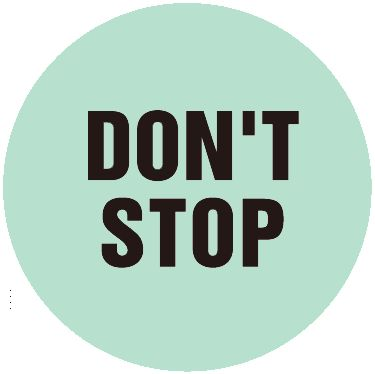

| [音声DL付]究極の英会話（下） 究極の英会話シリーズ | |
| アルク英語出版編集部 | |
| (2014) | |
参照項目から元の箇所に戻るには、お使いのビューワーの仕様に従ってください。または一旦目次を表示し、戻りたい箇所の近くの見出しをタップして戻ってください。
はじめに
Foreword
中学2～3年の文法32項目
×
日常で使える単語だけで
大人の会話は自在に操れる！
『究極の英会話（下）』は、アルクが編集した学習語彙リスト「標準語彙水準SVL12000」（Standard Vocabulary List：略称 SVL12000）をベースとする英会話教材です。
本書は『究極の英会話（上）』に引き続き「もっといろんな表現を英語で話せるようになりたい」という方はもちろん、「今度こそ、英会話をモノにしたい」と再挑戦を目指す方にも最適です。
「英語が話せない」原因の1つは、「練習量が圧倒的に足りない」こと。しかし、そもそも意味の分からない英文をいくら練習しても、身に付くはずはありません。そこで、本書では次の2つの点を基盤に据えて実力を強化していきます。
1
英会話に不可欠なもの、それは文法力。本書で学習する英文には、中学2年後半～中学3年で習う英文法を使用しました。
2
音声を使った種々のトレーニングで文法知識を活性化。基本的な構文をきちんと使いこなして、どんどん話せるようになっていきます。
まずは、1つの英文を何度でも口に出してみてください。考え込まずに英語が出てくるようになったら、しめたもの！

簡単な英語を応用すれば、表現の幅はぐんと広がります。本書での練習を通じて、英語を話すための基礎体力を身に付けてください。
本書の内容は『究極の英語スピーキング Vol. 2』『究極の英語スピーキング Vol. 3』（いずれも2009年初版発行）のテキストおよび音声を加筆修正・再編集したものです。
□
基礎固めと復習は『究極の英会話（上）』で！
上巻では31ユニット分の基本文法を徹底的に学びます。中学入学から中学2年前半に学ぶ文法をカバーしています。
中学1年レベル──何事も最初が肝心
Unit
01 be 動詞の現在形
02 be 動詞の過去形
03 be 動詞の否定文
04 be 動詞の疑問文
05 一般動詞の現在形
06 一般動詞の過去形
07 一般動詞の否定文
08 一般動詞の疑問文
09 疑問詞の What
10 疑問詞の Who
11 疑問詞の Where
12 疑問詞の When
13 疑問詞の How①（状態・手段）
14 疑問詞の How②（程度・数量）
15 疑問詞の Whose
16 疑問詞の Which
17 命令文
18 進行形
19 進行形の疑問文
20 疑問詞＋進行形
21 助動詞 can/could（可能）
22 助動詞 can/could を使った疑問文
23 疑問詞＋助動詞 can/could

中学2年レベル──夏休みまでの粘り
24 助動詞 may（許可）
25 助動詞 would/could（依頼）
26 助動詞 must と have to（義務）
27 助動詞 shall（申し出・勧誘）
28 be going to do（予定）
29 be going to do の疑問文
30 will（意志・未来）
31 will を使った疑問文
□
無料ダウンロード音声について
本書に対応する音声は、すべて無料でダウンロードしていただけます。下記URLにアクセスし、『究極の英会話（下） 中学2～3年レベル英文法100パーセント攻略』を選択、フォームに必要事項をご記入の上送信いただくと、ダウンロードページURLのご案内メールが届きます。
まずはこちらへアクセス！
ALC Download Centerダウンロードセンター
http://www.alc.co.jp/dl/
（2014年12月時点の情報。今後詳細が変更になる可能性があります）
ダウンロードした音声には「究極の英会話（下） 001-224」が収録されています。
ダウンロードした音声ファイルはiTunesなどの音声再生ソフトで取りこんでご利用ください。音声再生ソフトでのファイルの取り込み方法や携帯音楽プレーヤーでの利用方法については、ソフトやプレーヤーに付属するマニュアルでご確認ください。
取り込んだ音声ファイルは、音声再生ソフトで次のように表示されます。
出版社名（アーティスト名）：「ALC PRESS INC.」と表示。
書名（アルバム名）：『究極の英会話（下）』
トラック名（曲名）：どの学習に必要な音声なのかがすぐわかるよう、トラック名は、[001_Unit32]のように曲名が表示されます。
本書では、ダウンロードした音声を使用する部分は
DL001_Unit32 のように、ダウンロードした音声と同じトラック名で表示しています。該当のトラックを再生して学習してください。
□
この本の使い方
how to use it
本書では、ユニットごとにテーマとなる文法が設定されています。1つの文法を使ってさまざまな文を話す練習を行うとともに、口頭で素早く応答する（クイック・レスポンス）トレーニングを通して、会話の実践力を培います。
Step1 考える
●日本語で書かれた3つの文を、英語でどう言うか考えましょう。太文字で示された箇所には特に注意。
●すぐにページをめくらず、ヒントを参考に最低1分間はじっくり考えてみましょう。
Step2 確認する
●答え合わせの後で音声を再生し、「日本語⇒（ポーズ）⇒英語⇒（ポーズ）」の（ポーズ）で英語を音読（口に出して読むこと）しましょう。
DL001_Unit32
↑ ダウンロードした音声のトラック番号はこのマークを参照
↑ このマークの付いている箇所はテキストを見て練習します
切り札はココ！
↑ このユニットで学ぶテーマ文法はこのマークをチェック
Step3 文法を理解する
●テーマ文法についての解説を読み、文の仕組みを把握しましょう。「どう使う？」も参考に、文の構造を頭に入れましょう。
Step4 繰り返し音読する
●テーマ文法を使用した10個の文（または短い対話）を取り上げます。
●音声を再生し、「日本語⇒（ポーズ）⇒英語⇒（ポーズ）」の（ポーズ）で英語を音読しましょう。目標回数は①～⑩を通しで10回です。
■エクセサイズモードで制限時間内に言えなかったら復習しましょう。
↑必ず本を伏せ、耳だけを頼りに取り組んでください
Step5 シャッフルで定着度を試す
●「エクセサイズモード」で音声を再生すると、Step 4 の「日本語⇒（ポーズ）⇒英語」がシャッフルされて（順不同に）流れます。
●（ポーズ）で直前の日本語を英語に直して口頭で答えましょう。次の英語が聞こえるまでが制限時間。音声を途中で止めてはいけません。
Step6 会話を音読する
●テーマ文法を含む会話※を、まずは通しで聞きましょう。
●次のトラックでは、1文ごとに入っている（ポーズ）で英文を音読しましょう（日本語の音声はありません）。
※この会話は「会話編」からテーマ文法を含む箇所を引用したものです。「会話編」には会話全文（英語のみ音声あり）が掲載されています。
↑必ず本を伏せ、耳だけを頼りに取り組んでください
Step7 ロールプレイで即答する
●音声を再生すると、Step 6 の会話音声が流れます。その際、一部が日本語で聞こえます（日本語は会話の冒頭に入ることもあります）。
●日本語をすぐに英語に直して口頭で答えましょう。次の英語が聞こえるまでが制限時間。音声を途中で止めてはいけません。
□
品詞早分かり一覧
parts-of-speech
この本には、英語の文の構造を説明する上で品詞について言及した箇所があります。品詞とは、「1つ1つの単語が持つ役割」を基にグループ分けした際の、グループ名に当たります。ここでは、代表的な品詞が持つ役割を、単語の例とともに紹介します。
動詞
［役割］動作や状態を表す
［例］laugh（笑う）、order（注文する）、want（欲する）
名詞
［役割］人や物の名前を表す
［例］airport（空港）、cousin（いとこ）、Monday（月曜日）
形容詞
［役割］人や物の様子を表す
［例］beautiful（美しい）、healthy（健康な）、nice（すてきな）
副詞
［役割］動詞や形容詞、ほかの副詞、あるいは文全体を説明する
［例］here（ここで）、today（今日）、hard（熱心に）
代名詞
［役割］名詞の代わりをする
［例］I（私）、your（あなたの）、that（あれ）
冠詞
［役割］名詞の前に置かれ、特定性などの意味を加える
［例］a/an、the
前置詞
［役割］名詞の前に置かれ、時や場所、手段などを表す
［例］at［時刻・地点］、on［特定日・接触］、by［期限・近接・手段］
接続詞
［役割］単語どうし、句どうし、節や文どうし※を結び付ける
［例］and（そして）、because（なぜなら）、or（あるいは）
※句は2つ以上の単語のまとまりで、品詞に相当する働きを持つ（主語＋動詞は含まない）。節は2つ以上の単語のまとまりで、主語＋動詞を含む。
助動詞
［役割］動詞に添えて使われ、「～できる」「～だろう」などの意味を加える
［例］can（～できる）、will（～でしょう）、may（～してもよい）
疑問詞
［役割］「何？」「誰？」「いつ？」などを尋ねる際に使われ、代名詞・形容詞などの役割を果たす
［例］what（何）、who（誰）、when（いつ）、where（どこ）
□
□
行け行け
中学2年レベル
─休み明けからの本気
上巻からの進級組も、この本からの新入生も本腰を入れて学習スタート。ここからは中学2年の夏以降に習う文法をおさらいしさまざまな表現を身に付けていきましょう。長めの英文にも挑戦します。
気持ちも新たに頑張りましょう。
□
Unit32
レベル：中2
Q：コレ英語で言える？
次の日本語を英語で何て言う？ 太文字に気をつけて、1分間、考えよう。自信の程を□から選ぼう！
1. 最初の方式よりも、こちらの方がいいですね。
□楽勝です
□なんとか
□ムリムリ
2. あなたのかばんは、私のより重そうです。
□楽勝です
□なんとか
□ムリムリ
3.もう少しゆっくり話してもらえますか。
□楽勝です
□なんとか
□ムリムリ
ヒント
2つを比べる言い方が、あったよね。
□
DL001_Unit32
A：こう言おう
音声を再生し、「日本語⇒（ポーズ）⇒英語⇒（ポーズ）」の（ポーズ）で英語を音読しよう。
1. 最初の方式よりも、こちらの方がいいですね。
This system is better than the first one.
2. あなたのかばんは、私のより重そうです。
Your bag looksheavier than mine.
3.もう少しゆっくり話してもらえますか。
Can you speakmore slowly?
切り札はココ！
比較級
□
解説
基準にする物や事と比較する
「（主語）は○○より××です」と2つの物や事を比べるには「主語＋動詞＋×× than ○○」の形を使い、××には比べる性質を表す語（形容詞・副詞）の比較級が入ります。○○を基準にして、主語がよりどうなのか、ということを伝えます。基準にする物を言わなくても分かるときには、than ○○は省略されることがあります。
比較級の作り方
形容詞や副詞を比較級にするには、原級（形容詞・副詞のそのままの形）の語尾に-erを付けます。ただし、2音節以上になる場合はたいていmoreを使います。このほか、good→betterのように不規則変化をする語もあります。
どう使う？
| 主語 | 動詞 | 比較級 than 比較基準の物や事 |
| ↓ | ↓ | ↓ |
| This approach | is | safer than the old one. |
| Kenji | speaks | more slowly than Misato. |
DL002_Unit32
音読モード
音声を再生し、「日本語⇒（ポーズ）⇒英語⇒（ポーズ）」の（ポーズ）で英語を音読しよう。
① このやり方は、旧式のものより安全です。
This approach is safer than the old one.
② これらの素材は、あれらより安いです。
These materials are cheaper than those.
③ 健司の計画は、美里のものよりずっと興味深いです。
Kenji's plan is a lot more interesting than Misato's.
④ 小林さんは、いつもより遅く会社に戻ってきました。
Ms. Kobayashi came back to the office later than usual.
⑤ 和田さんは、私より1時間早く退社しました。
Mr. Wada left the office an hour earlier than I did.
⑥ ダンは、うちのチームの誰よりも早く会社に来ます。
Dan comes to the office earlier than any other member in our team.
⑦ 地下鉄は、バスよりも速いでしょう。
The subway will be faster than the bus.
⑧ 佐藤さんのレッスンは、関さんのものより楽しかったです。
Mr. Sato's lesson was more fun than Mr. Seki's.
⑨ 他社よりも早く動きましょう。
Let's move quicker than other companies.
⑩ レコードは、もっと注意深く扱わなければいけません。
You must handle records more carefully.
注①oneは直前に出てきた名詞（ここではapproach）を指す代名詞 ③a lot（ずっと）は比較の差の大きさを表す。他にmuchやfarも使える ④「いつもより遅く」 later than usual ⑥「〜の誰（どのメンバー）よりも」 than any other member in 〜
DL003_Unit32

エクセサイズモード
日本語を英語に直して言ってみよう。
音声を途中で止めてはいけない。
DL004_Unit32
DL005_Unit32
会話モード
会話をまず通しで聞こう。次のトラックではポーズで英語を繰り返そう。（会話全文はこちら 参照）
Son: Mom, Robert is so much smarter than I am. He got 96 percent on his math test and I only got 72 percent.And I always study so much harder than he does.
Mother: Relax. Robert is older than you are. You can't compare.
息子：母さん、ロバートは僕よりずっと頭がいいね。あいつ数学のテストで96パーセント取って、僕はたった72パーセントしか取れなかった。しかも、僕はいつだって、あいつよりずっと一生懸命勉強してるのにさ。
母：安心しなさい。ロバートはあなたより年上よ。比べられないわ。
DL006_Unit32
ロールプレイ
日本語を英語に直して言ってみよう。
音声を途中で止めてはいけない。
□ 英語ですぐに言えた ⇒ おつかれさま！ 次の Unit も頑張ろう。
□ 英語で言えなかった ⇒「会話モード」からやり直し。
Unit33
レベル：中2
Q：コレ英語で言える？
次の日本語を英語で何て言う？ 太文字に気をつけて、1分間、考えよう。自信の程を□から選ぼう！
1. 1年のうちで今週が一番忙しいです。
□楽勝です
□なんとか
□ムリムリ
2. このフロアでは、あのコンピューターが一番速くプログラムを走らせます。
□楽勝です
□なんとか
□ムリムリ
3. この種のうわさが一番早く広がります。
□楽勝です
□なんとか
□ムリムリ
ヒント
語尾の形に、気をつけたい。
□
DL007_Unit33
A：こう言おう
音声を再生し、ポーズで英語を音読しよう。
1. 1年のうちで今週が一番忙しいです。
This week isthe busiestone of the year.
2. このフロアでは、あのコンピューターが一番速くプログラムを走らせます。
That computer runs the programfastest on our floor.
3. この種のうわさが一番早く広がります。
This type of rumor will spreadmost quickly.
切り札はココ！
最上級
□
解説
何が、どんな点で一番なのか
3つ以上の物や事の中で「○○が最も××です」「○○が一番××です」と言うには、基本的に「主語＋動詞＋the ××＋...」の形を使い、××には比べる性質を現す語（形容詞・副詞）の最上級が入ります。ただし、副詞の最上級はthe が付かないこともあります。...には「...の中で」と比較させる条件が入りますが、比較の条件が明らかな場合は省略されます。
最上級の作り方
形容詞や副詞を最上級にするには原級の語尾に-estを付け、2音節以上の場合はたいていmostを使います。good→bestのように不規則変化をする語もあります。
どう使う？
| 主語 | 動詞 | (the) 最上級＋比較の条件 |
| ↓ | ↓ | ↓ |
| This | is | thelargest room in the building. |
| Mr. Ito | speaks | themost in our department. |
DL008_Unit33
音読モード
音声を再生し、ポーズで英語を音読しよう。
① ここは、この建物の中で一番大きな部屋です。
This is the largest room in the building.
② 兼六園は、北陸で最も美しい公園です。
Kenrokuen is the most beautiful park in Hokuriku.
③ 彼らは、そのフェスティバルの中で一番素晴らしいジャズミュージシャンたちでした。
They were the best jazz musicians at the festival.
④ 内田さんは、出口の一番近くに座っていました。
Ms. Uchida was sitting closest to the exit door.
⑤ あれは本当に最善の選択でしたよ！
That really was the best choice!
⑥ 聡は、世界中で一番幸せな人間に見えます！
Satoshi looks like the happiest person in the world!
⑦ 今日はこの夏、一番の暑さでした。
Today was the hottest this summer.
⑧ 最後のダンスが、すべてのイベントの中で一番わくわくしました。
The last dance was the most exciting of all the events.
⑨ 伊藤さんは、私たちの部署の中で一番口数が多いです。
Mr. Ito speaks the most in our department.
⑩ あのラインで最も価格を抑えたコンピューターを見せてください。
Please show us the least expensive computer in that line.
注⑥「〜に見える」 look like 〜 ⑨「〜の中で一番口数が多い」 speak the most in 〜 このmostはmuchの最上級 ⑩「最も価格を抑えた」とは「最も高くない」ということ。「最も〜でない」と言うときはmostではなくleastを使う
DL009_Unit33
エクセサイズモード
日本語を英語に直して言ってみよう。
音声を途中で止めてはいけない。
DL010_Unit33
DL011_Unit33
会話モード
会話をまず通しで聞こう。次のトラックではポーズで英語を繰り返そう。（会話全文はこちら 参照）
Woman: This was the hottest summer on record.
Man: It was terrible.We always had our air conditioner on the strongest setting.
W: We did, too. Our electricity bill was the highest it has everbeen .
.
女：今年の夏は記録上で一番の暑さだったわね。
男：ひどかったね。うちではエアコンを常に最強に設定していたよ。
女：うちも。わが家の電気代はこれまでで一番高くついたわ。
the highest it has ever beenは「これまでで最高の」という意味。
DL012_Unit33
ロールプレイ
日本語を英語に直して言ってみよう。
音声を途中で止めてはいけない。
□ 英語ですぐに言えた ⇒ おつかれさま！ 次の Unit も頑張ろう。
□ 英語で言えなかった ⇒「会話モード」からやり直し。
Unit34
レベル：中2
Q：コレ英語で言える？
次の日本語を英語で何て言う？ 太文字に気をつけて、1分間、考えよう。自信の程を□から選ぼう！
1. そのソファは、シングルベッドと同じくらいの大きさです。
□楽勝です
□なんとか
□ムリムリ
2. 彼もあなたと同じようにすぐに覚えますよ。
□楽勝です
□なんとか
□ムリムリ
3. うちの事務所はおたくほど広くはありません。
□楽勝です
□なんとか
□ムリムリ
ヒント
aで始まる超短い単語はナニ？
□
DL013_Unit34
A：こう言おう
音声を再生し、ポーズで英語を音読しよう。
1. そのソファは、シングルベッドと同じくらいの大きさです。
The sofa isas big as a single bed.
2. 彼もあなたと同じようにすぐに覚えますよ。
He'll learnas quickly as you did.
3. うちの事務所はおたくほど広くはありません。
My office isnot as large as yours.
切り札はココ！
as＋原級＋as
□
解説
何と比べるのか、どんな点が同じなのか
2つの物や事を比較して「（主語）は○○と同じくらい××です」と言うには、基本的には「主語＋動詞＋as ××as ○○」の形を使います。××には物事の性質を表す語（形容詞・副詞）が入り、○○には比べる対象が入ります。主語と○○の語順に注意しましょう。このような比較の方法を「原級を使った比較」と言います。この「原級を使った比較」では、形容詞や副詞は文字通り原級を使います。なお、形容詞のmanyやmuchの後ろに名詞を伴う場合は、as many books as 〜（〜と同じくらいたくさんの本）のようになります。
notを入れると「〇〇ほど××ではない」に
文中に否定のnotを入れると、「（主語）は○○ほど××ではない」という意味になります。notを入れる位置は通常の文と同様。be動詞や助動詞の場合はその直後、一般動詞の場合は動詞の前にdon'tやdoesn't、didn'tが出現します。
どう使う？
| 主語 | 動詞 | as 形容詞/副詞 as 比較の対象 |
| ↓ | ↓ | ↓ |
| The service | was | as brilliant as the food. |
| He'll | learn | as quickly as you did. |
DL014_Unit34
音読モード
音声を再生し、ポーズで英語を音読しよう。
① サービスは、料理と同じくらい素晴らしかったです。
The service was as brilliant as the food.
② 私の新しいコンピューターは、ノートと同じくらいの薄さです。
My new computer is as thin as a notebook.
③ 彼女は、英語のほかに中国語も話せます。
She speaks Chinese as well as English.
④ 彼は、マーサと同じくらい注意深く数字を確認します。
He checks the figures as carefully as Martha does.
⑤ 彼らは、昨年と同じくらいの利益を得ました。
They earned as much profit as last year.
⑥ 好きなだけ質問をして構いません。
You can ask as many questions as you like.
⑦ 建物の状態は、最初に考えたほど深刻ではありません。
The condition of the building is not as serious as we first thought.
⑧ 私は、ほかの人たちほど頻繁にコンピューターを使いません。
I don't use the computer as often as other people.
⑨ 結果は、最初の2つほど良くありませんでした。
The result was not as good as the first two.
⑩ できるだけ早く医者に行きなさい。
Go see a doctor as soon as you can.
注③「英語と同じくらい（上手に）」と考える ⑤「利益を得る」 earn profit ⑦「深刻ではない」と否定形なのでbe動詞の後ろにnotを続ける ⑩「医者に行く」 go see a doctor
DL015_Unit34
エクセサイズモード
日本語を英語に直して言ってみよう。
音声を途中で止めてはいけない。
DL016_Unit34
DL017_Unit34
会話モード
会話をまず通しで聞こう。次のトラックではポーズで英語を繰り返そう。（会話全文はこちら 参照）
W: Joe, I'm surprised! I didn't know you could cook.
M: I hope you enjoy it.
W:I love cooking, but I can't cook as well as you.How did you learn?
M: My father taught me. He's a fisherman.
女：ジョー、驚いたわ！ あなたが料理できるなんて知らなかった。
男：おいしく食べてくれるといいんだけど。
女：料理は好きだけど、あなたみたいに上手にはできないわ。どうやって覚えたの？
男：父が教えてくれたんだ。彼は漁師なんだよ。
DL018_Unit34
ロールプレイ
日本語を英語に直して言ってみよう。
音声を途中で止めてはいけない。
□ 英語ですぐに言えた ⇒ おつかれさま！ 次の Unit も頑張ろう。
□ 英語で言えなかった ⇒「会話モード」からやり直し。
Unit35
レベル：中2
Q：コレ英語で言える？
次の日本語を英語で何て言う？ 太文字に気をつけて、1分間、考えよう。自信の程を□から選ぼう！
1. この素材は、もう一方のものよりも軽いですか。
□楽勝です
□なんとか
□ムリムリ
2. 彼はビートルズが一番好きだったんですか。
□楽勝です
□なんとか
□ムリムリ
3. これは口で言うほど簡単でしょうか。
□楽勝です
□なんとか
□ムリムリ
ヒント
要するに疑問文じゃん！ 文頭がカギだね。
□
DL019_Unit35
A：こう言おう
音声を再生し、ポーズで英語を音読しよう。
1. この素材は、もう一方のものよりも軽いですか。
Is this materiallighter than the other one?
2. 彼はビートルズが一番好きだったんですか。
Did helike the Beatlesbest?
3. これは口で言うほど簡単でしょうか。
Is itas simple as it sounds?
切り札はココ！
比較級／最上級の疑問文
□
解説
be動詞を使う場合
比較級・最上級・原級を用いて「（主語）は○○より××ですか」などと比較して尋ねる疑問文の作り方は、基本的に通常の疑問文の場合と同じです。be動詞を文頭に出し、「be動詞＋主語＋×× than ○○?」という形にし、××に比較の表現が入ります。This is lighter than that one.（これはあれよりも軽いです）を疑問文にするなら、Is this lighter than that one?のようになるのです。答え方は基本的に、Yes, it is.（はい、そうです）／No, it isn't.（いいえ、違います）です。
一般動詞を使う場合
一般動詞を使い比較して尋ねる疑問文の場合も、作り方は通常の疑問文と同じです。He liked the Beatles best.（彼はビートルズが一番好きでした）を疑問文にするなら、didを文頭に出し、Did he like the Beatles best?のようになります。答え方は、Yes, he did.（はい、そうでした）／No, he didn't.（いいえ、そうではありませんでした）が基本です。
どう使う？
| be動詞 | 主語 | 比較の表現 |
| ↓ | ↓ | ↓ |
| Is | this rope | longer than that one? |
| Was | this book | as difficult as that one? |
| Do | 主語 | 比較の表現 |
| ↓ | ↓ | ↓ |
| Did | she | arrive herethe last? |
DL020_Unit35
音読モード
音声を再生し、ポーズで英語を音読しよう。
① このロープはあの白いのより短いんですか。
⇒はい、短いです。
Is this rope shorter than that white one?
⇒ Yes, it is.
② これが横浜まで一番早く行ける電車ですか。
⇒いいえ、あの急行の方が早いです。
Is this the fastest train to Yokohama?
⇒ No, that express is faster.
③ 彼女の方が、ほかの人たちよりも驚いていたんですか。
⇒はい、そうでした。
Was she more surprised than the others?
⇒ Yes, she was.
④ あれが、あなたにとって一番大切なことだったんですか。
⇒はい、そうでした。
Was that the most important thing for you?
⇒ Yes, it was.
⑤ これらの本は、あちらの本と同じくらい難しかったんですか。
⇒いいえ、あちらの方が難しかったです。
Were these books as difficult as that one?
⇒ No, that one was more difficult.
⑥ 彼は英語よりフランス語の方が上手に話せるんですか。
⇒はい、そうです。
Does he speak French better than English?
⇒ Yes, he does.
⑦ あなたは、彼女よりも中野さんを高く評価しているんですか。
⇒はい、そうです。
Do you think more highly of Mr. Nakano than her?
⇒ Yes, I do.
⑧ 彼らは、ブルーキャッツと同じくらい早く配達するんですか。
⇒実のところ、彼らの方がブルーキャッツより早いんです。
Do they deliver as quickly as Blue Cats?
⇒ Actually, they are faster than Blue Cats.
⑨ あなたはここに最後に来たんですか。
⇒はい、そうでした。
Did you arrive here the last?
⇒ Yes, I did.
⑩ 彼らは、あなたが思っていたよりも早く到着したんですか。
⇒はい、お昼に着いたんです。
Did they arrive earlier than you expected?
⇒ Yes, they arrived at noon.
注③「ほかの人たち」 the others ⑦「〜を高く評価する」 think highly of 〜 ⑧「配達する」 deliver ⑩「思っていた」はexpected（予期していた）を使う
DL021_Unit35
エクセサイズモード
日本語を英語に直して言ってみよう。
音声を途中で止めてはいけない。
DL022_Unit35
DL023_Unit35
会話モード
会話をまず通しで聞こう。次のトラックではポーズで英語を繰り返そう。（会話全文はこちら 参照）
M: Let's order a pizza.
W: OK, I have a few pizza flyers here. Do you remember? Is Lorenzo's Pizza tastier than Mario's?
M: Yes, I think it is. I'm starving.Does Mario's Pizza deliver more quickly?
男：ピザを頼もうよ。
女：オーケー、ピザのチラシ、ここに何枚かあるわよ。覚えてる？ 「ロレンゾのピザ」が「マリオ」のよりもおいしいんだっけ？
男：うん、そうだと思う。腹が減ったなあ。「マリオのピザ」の方が早く届けてくれるのかな。
DL024_Unit35
ロールプレイ
日本語を英語に直して言ってみよう。
音声を途中で止めてはいけない。
□ 英語ですぐに言えた ⇒ おつかれさま！ 次の Unit も頑張ろう。
□ 英語で言えなかった ⇒「会話モード」からやり直し。
Unit36
レベル：中2
Q：コレ英語で言える？
次の日本語を英語で何て言う？ 太文字に気をつけて、1分間、考えよう。自信の程を□から選ぼう！
1. 値段よりも大事なのは何ですか。
□楽勝です
□なんとか
□ムリムリ
2.一番よく食事をしに行くのはどこですか。
□楽勝です
□なんとか
□ムリムリ
3. あなたと同じくらい速くタイプできるのは誰ですか。
□楽勝です
□なんとか
□ムリムリ
ヒント
「何」「どこ」「誰」がポイントだね。
□
DL025_Unit36
A：こう言おう
音声を再生し、ポーズで英語を音読しよう。
1. 値段よりも大事なのは何ですか。
What ismore important than the price?
2.一番よく食事をしに行くのはどこですか。
Where do you eat outmost often?
3. あなたと同じくらい速くタイプできるのは誰ですか。
Who can typeas fast as you can?
切り札はココ！
疑問詞＋比較級／最上級
□
解説
「疑問詞」と「be動詞」を使った疑問文
「何が」「誰が」「どこで」など、より具体的な情報を得るためには、いわゆる5W1H（疑問詞）を使った疑問文が有効で、これは比較級・最上級・原級を使った比較の文の場合にも使えます。be動詞と比較級を使った文の場合は、「疑問詞＋be動詞＋×× than ○○?」が基本。What is more important than the price?のように使います。
「疑問詞」と「一般動詞」を使った疑問文
一般動詞を使った比較の文の場合は、「疑問詞＋do/does/did＋主語＋動詞の原形＋比較の表現?」の形になります。Where do you eat out most often?のように使います。なお、疑問詞が主語と同一の人・物事の場合は、3つ目の例のように「疑問詞＋（助）動詞＋比較の表現?」となります。
なお、疑問詞を使った疑問文にはYes/Noでは答えられませんので注意しましょう。
どう使う？
| 疑問詞 | be動詞/一般動詞 | 比較の表現 |
| ↓ | ↓ | ↓ |
| Who | is | a better lawyer than him? |
| Who | works | as hard as Mr. Hino? |
| 疑問詞 | do＋主語＋動詞の原形 | 比較の表現 |
| ↓ | ↓ | ↓ |
| Where | do you eat out | most often? |
DL026_Unit36
音読モード
音声を再生し、ポーズで英語を音読しよう。
① 彼よりいい弁護士は誰ですか。
⇒ジョーンズさんです。
Who is a better lawyer than him?
⇒ Ms. Jones is.
② 100人での会議にはどの部屋が最適ですか。
⇒C10の部屋が150人収容できます。
Which room is the best for a meeting of 100?
⇒ Room C10 holds up to 150 people.
③ 家の中で一番乾燥しているのはどこですか。
⇒リビングルームが一番乾燥していますね。
Where is the driest place in the house?
⇒ The living room is the driest.
④ 日本では、車は何色が一番一般的ですか。
⇒白だと思います。
What is the most common color of cars in Japan?
⇒ White, I guess.
⑤ 彼らは、最高級の絹をどのように作っていましたか。
⇒手作業で作っていました。
How did they make the finest silk?
⇒ They made it by hand.
⑥ 日野さんと同じくらい一生懸命に働いているのは誰ですか。
⇒河合さんとスミスさんです。
Who works as hard as Mr. Hino?
⇒ Mr. Kawai and Ms. Smith do.
⑦ どうしたら、これらの小包をもっと早く配達できますか。
⇒ホワイトバード社の速達サービスを使いましょう。
How can we deliver these packages faster?
⇒ Let's use the White Birds' express service.
⑧ どちらの支援策がより利益を上げるでしょうか。
⇒私の意見では、こちらの案ですね。
Which of these support plans will pay better?
⇒ In my opinion, this one will.
⑨ 各駅停車だと、どのくらい余分に時間がかかりますか。
⇒20分ほど余計にかかります。
How much longer does it take by local train?
⇒ It takes about 20 minutes longer.
⑩ 一番フォーマルな服はどこで買えますか。
⇒2階です、お客さま。
Where can I find the most formal clothes?
⇒ On the second floor, sir.
注②「100人での会議」はa meeting of 100。「150人収容する」はhold up to 150 people。up to 〜 を使うことで「最多で〜まで」のニュアンスが出せる ⑤「手作業で」 by hand ⑧「より利益を上げる」 pay better ⑨「所要時間」について「どのくらい余分に、余計に」と問うにはHow much longer 〜 ?を使う。所要時間を表す主語はit、「（時間が）かかる」はtakeで表す
DL027_Unit36
エクセサイズモード
日本語を英語に直して言ってみよう。
音声を途中で止めてはいけない。
DL028_Unit36
DL029_Unit36
会話モード
会話をまず通しで聞こう。次のトラックではポーズで英語を繰り返そう。（会話全文はこちら 参照）
M: I need some help with this crossword.
W: Oh? I love crosswords. What's the clue?
M:What's the biggest city in the world? Five letters.
W: Oh, that must be Delhi.
男：このクロスワード、ちょっと手伝ってほしいんだ。
女：そう？ クロスワードは大好き。ヒントは何？
男：世界で一番大きな都市はどこでしょう。5文字です。
女：ああ、それならデリーに決まりだわ。
DL030_Unit36
ロールプレイ
日本語を英語に直して言ってみよう。
音声を途中で止めてはいけない。
□ 英語ですぐに言えた ⇒ おつかれさま！ 次の Unit も頑張ろう。
□ 英語で言えなかった ⇒「会話モード」からやり直し。
Unit37
レベル：中2
Q：コレ英語で言える？
次の日本語を英語で何て言う？ 太文字に気をつけて、1分間、考えよう。自信の程を□から選ぼう！
1. 壁に3枚の絵が掛かっています。
□楽勝です
□なんとか
□ムリムリ
2. 銀行の近くに古い図書館がありました。
□楽勝です
□なんとか
□ムリムリ
3. ソファの上に毛布はありますか。
□楽勝です
□なんとか
□ムリムリ
ヒント
「掛かっている」は壁に「ある」ってこと。
□
DL031_Unit37
A：こう言おう
音声を再生し、ポーズで英語を音読しよう。
1. 壁に3枚の絵が掛かっています。
There are three pictures on the wall.
2. 銀行の近くに古い図書館がありました。
There was an old library near the bank.
3. ソファの上に毛布はありますか。
Is there a blanket on the sofa?
切り札はココ！
There is とThere are
□
解説
「○○があります」を表すThere is/are
「○○があります」と言うときは、「There is/are＋○○」の形を使います。○○の後ろにはさらに、場所を表す語句が付くことが多くあります。○○が単数ならばis、複数ならばareを使います。「○○がありました」と過去のことを言うときは、「Therewas/were ＋○○」、「○○があるでしょう」と未来のことを言うときは、「Therewill be＋○○」、「○○がありますか」と疑問文にするときは、thereとbe動詞を倒置して、「Is/Are there ＋○○?」の形にします。
There is/areを使うのは、不特定のものだけ！
There is/are を使うのは、不特定のものについて言う場合です。特定のものの場合は使えません。例えば、「テーブルの下に（知らない）猫がいます」と言うときは、There isa cat under the table.と言います。「テーブルの下に私の猫がいます」と言いたいときは、（×）There is my cat under the table.とは言わず、My cat is under the table.と言うのです。
どう使う？
| There | be動詞 | 不特定のもの |
| ↓ | ↓ | ↓ |
| There | was | an old libra that one? |
| be動詞 | there | 不特定のもの |
| ↓ | ↓ | ↓ |
| Were | there | a lot of people at the party? |
DL032_Unit37
音読モード
音声を再生し、ポーズで英語を音読しよう。
① ホテルから駅までバスが運行されています。
There is a bus service from the hotel to the station.
② その本には役立つ情報がたくさん載っています。
There is much useful information in the book.
③ 私の部署の人員は6人です。
There are six people in my department.
④ コンサートホールには多くの聴衆がいました。
There was a large audience in the concert hall.
⑤ 昨年はほとんど雨が降りませんでした。
There was little rain last year.
⑥ 明後日、会議があります。
There will be a meeting the day after tomorrow.
⑦ その件について話し合いが持たれるでしょう。
There will be a discussion about the matter.
⑧ あなたの町には何か面白い行事がありますか。
⇒はい、あります。
Are there any interesting events in your town?
⇒ Yes, there are.
⑨ パーティーにはたくさんの人がいましたか。
⇒はい、100人以上いました。
Were there a lot of people at the party?
⇒ Yes, there were more than 100.
⑩ 会議には何人が出席していましたか。
⇒15人です。
How many people were there at the meeting?
⇒ There were 15.
注①「バスが運行されている」は「バスのサービスがある」と考えて、There is a bus serviceと表す ②informationは数えられない名詞（不可算名詞）なので、「たくさんの」はmuchで表す ④「多くの聴衆」はa large audience。「聴衆」は1つの集合体と考えるため単数扱い ⑤「ほとんど〜ない」はlittleで表す。aは付けない ⑩「何人が〜？」と具体的な数字を問うにはHow many 〜?を使う
DL033_Unit37
エクセサイズモード
日本語を英語に直して言ってみよう。
音声を途中で止めてはいけない。
DL034_Unit37
DL035_Unit37
会話モード
会話をまず通しで聞こう。次のトラックではポーズで英語を繰り返そう。（会話全文はこちら 参照）
M: Look! There's a cat in the tree!
W: That's a very big cat. How did he climb up there?
M: It looks like he can't get down. We'll have to save him.
W: But we can't reach him.Is there anything to stand on?
男：見てよ！ 木の上に猫がいる！
女：ずいぶん大きい猫ね。どうやってあそこまで登ったのかしら？
男：下りられなくなったみたいだね。助けなきゃ。
女：でも手は届かないわよ。踏み台にできるものはある？
DL036_Unit37
ロールプレイ
日本語を英語に直して言ってみよう。
音声を途中で止めてはいけない。
□ 英語ですぐに言えた ⇒ おつかれさま！ 次の Unit も頑張ろう。
□ 英語で言えなかった ⇒「会話モード」からやり直し。
Unit38
レベル：中2
Q：コレ英語で言える？
次の日本語を英語で何て言う？ 太文字に気をつけて、1分間、考えよう。自信の程を□から選ぼう！
1. 休暇中に読む本がたくさんあります。
□楽勝です
□なんとか
□ムリムリ
2. 私たちには美しい庭を造るための資金がありません。
□楽勝です
□なんとか
□ムリムリ
3.何か書くものを持っていますか。
□楽勝です
□なんとか
□ムリムリ
ヒント
3.は「write with 何か」と考えて。
□
DL037_Unit38
A：こう言おう
音声を再生し、ポーズで英語を音読しよう。
1. 休暇中に読む本がたくさんあります。
I have lots ofbooks to read during my vacation.
2. 私たちには美しい庭を造るための資金がありません。
We have nomoney to make a beautiful garden.
3.何か書くものを持っていますか。
Do you havesomething to write with?
切り札はココ！
不定詞の形容詞的用法
□
解説
「to不定詞」とは
to不定詞（不定詞）とは、「to＋動詞の原形」で表される形の総称。この「動詞の原形」を「不定詞」と呼びます。動詞なのに、主語や時制によって形が変わらない（規定されない）ため「不定詞」と呼ばれるのです。to不定詞には、さまざまな意味と使い方があります。
名詞の説明をするto不定詞
「○○（動詞）するための××」と言いたいときは、「××＋to＋○○（動詞の原形）」を使います。例えば、「読むための本」と言いたいときは、a bookto readのようになります。文脈によっては「○○しなければならない××」というニュアンスになることもあり、a book to readは「読まなければいけない本」という意味にも取れます。
to不定詞が直前の名詞（句）の説明をするので、to不定詞の形容詞的用法と呼ばれる使い方です。
どう使う？
| 説明される物や事 | 説明（to＋動詞の原形） |
| ↓ | ↓ |
| books | to read |
| a nice person | to work with |
| the best way | to solve the problem |
DL038_Unit38
音読モード
音声を再生し、ポーズで英語を音読しよう。
① 私は今日、やらなければならない仕事がたくさんあります。
I have a lot of work to do today.
② ジュリアには助けてくれる人が必要です。
Julia needs someone to help her.
③ パメラは一緒に仕事をするには素晴らしい人です。
Pamela is a nice person to work with.
④ 彼から学ぶことはたくさんあります。
There are a lot of things to learn from him.
⑤ あなたに言うことは何もありません。
I have nothing to say to you.
⑥ ジョンはそんなことをする人ではありません。
John is the last person to do such a thing.
⑦ 私たちは、問題を解決するための最善の方法を見付けなければなりません。
We must find out the best way to solve the problem.
⑧ 私と話す時間はありますか。
⇒はい、あります。
Do you have time to talk with me?
⇒ Yes, I do.
⑨ それに反対する人はいますか。
⇒いいえ、いません。
Is there anyone to speak against it?
⇒ No, there isn't.
⑩ その仕事をするのに最適な人は誰ですか。
⇒レベッカです。
Who is the best person to do the job?
⇒ Rebecca is.
注③「〜と一緒に仕事をする」 work with 〜 ⑤「〜することは何もない」 have nothing to 〜 ⑥「そんなことをする人ではない」はnot a man to do such a thingや、「一番最後にそんなことをする人だ」と考え、the last person to do such a thingのように言う ⑨「〜に反対する」 speak against 〜
DL039_Unit38
エクセサイズモード
日本語を英語に直して言ってみよう。
音声を途中で止めてはいけない。
DL040_Unit38
DL041_Unit38
会話モード
会話をまず通しで聞こう。次のトラックではポーズで英語を繰り返そう。（会話全文はこちら 参照）
W: You're late.
M: I'm sorry, but I had some work to finish.
W: It's Sunday. You need some rest once in awhile
M: I'm taking tomorrowoff instead.
instead.
女：遅いわよ。
男：ごめん、でも終わらせなきゃいけない仕事があったんだ。
女：今日は日曜日よ。たまには休みを取らなきゃ。
男：代わりに明日、休みを取るんだよ。
once in a while は「時折、時々」。 off は「（仕事を）休んで」という意味の副詞。take tomorrow off で「明日休みを取る」という意味になる。
DL042_Unit38
ロールプレイ
日本語を英語に直して言ってみよう。
音声を途中で止めてはいけない。
□ 英語ですぐに言えた ⇒ おつかれさま！ 次の Unit も頑張ろう。
□ 英語で言えなかった ⇒「会話モード」からやり直し。
Unit39
レベル：中2
Q：コレ英語で言える？
次の日本語を英語で何て言う？ 太文字に気をつけて、1分間、考えよう。自信の程を□から選ぼう！
1. 私たちは新しい車を買うために貯金しています。
□楽勝です
□なんとか
□ムリムリ
2. ベッキーはスミスさんに会うためにシカゴへ行きました。
□楽勝です
□なんとか
□ムリムリ
3. 彼女はミスをしないように慎重に作業しました。
□楽勝です
□なんとか
□ムリムリ
ヒント
これも不○詞を使って言える。
□
DL043_Unit39
A：こう言おう
音声を再生し、ポーズで英語を音読しよう。
1. 私たちは新しい車を買うために貯金しています。
We are saving money to buy a new car.
2. ベッキーはスミスさんに会うためにシカゴへ行きました。
Becky went to Chicagoto see Ms. Smith.
3. 彼女はミスをしないように慎重に作業しました。
She worked carefullyso as not to make mistakes.
切り札はココ！
不定詞の副詞的用法①（目的）
□
解説
目的を表すto不定詞
「○○するために××する」とある動作を行う目的を言いたいときにも、to不定詞が使えます。to不定詞の副詞的用法と呼ばれる使い方です。例えば、「買うために」と言いたいときはto buy。We are saving moneyto buy a new car.のように使います。to不定詞の後ろには、目的をさらに詳しく説明する語句が入ることがほとんどです。××の部分がgo（〜へ行く）やcome（〜へ来る）の場合は、「○○しに行く／来る」のようなニュアンスになります。
to不定詞の否定形
「○○しないために、○○しないように」と言うときは、toの直前にso as notを入れます。She worked carefullyso as not to make mistakes.のように使います。so as を省略してnot toだけを使う場合もあります。
どう使う？
| 動作 | 動作の目的（to＋動詞の原形） |
| ↓ | ↓ |
| go to Chicago | to see Ms. Smith |
| be saving money | to buy a new car |
| run to the station | so as not to miss the train |
DL044_Unit39
音読モード
音声を再生し、ポーズで英語を音読しよう。
① あの仕事を終わらせるために、この前の日曜日は徹夜しました。
I was up all night last Sunday to finish that work.
② 私の息子は、いとこに会うために北海道へ行きました。
My son went to Hokkaido to meet his cousin.
③ ご要望に応えられるよう、最善を尽くします。
We will do our best to meet your needs.
④ 支援を頼むために銀行へ行ってきます。
I'm going to the bank to ask for support.
⑤ サービスを利用するためには、青い用紙に記入してください。
Please fill in the blue form to use the service.
⑥ この件を話し合うために会議を開きましょう。
Let's have a meeting to discuss this matter.
⑦ 息子を起こさないように、両親は静かに話しました。
The parents spoke quietly so as not to wake up their son.
⑧ 電車に乗り遅れないために、彼女は駅まで走りました。
She ran to the station so as not to miss the train.
⑨ 彼は打ち合わせをするために中国へ行ったんですか。
⇒はい、そうです。
Did he go to China to have a meeting?
⇒ Yes, he did.
⑩ 社長に会うには何分待たなければならないですか。
⇒30分ほどです。
How long will I have to wait to see the president?
⇒ About 30 minutes.
注①「徹夜する」は「一晩中起きている」と考えて、be up all nightで表す ③「〜の要望に応える」 meet one's needs 「最善を尽くす」 do one's best ④「支援を頼む」 ask for support ⑤「〜に記入する」 fill in 〜 ⑦⑧「〜しないために」はso as not to 〜を使う
DL045_Unit39
エクセサイズモード
日本語を英語に直して言ってみよう。
音声を途中で止めてはいけない。
DL046_Unit39
DL047_Unit39
会話モード
会話をまず通しで聞こう。次のトラックではポーズで英語を繰り返そう。（会話全文はこちら 参照）
W: How about going to a movie next Saturday?
M: I'm sorry I can't.I'm going to the zoo with my daughter to see the pandas.
W: Oh, that sounds fun.
M: Forsure. But to do that, I have to finish this work before the weekend.
女：今度の土曜日に映画に行かない？
男：ごめん、駄目なんだ。娘と一緒にパンダを見に動物園へ行くんだよ。
女：へえ、楽しそうね。
男：うだね。でもそのためには、週末前にこの仕事を仕上げなくちゃ。
For sure. は「確かに」のほか「うん、そうだね」という返答でも使われる。
DL048_Unit39
ロールプレイ
日本語を英語に直して言ってみよう。
音声を途中で止めてはいけない。
□ 英語ですぐに言えた ⇒ おつかれさま！ 次の Unit も頑張ろう。
□ 英語で言えなかった ⇒「会話モード」からやり直し。
Unit40
レベル：中2
Q：コレ英語で言える？
次の日本語を英語で何て言う？ 太文字に気をつけて、1分間、考えよう。自信の程を□から選ぼう！
1.お会いできてうれしいです。
□楽勝です
□なんとか
□ムリムリ
2. 彼はニュースを聞いて怒りました。
□楽勝です
□なんとか
□ムリムリ
3. あんな得点を挙げるなんて、彼はプロに違いありません。
□楽勝です
□なんとか
□ムリムリ
ヒント
「挙げるなんて」は「挙げたから」ってこと。
□
DL049_Unit40
A：こう言おう
音声を再生し、ポーズで英語を音読しよう。
1.お会いできてうれしいです。
I'm gladto meet you.
2. 彼はニュースを聞いて怒りました。
He was angryto hear the news.
3. あんな得点を挙げるなんて、彼はプロに違いありません。
He must be a professionalto getthat score.
切り札はココ！
不定詞の副詞的用法②（理由・根拠）
□
解説
原因・理由を表すto不定詞
「○○する（した）から××です」と、理由を言うときもto不定詞を使います。例えば、「お会いできてうれしいです」ならば、「うれしい」理由は「あなたに会ったから」と考えて、I'm gladの後にto不定詞を続け、I'm gladto meet you.のように言います。これもto不定詞の副詞的用法の1つです。この用法は、感情の原因を表す際に使うことが多く、××にはgladのほか、pleased（喜んで）、happy（うれしい）、sorry（残念な）などが入ります。
「○○だから」と根拠も表せる！
to不定詞を使って、「○○だから××です」と話し手が判断した根拠を述べることもできます。3つ目の例では、「プロに違いない」と判断した根拠としてto get以下の「あんな得点を挙げる」を述べています。kind（親切な）やcareless（不注意な）、brave（勇敢な）など人の性質を表す形容詞を用いるときは、「It＋be動詞＋kind/careless/brave ＋of 人＋to不定詞」（人が○○だから親切／不注意／勇敢だ、○○するなんて人は親切／不注意／勇敢だ）の形で使います。
どう使う？
| 感情・性質・判断 | 原因・理由・根拠（to＋動詞の原形） |
| ↓ | ↓ |
| glad | to meetyou |
| kind of you | to helpme |
| be a professional | to getthat score |
DL050_Unit40
音読モード
音声を再生し、ポーズで英語を音読しよう。
① それを聞いて残念に思います。
I'm sorry to hear that.
② あなたの声が聞けてうれしいです。
I'm glad to hear your voice.
③ 今日の午後の会議について考えると、彼女は憂うつになります。
She feels blue to think about the meeting this afternoon.
④ あなたのご提案を喜んでお受けします。
We will be pleased to accept your offer.
⑤ 私の同僚たちは、そのうわさを聞いたら驚くでしょう。
My fellow workers will be surprised to hear the rumor.
⑥ 彼らは自分たちの部署に新しい部員を迎えてうれしく思い
ました。
They were happy to have a new member in their team.
⑦ その知らせを聞いてうれしくないんですか。
⇒もちろん、うれしいです。
Aren't you happy to hear the news?
⇒ Of course, I am.
⑧ すぐに返事をしなかったとは、彼女は賢かったですね。
She was wise not to reply immediately.
⑨ 手伝っていただいてありがとうございます。
It's kind of you to help me.
⑩ 火事の中から子どもを助けたなんて、彼女は勇敢でした。
It was brave of her to save the child from the fire.
注③「憂うつになる」 feel blue ⑤「同僚」 fellow worker ⑧「すぐに」はimmediatelyやat onceのように言う ⑨⑩It is/was 〜 of 人 to ... のパターンを使う
DL051_Unit40
エクセサイズモード
日本語を英語に直して言ってみよう。
音声を途中で止めてはいけない。
DL052_Unit40
DL053_Unit40
会話モード
会話をまず通しで聞こう。次のトラックではポーズで英語を繰り返そう。（会話全文はこちら 参照）
M: I am pleased to accept your job offer.
W: Great.We are so glad to have you on our team.
M: When would you like me to start work?
W: We need you to start rightaway. Howabout tomorrow?
男：御社の御採用を喜んでお受けしたいと思います。
女：良かった。私たちのチームにあなたを迎えることができて、非常にうれしく感じております。
男：いつ勤務を始めましょうか。
女：すぐに始めていただく必要があります。明日はいかがですか。
right away は「すぐに、直ちに」。 How about ～? は「～はいかがですか」。
DL054_Unit40
ロールプレイ
日本語を英語に直して言ってみよう。
音声を途中で止めてはいけない。
□ 英語ですぐに言えた ⇒ おつかれさま！ 次の Unit も頑張ろう。
□ 英語で言えなかった ⇒「会話モード」からやり直し。
Unit41
レベル：中2
Q：コレ英語で言える？
次の日本語を英語で何て言う？ 太文字に気をつけて、1分間、考えよう。自信の程を□から選ぼう！
1.真実を語ることが、いつも最善のことというわけではありません。
□楽勝です
□なんとか
□ムリムリ
2. サムはいつか、アラスカに行ってみたいと思っています。
□楽勝です
□なんとか
□ムリムリ
3. 私の計画は、このリポートを昼までに終わらせることです。
□楽勝です
□なんとか
□ムリムリ
ヒント
2.は「行くこと」が目的語なんだ。
□
DL055_Unit41
A：こう言おう
1.真実を語ることが、いつも最善のことというわけではありません。
To tell the truth is not always the best thing.
2. サムはいつか、アラスカに行ってみたいと思っています。
Sam wantsto go to Alaska some day.
3. 私の計画は、このリポートを昼までに終わらせることです。
My plan isto finish this report by noon.
切り札はココ！
不定詞の名詞的用法
□
解説
名詞の働きをするto不定詞
「○○すること」と動詞を使って名詞の働きをさせたいとき、to不定詞を使えます。このto不定詞の使い方は、to不定詞の名詞的用法と言います。例えば「真実を語ること」は、to tell the truthと言えばOK。主語として使えば、To tell the truth is not always the best thing.のように言うことができます。
名詞的用法で主語・目的語・補語になる
「○○すること」は、上の例のように文頭に置いて主語の働きをすることもあれば、動詞の後ろに置いてI want to tell the truth.（私は真実を言いたいんです）のように動詞（ここではwant）の目的語になることもあります。またThe best thing is to tell the truth.（最善のことは、真実を言うことです）と主語を説明する補語の役割を果たすこともあります。to不定詞が主語になる場合、形式主語のitで代用して文頭に置くこともよくあります。It is not always the best thingto tell the truth.のようになります。It＝to tell the truthです。
どう使う？
| ～すること（to＋動詞の原形） |
| ↓ |
DL056_Unit41
音読モード
音声を再生し、ポーズで英語を音読しよう。
① ふさわしい役者を配役することが、監督にとって大切です。
To cast the right actors is important for a director.
② あなたが怒るのは当然のことです。
It is natural for you to be angry.
③ 彼らは福岡の事務所を閉じることを考えています。
They are planning to close the office in Fukuoka.
④ 私は転職しないことに決めました。
I decided not to change jobs.
⑤ 招待状を持参するのを忘れないでください。
Please don't forget to bring the invitation card.
⑥ レッスンを始めるよう、真央に言ってもらえますか。
⇒分かりました。
Will you tell Mao to start the lesson?
⇒ OK.
⑦ 門のところで待っているようにベンに伝えていただけますか。
⇒いいですよ。
Could you tell Ben to wait for me at the gate?
⇒ All right.
⑧ 私の夢は、プロのサッカー選手になることです。
My dream is to become a professional soccer player.
⑨ この計画の目的は、より少ない努力でより多くの稼ぎを得ることです。
The aim of this plan is to earn more money with less effort.
⑩ 私が今日やらなければならないのは、メイソンさんからの電話を待つことだけです。
All I have to do today is to wait for a call from Mr. Mason.
注②形式主語を使いIt is 〜で始めると言いやすい ⑥⑦tell、ask、wantはしばしば「人」やto不定詞と組み合わせて使われる。「tell＋人＋to不定詞」で「○○するよう人に言う」。「人」はto不定詞の意味上の主語でもある ⑨「より少ない」 less ⑩「私がやらなければならないことは〜だけです」 All I have to do is 〜.
DL057_Unit41
エクセサイズモード
日本語を英語に直して言ってみよう。
音声を途中で止めてはいけない。
DL058_Unit41
DL059_Unit41
会話モード
会話をまず通しで聞こう。次のトラックではポーズで英語を繰り返そう。（会話全文はこちら 参照）
W: I like to ride my bicycle without a helmet.
M:Wow, you sure love to live dangerously!
W: I know it is much better to wearone, but I like to feel the wind in myhair.
女：私、ヘルメットなしで自転車に乗るのが好き。
男：おお、君は危険な生き方が実に好きなんだな！
女：ヘルメットかぶる方がずっといいって知ってるけど、風が髪をなでる感じが好きなのよ。
この one は前出の a helmet を指す代名詞。
feel the wind in my hair は「髪の中に風を感じる」、つまり「風が髪をなでるのを感じる」という意味。
DL060_Unit41
ロールプレイ
日本語を英語に直して言ってみよう。
音声を途中で止めてはいけない。
□ 英語ですぐに言えた ⇒ おつかれさま！ 次の Unit も頑張ろう。
□ 英語で言えなかった ⇒「会話モード」からやり直し。
Unit42
レベル：中2
Q：コレ英語で言える？
次の日本語を英語で何て言う？ 太文字に気をつけて、1分間、考えよう。自信の程を□から選ぼう！
1. このバッグは運ぶには重過ぎます。
□楽勝です
□なんとか
□ムリムリ
2. 彼の理論は難し過ぎて、私には理解できません。
□楽勝です
□なんとか
□ムリムリ
3. 「愛している」と言うには、彼は内気過ぎました。
□楽勝です
□なんとか
□ムリムリ
ヒント
to doだけでは足りな過ぎる。
□
DL061_Unit42
A：こう言おう
1. このバッグは運ぶには重過ぎます。
This bag istoo heavyto carry.
2. 彼の理論は難し過ぎて、私には理解できません。
His theory istoo difficult for meto understand.
3. 「愛している」と言うには、彼は内気過ぎました。
He wastoo shyto say "I love you."
切り札はココ！
too ～ to do の形
□
解説
「○○するには××過ぎる」を表すtoo 〜 to do
「○○するには××過ぎる」は、「too＋形容詞＋to不定詞」の形を使います。tooの直後には形容詞が入り、「××過ぎる」という意味を表します。「このバッグは運ぶには重過ぎます」はつまり、「重過ぎて運べません」ということを表すので、notを使わなくても「○○できない」と伝えることができるのです。
誰が○○できないのか
文の主語とto不定詞の意味上の主語が異なる場合、「誰が○○できないのか」を明確にするために、「too＋形容詞」の後ろに「for＋名詞」を続けて、to不定詞の意味上の主語を表します。2つ目の例では、「彼の理論」を「理解する」のは「私」なので、for meと表しています。
どう使う？
| She was | too＋形容詞 | to 不定詞 |
| ↓ | ↓ | |
| tootired | to walk home. |
| It is | too＋形容詞 | for＋名詞 | to 不定詞 |
| ↓ | ↓ | ↓ | |
| too difficult | for him | for master |
DL062_Unit42
音読モード
音声を再生し、ポーズで英語を音読しよう。
① このアパートは、私の家族が住むには狭過ぎます。
This apartment is too small for my family to live in.
② あずさは、自分のミスを認めるにはプライドが高過ぎました。
Azusa was too proud to admit her mistake.
③ ハリーは、プロジェクト・リーダーを務めるには若過ぎます。
Harry is too young to be the project leader.
④ 駅からABC社までは、歩くには遠過ぎます。
It's too far to walk from the station to ABC Company.
⑤ 私は忙し過ぎて、子どもたちと話す時間さえ見つけられません。
I'm too busy to find time to even talk with my children.
⑥ ドーラは家まで歩くには疲れ過ぎていたので、タクシーに乗りました。
Dora was too tired to walk home, so she took a taxi.
⑦ 聡はしばらくの間、怒り過ぎていて話すことができませんでした。
Satoshi was too angry to speak for a while.
⑧ あのコンピューターは、高過ぎて私には買えません。
That computer is too expensive for me to buy.
⑨ 彼にとってフランス語は習得するには難し過ぎます。
French is too difficult for him to master.
⑩ そのコーヒーは子どもたちが飲むには苦過ぎました。
The coffee tasted too bitter for children to drink.
注⑦「しばらくの間」 for a while ⑨「〜を習得する」 master
DL063_Unit42
エクセサイズモード
日本語を英語に直して言ってみよう。
音声を途中で止めてはいけない。
DL064_Unit42
DL065_Unit42
会話モード
会話をまず通しで聞こう。次のトラックではポーズで英語を繰り返そう。（会話全文はこちら 参照）
W:This print is too small for me to read!
M: You always wear glasses, but you're not wearing them today. Howcome?
W: I dropped them on the train and they broke.
M: Oh, that's too bad!
女：この文字、私には小さ過ぎて読めないわ！
男：いつも眼鏡を掛けているのに、今日はしていないんだね。なんで？
女：電車で落として割れちゃったの。
男：えっ、それはお気の毒に！
How come? は「どうして？ なぜ？」という意味の決まり文句。
DL066_Unit42
ロールプレイ
日本語を英語に直して言ってみよう。
音声を途中で止めてはいけない。
□ 英語ですぐに言えた ⇒ おつかれさま！ 次の Unit も頑張ろう。
□ 英語で言えなかった ⇒「会話モード」からやり直し。
Unit43
レベル：中2
Q：コレ英語で言える？
次の日本語を英語で何て言う？ 太文字に気をつけて、1分間、考えよう。自信の程を□から選ぼう！
1.歩くことは健康にいいです。
□楽勝です
□なんとか
□ムリムリ
2. 彼はイベントを企画するのが好きです。
□楽勝です
□なんとか
□ムリムリ
3. 私どもの会社の主な業務は、テレビ局にデータを提供することです。
□楽勝です
□なんとか
□ムリムリ
ヒント
不定詞の名詞的用法じゃない言い方。
□
DL067_Unit43
A：こう言おう
1.歩くことは健康にいいです。
Walking is good for your health.
2. 彼はイベントを企画するのが好きです。
He enjoysplanning events.
3. 私どもの会社の主な業務は、テレビ局にデータを提供することです。
The main service of our company isproviding data for TV stations.
切り札はココ！
動名詞
□
解説
「○○すること」のもう1つの言い方
「○○すること」はto不定詞（名詞的用法）のほか、動詞に-ingを続けた動名詞で表すことができます。例えば「歩くこと」ならばto walkとwalkingの2種類の言い方ができるのです。planning events（イベントを企画すること）のように動名詞の目的語が後ろに続くこともあります。
動名詞とto不定詞の違い
主語や、主語を説明する補語になる場合は、動名詞とto不定詞は同じように使うことができます。ただし、to不定詞は前置詞の後ろに続けられません。また、動詞の目的語になる場合は、どちらが使えるかは動詞によって決まっています。両方使えても、動名詞とto不定詞で意味が異なる場合があるので、気をつけましょう。
目的語が
どう使う？
| ～すること（動詞＋ -ing） |
| ↓ |
DL068_Unit43
音読モード
音声を再生し、ポーズで英語を音読しよう。
① 良い製品を作ることが重要です。
Making good products is important.
② 家で働くことが、私の生活スタイルに合っています。
Working at home fits my way of living.
③ 彼は、会議用にデータの準備を始めました。
He began preparing data for the meeting.
④ 彼は、3カ月前に私とパーティーで会ったことを忘れていました。
He forgot seeing me at the party three months ago.
⑤ あなたと一緒に働くのを楽しみにしています。
I'm looking forward to working with you.
⑥ 私たちは顧客に良い印象を与えることに成功しました。
We succeeded in giving a good impression to the customers.
⑦ 私のかばんを見ていていただけませんか。
⇒ええ、構いませんよ。
Do you mind keeping an eye on my bag?
⇒ Sure, no problem.
⑧ 彼らはいつ、カメラの製造をやめたんですか。
⇒1年ほど前です。
When did they stop making cameras?
⇒ About a year ago.
⑨ 私の今日の仕事は、これらの伝票をすべて確認することです。
My work today is checking all these receipts.
⑩ 私の娘が一番好きな課外活動は、バンドで演奏することです。
My daughter's favorite activity is playing in a band.
注④「〜したことを忘れる」はforget -ingを使う。forget ＋ to不定詞なら「〜するのを忘れる」という意味になる。ほかにremember -ing（〜したのを覚えている）／remember＋to不定詞（忘れず〜する）も覚えておこう ⑤「〜するのを楽しみにする」 look forward to -ing ⑦「〜を見ている」は「〜を見張る」と考えて、keep an eye on 〜を使う。「〜していただけませんか」はDo you mind -ing?
DL069_Unit43
エクセサイズモード
日本語を英語に直して言ってみよう。
音声を途中で止めてはいけない。
DL070_Unit43
DL071_Unit43
会話モード
会話をまず通しで聞こう。次のトラックではポーズで英語を繰り返そう。（会話全文はこちら 参照）
M: I can't stand doing the same thing every day.
W: You can't helpthat. It's your job. If you don't like it, you had better change jobs.
M: I'm afraid to do that. I may not be able to find another one.
W:Then, how about moving within the company?
男：毎日同じことをするのは耐えられない。
女：仕方ないでしょ。あなたの仕事よ。嫌なら転職したらいいわ。
男：そんなの怖くてできないよ。ほかの仕事が見つからないかも。
女：なら、社内で異動するのはどう？
help は「～を避ける」。can't help that で「それは避けられない、仕方ない」。
DL072_Unit43
ロールプレイ
日本語を英語に直して言ってみよう。
音声を途中で止めてはいけない。
□ 英語ですぐに言えた ⇒ おつかれさま！ 次の Unit も頑張ろう。
□ 英語で言えなかった ⇒「会話モード」からやり直し。
Unit44
レベル：中2
Q：コレ英語で言える？
次の日本語を英語で何て言う？ 太文字に気をつけて、1分間、考えよう。自信の程を□から選ぼう！
1. 私は昨日、デーブとサラと昼食を食べました。
□楽勝です
□なんとか
□ムリムリ
2. 辺りを見回しましたが、誰もいませんでした。
□楽勝です
□なんとか
□ムリムリ
3. それを借りるか買うかするつもりです。
□楽勝です
□なんとか
□ムリムリ
ヒント
対等なものは、コイツで結び付く。
□
DL073_Unit44
A：こう言おう
1. 私は昨日、デーブとサラと昼食を食べました。
I had lunch with Daveand Sarah yesterday.
2. 辺りを見回しましたが、誰もいませんでした。
I looked aroundbut no one was there.
3. それを借りるか買うかするつもりです。
I'm going to borrow itor buy it.
切り札はココ！
等位接続詞
（and/but/or/so）
□
解説
等位接続詞のand、but、or、so
「○○と××」や「○○または××」「○○、しかし××」などのように語と語や句と句、節と節を対等に結び付けるには、andやbutなどの等位接続詞を使います。
soが結び付けるのは節と節
and、but、orの3つは同じ種類のものであれば何でも結び付けることができますが、soは節どうしのみを結び付けます。例えば「私は昨日彼に会えませんでした」と「だから、彼に電話をかけました」を1文で言うために、I couldn't see him yesterday,so I called him.のように使います。普通、soの前にはカンマを打ちます。
どう使う？
DL074_Unit44
音読モード
音声を再生し、ポーズで英語を音読しよう。
① 田中さんに電話をして、会議を手配しました。
I made a call to Mr. Tanaka and arranged a meeting.
② 努力を続ければ事態は良くなりますよ。
Keep trying and things will get better.
③ 鈴木さんに会いに行きましたが、事務所にいませんでした。
I visited Ms. Suzuki but she was out of the office.
④ お天気のことが心配でしたが、結局大丈夫でした。
I was worried about the weather, but it turned out to be fine.
⑤ あなたの言う通りですが、時間がないんです。
You're right, but there's no time.
⑥ 青いのと黄色いのと、どちらがいいですか。
Which do you prefer, the blue one or the yellow one?
⑦ パスポートを忘れないで、さもないと本当に困ったことになりますよ。
Don't forget your passport, or you'll be in real trouble.
⑧ トムか私が、そのランチ・ミーティングに出席する予定です。
Either Tom or I will attend the lunch meeting.
⑨ サンディと直接話をすることができなかったので、手紙を書きました。
I couldn't talk to Sandy in person, so I wrote her a letter.
⑩ 時間はたっぷりありますから、あわてることはありません。
We have plenty of time, so you don't have to hurry.
注②「〜しなさい、そうすれば...」は「命令文, and ...」で表す ④「（天気が）大丈夫で」はbe fine。「結局〜になる」はturn out to 〜を使う ⑥「AとB、どちらがいいですか」 Which do you prefer, A or B? ⑦「〜しなさい、さもないと...」は「命令文, or ...」で表す ⑧「AかB」 either A or B ⑨「〜と（自ら）直接話をする」 talk to 〜 in person ⑩「たっぷりの〜」 plenty of 〜
DL075_Unit44
エクセサイズモード
日本語を英語に直して言ってみよう。
音声を途中で止めてはいけない。
DL076_Unit44
DL077_Unit44
会話モード
会話をまず通しで聞こう。次のトラックではポーズで英語を繰り返そう。（会話全文はこちら 参照）
M: What's thematter?
W:I'm trying to send a message, but I keep getting errors.
M: Let me see. Ah, you have a space before the "at" mark.
男：どうしたの？
女：メッセージを送ろうとしているんだけど、ずっとエラーが出るのよ。
男：見せて。ああ、「アット」の記号の前にスペースがあるじゃない。
What's the matter? は「どうしたの？」と尋ねる決まり文句。
DL078_Unit44
ロールプレイ
日本語を英語に直して言ってみよう。
音声を途中で止めてはいけない。
□ 英語ですぐに言えた ⇒ おつかれさま！ 次の Unit も頑張ろう。
□ 英語で言えなかった ⇒「会話モード」からやり直し。
Unit45
レベル：中2
Q：コレ英語で言える？
次の日本語を英語で何て言う？ 太文字に気をつけて、1分間、考えよう。自信の程を□から選ぼう！
1. 確信が持てないなら、彼に助言を求めてください。
□楽勝です
□なんとか
□ムリムリ
2. 私が間違っていたら、言ってください。
□楽勝です
□なんとか
□ムリムリ
3. 明日が雨だったら、家にいて仕事を終わらせます。
□楽勝です
□なんとか
□ムリムリ
ヒント
「もしも」を表す、ズバリ1語。
□
DL079_Unit45
A：こう言おう
1. 確信が持てないなら、彼に助言を求めてください。
If youare in doubt, please ask him for advice.
2. 私が間違っていたら、言ってください。
Please tell meif I'm wrong.
3. 明日が雨だったら、家にいて仕事を終わらせます。
If itrains tomorrow, I'll stay home and finish my work.
切り札はココ！
条件を表す接続詞 if
□
解説
「○○ならば」と条件を表すif
「○○ならば××です」と条件を言うには、接続詞のifを使って、「If＋○○（条件）, ××」のように言います。条件の部分は、通常の文と同じように「主語＋動詞＋...」が基本形です。If you are in doubt, please ask him for advice.のように使います。if節を後ろに持ってきて、Please ask him for adviceif you are in doubt.のように言っても構いません。
if節では、未来のことを表すときも現在形を使う！
ifが導く条件節の中では、未来のことを表すときでも未来時制は使わず、現在時制を使います。例えば「明日が雨だったら〜」という条件は未来に起こることですが、If itrains tomorrow, 〜と現在形で言います。
どう使う？
| 条件節（If＋主語＋動詞） |
| ↓ |
| If you are in doubt, please ask him for advice. |
| If it's fine tomorrow, let's go on a picnic. |
DL080_Unit45
音読モード
音声を再生し、ポーズで英語を音読しよう。
① 忙しくて会議の準備ができないなら、私が代わりにやりますよ。
If you're too busy to prepare for the meeting, I will do it for you.
② それが来週の水曜日までに届かなかったら、私が工場へ行って調べてきます。
If it doesn't arrive by next Wednesday, I'll go to the factory and check.
③ あなたが不満を申し立てなければ、それは続きますよ。
If you don't complain about it, it will continue.
④ 明日天気が良ければ、ピクニックに行きましょう。
If it's fine tomorrow, let's go on a picnic.
⑤ 夜出かけるようなら、明かりはつけたままにしておいて。
If you're going out at night, leave some lights on.
⑥ 必要であれば、さらに詳しい情報を提供いたします。
I'll provide more information if necessary.
⑦ 行けるなら、行った方がいいですよ。
You'd better go if you can.
⑧ どうしてもとおっしゃるなら、やってみましょう。
I'll try if you really want me to.
⑨ 彼から電話があったら、伝言を預かっておいてもらえますか。
⇒いいですよ。
If he calls me, can you take a message?
⇒ Sure.
⑩ 個人的なことを1つお尋ねしてもいいですか。
⇒構いませんよ。どうぞ。
Do you mind if I ask you a personal question?
⇒ No. Go ahead.
注③「〜について不満を申し立てる」 complain about 〜 ④「ピクニックに行く」 go on a picnic ⑤「Aを〜のままにしておく」はleave A 〜 ⑥本来はif it is necessary（それが必要なら）だが、it is は省略することが多い ⑦「〜した方がいい」 You'd better 〜. ⑨「伝言を預かる」 take a message ⑩「〜してもいいですか、構いませんか」はDo you mind if 〜? 「構わない」なら返事はNo.
DL081_Unit45
エクセサイズモード
日本語を英語に直して言ってみよう。
音声を途中で止めてはいけない。
DL082_Unit45
DL083_Unit45
会話モード
会話をまず通しで聞こう。次のトラックではポーズで英語を繰り返そう。（会話全文はこちら 参照）
W: I'm going out.If Mr. Tanaka comes back, please tell him to check the list on my desk.
M: All right. Where are you going?
W: I'm going to ABC Company.
M: In that case, would you do me a favor?
W: Sure.
女：外出してくるわ。もし田中さんが戻ってきたら、私の机の上のリストを確認するように言ってもらえる？
男：分かったよ。どこへ行くの？
女：ABC 社よ。
男：それなら、お願いしたいことがあるんだけど。
女：いいわよ。
DL084_Unit45
ロールプレイ
日本語を英語に直して言ってみよう。
音声を途中で止めてはいけない。
□ 英語ですぐに言えた ⇒ おつかれさま！ 次の Unit も頑張ろう。
□ 英語で言えなかった ⇒「会話モード」からやり直し。
Unit46
レベル：中2
Q：コレ英語で言える？
次の日本語を英語で何て言う？ 太文字に気をつけて、1分間、考えよう。自信の程を□から選ぼう！
1. 私が戻ったとき、ここには誰もいませんでした。
□楽勝です
□なんとか
□ムリムリ
2. 佐藤さんは1998年に社長になったとき、わずか48歳でした。
□楽勝です
□なんとか
□ムリムリ
3. 電話が鳴ったら出てもらえますか。
□楽勝です
□なんとか
□ムリムリ
ヒント
「鳴る」のは先のことだけど、時制は？
□
DL085_Unit46
A：こう言おう
1. 私が戻ったとき、ここには誰もいませんでした。
When Icame back, no one was here.
2. 佐藤さんは1998年に社長になったとき、わずか48歳でした。
Mr. Sato was only 48when hebecame president in 1998.
3. 電話が鳴ったら出てもらえますか。
Will you answer the phonewhen itrings?
切り札はココ！
時を限定する
接続詞 when
□
解説
「○○するとき」という意味のwhen
「○○するとき××です」と時を限定して言うには、接続詞whenを使って、「When＋○○（すること）, ××」のように言います。「すること」の部分は、通常の文と同じように「主語＋動詞＋...」が基本形です。When I came back, no one was here.のように使います。when節は文の後半に置いてもOK。その場合、No one was herewhen I came back.のようになります。
when節では、未来のことを表すときも現在形を使う！
if節と同じく、whenが導く節の中では、未来のことを表すときでも未来時制を使わず、現在時制を使います。例えば「電話が鳴ったら出てもらえますか」と言うとき、「電話が鳴る」は未来に起こることですが、when it (the phone)ringsと現在形で言います。
どう使う？
| 「時」を限定する節（When＋主語＋動詞） |
| ↓ |
| When I came back, no one was here. |
| When he comes back, I have to tell him about it. |
DL086_Unit46
音読モード
音声を再生し、ポーズで英語を音読しよう。
① 彼が会社に戻ってきたら、この話をしなければ。
When he comes back to the office, I have to tell him about it.
② そんなことが起きたら、あなたは破産しますよ。
When that happens, you're going to go broke.
③ ハリソンさんに会ったら、春子がよろしく言っていたと伝えてください。
When you see Ms. Harrison, please say hello from Haruko.
④ 私は子どものころ、ロサンゼルスに住んでいました。
I lived in Los Angeles when I was a child.
⑤ 地元の喫茶店まで車で出かけたとき、ジェームズにばったり会いました。
I came across James when I took a drive to a local coffee shop.
⑥ 去年私が窮地に陥ったとき、彼女が力を貸してくれました。
She assisted me when I ran into difficulties last year.
⑦ ジャックを見つけたら、私に教えていただけますか。
⇒もちろん。
Could you tell me when you find Jack?
⇒ Sure.
⑧ 「私たち」っていうのは、彼は誰のことを言っているんですか。
⇒誰も分からないんですよ。
Who does he mean when he says "we"?
⇒ No one knows.
⑨ 最初に知ったとき、どう思いましたか。
⇒とにかく驚いたし、ショックでした。
How did you feel when you first found out?
⇒ I was just surprised and shocked.
⑩ 学校を卒業して、どこで働いていたんですか。
⇒イースト銀行で働いていました。
Where did you work when you left school?
⇒ I worked at East Bank.
注②「破産する」 go broke ③「〜がよろしく言っていたと伝える」 say hello from 〜 ④過去のことを尋ねるときは、when節の中も過去になる ⑤「〜へ車で出かける」はtake a drive to 〜。「〜とばったり会う」はcome across 〜で表せる ⑥「窮地に陥る」 run into difficulties
DL087_Unit46
エクセサイズモード
日本語を英語に直して言ってみよう。
音声を途中で止めてはいけない。
DL088_Unit46
DL089_Unit46
会話モード
会話をまず通しで聞こう。次のトラックではポーズで英語を繰り返そう。（会話全文はこちら 参照）
M:Why did you walk away when I saw you this morning?
W: Did I?
M: Yes, you did.
W: I'm sorry. I didn't do it onpurpose. I was deep inthought.
男：今朝会ったとき、どうしてそのまま行っちゃったの？
女：そうだった？
男：そうだったんだよ。
女：ごめんなさい。わざとじゃないわ。考えに没頭していたのよ。
on purpose は「わざと」。 be deep in thought は「物思いにふけっている」。
DL090_Unit46
ロールプレイ
日本語を英語に直して言ってみよう。
音声を途中で止めてはいけない。
□ 英語ですぐに言えた ⇒ おつかれさま！ 次の Unit も頑張ろう。
□ 英語で言えなかった ⇒「会話モード」からやり直し。
Unit47
レベル：中2
Q：コレ英語で言える？
次の日本語を英語で何て言う？ 太文字に気をつけて、1分間、考えよう。自信の程を□から選ぼう！
1. 本がたくさん入っていたので、箱は重かったです。
□楽勝です
□なんとか
□ムリムリ
2. 彼女の父親が一緒だったので、私たちはあまり話をしませんでした。
□楽勝です
□なんとか
□ムリムリ
3.どうしてそんなに悲しいんですか。
⇒ 明日、仕事をしなければならないからです。
□楽勝です
□なんとか
□ムリムリ
ヒント
3.の応答は簡潔に、理由だけで。
□
DL091_Unit47
A：こう言おう
1. 本がたくさん入っていたので、箱は重かったです。
The box was heavybecause it had a lot of books in it.
2. 彼女の父親が一緒だったので、私たちはあまり話をしませんでした。
Because her father was with us, we didn't talk much.
3.どうしてそんなに悲しいんですか。
⇒ 明日、仕事をしなければならないからです。
Why are you so sad?
⇒Because I have to work tomorrow.
切り札はココ！
理由を表す
接続詞 because
□
解説
理由を表すbecause
「○○だから××です」と理由を言うには、接続詞 becauseを使い「××＋because＋○○（理由）」のように言います。○○には「主語＋動詞＋...」の形が入ります。because節を文頭に持ってきて、Because the box had a lot of books in it, it was heavy.のようにしてもいいですが、文頭が重くなる場合などは、because節を後に持ってくる方がより一般的です。
Why 〜?にはBecause 〜.で答える
Why 〜?と理由を尋ねる疑問文には、この接続詞を使って答えることがほとんどです。3つ目の例ならば本来、I am sad because I have to work tomorrow.などと答えるのですが、同じことを言うのを避けるため前半が省略され、because以降の理由を述べる部分だけが残るのです。
どう使う？
| because 節（because＋主語＋動詞） |
| ↓ |
| You have to hurrybecause our customer is already waiting. |
| "Why are you so sad?" "Because I have to work tomorrow." |
DL092_Unit47
音読モード
音声を再生し、ポーズで英語を音読しよう。
① 具合が悪いので、今日は会社に行けません。
I can't come to work today because I don' t feel well.
② いつも部員に目配りをしてくれるので、私は上司を信頼しています。
I trust my boss because she always keeps an eye on everyone.
③ お客さまがすでに待っているので、急がなければいけません。
You have to hurry because our customer is already waiting.
④ 彼女は疲れているようでした。きっとよく眠れなかったせいでしょう。
She looked tired, probably because she didn't have enough sleep.
⑤ 私が彼のあいさつに返事をしなかったので、彼はすごく怒りました。
He got really mad because I didn't return his greeting.
⑥ 雨が降っていたので、試合を見に来た観客は少なかったです。
Because it was raining, there was only a small crowd at the game.
⑦ 私が彼を尊敬するのは、彼が偉大な科学者であるだけでなく、人間として立派だからです。
I respect him not only because he is a great scientist, but because he is also a great person.
⑧ どうして教師になりたいんですか。
⇒子どもが好きだからです。
Why do you want to be a teacher?
⇒ Because I like children.
⑨ どうして私たちの会議に来られないんですか。
⇒その時間に社長と面談をしなければいけないからです。
Why can't you come to our meeting?
⇒ Because I have to see the president at that time.
⑩ 英語と同様に中国語を勉強しているのはなぜですか。
⇒私どもにとって、中国は大きな市場だからです。
Why are you studying Chinese as well as English?
⇒ Because China is a big market for us.
注①電話で欠勤を伝えるときは会社側の立場から見て、動詞はcome（来る）を使う ②「〜に目配りをする」 keep an eye on 〜 ⑤「人のあいさつに返事をする」 return one's greeting ⑦「AであるだけでなくBだ」はnot only A but B。ここでは、AとBどちらにもbecause節が入る ⑩「BだけでなくAも、BはもちろんAも」 A as well as B
DL093_Unit47
エクセサイズモード
日本語を英語に直して言ってみよう。
音声を途中で止めてはいけない。
DL094_Unit47
DL095_Unit47
会話モード
会話をまず通しで聞こう。次のトラックではポーズで英語を繰り返そう。（会話全文はこちら 参照）
M: What's that?
W: It's a violin.
M: A violin? Why do you have a violin?
W:Because I'm taking a violin lesson after work.
男：それは何？
女：バイオリンよ。
男：バイオリン？ なんでバイオリンなんて持ってるの？
女：仕事の後、バイオリンのレッスンを受けてるからよ。
DL096_Unit47
ロールプレイ
日本語を英語に直して言ってみよう。
音声を途中で止めてはいけない。
□ 英語ですぐに言えた ⇒ おつかれさま！ 次の Unit も頑張ろう。
□ 英語で言えなかった ⇒「会話モード」からやり直し。
Unit48
レベル：中2
Q：コレ英語で言える？
次の日本語を英語で何て言う？ 太文字に気をつけて、1分間、考えよう。自信の程を□から選ぼう！
1. 彼はすぐに戻ると言っていました。
□楽勝です
□なんとか
□ムリムリ
2.彼が酔っていたのは明らかでした。
□楽勝です
□なんとか
□ムリムリ
3.あの事故の後でまだ生きていることをありがたく思います。
□楽勝です
□なんとか
□ムリムリ
ヒント
どの文も半分は名詞の役割でしょ？
□
DL097_Unit48
A：こう言おう
1. 彼はすぐに戻ると言っていました。
He saidthathe'll be back soon.
2.彼が酔っていたのは明らかでした。
It was clearthat he was drunk.
3.あの事故の後でまだ生きていることをありがたく思います。
I'm gratefulthat I'm still alive after that accident.
切り札はココ！
名詞節を導く
接続詞 that
□
解説
「○○ということ」を表すthat節
「○○ということを××です」は接続詞のthatを使って「××＋that＋○○」で表せます。○○には「主語＋動詞＋...」の文の形が入り、「彼はすぐに戻るということ」ならばthat he'll be back soonのように表します。thatの導く節は「○○ということ」と名詞節になるので、主語や目的語、補語になります。目的語になる場合、that節のthatは省略されることも多いです。He said (that) he'll be back soon.のthatは省略してもかまいません。
that節が主語になるときは、形式主語itを使うことが多い
「彼が酔っていたということは明らかだった」と言うとき、That he was drunk was clear.と言うと、主語が長くなりすぎて分かりにくいので、形式主語itで代用して、It was clearthat he was drunk.のように言うのが普通です。It＝that he was drunkで、itを文頭に置いて、そのitの中身をthat以下で説明します。
どう使う？
| that 節（that＋主語＋動詞） |
| ↓ |
| It was clearthat he was drunk. |
| Are you surethat he is our new boss? |
DL098_Unit48
音読モード
音声を再生し、ポーズで英語を音読しよう。
① ブリトニーは新しいアルバムをレコーディング中だと雑誌で読みました。
I read in a magazine that Britney is recording a new album.
② 彼は私に関心がなくなってしまったような気がするんです。
I feel that my boyfriend has lost interest in me.
③ 彼女はキャプテンにふさわしい人だという点で、私たちは意見が一致しています。
We all agree that she is the right person to be the captain.
④ あの俳優が日本でこんなに人気があるのは、私には奇妙に思えます。
It seems strange to me that that actor is so popular in Japan.
⑤ 私は、ヒラリーの計画は興味深いと思いました。
I thought that Hillary's plan was interesting.
⑥ 彼は真実を話していないという印象を受けました。
I had the impression that he wasn't telling the truth.
⑦ この仕事は、彼には荷が重すぎると思います。
I think this work is too much for him.
⑧ 彼がやめるなんて、信じられません。
I can't believe he's leaving.
⑨ 彼が私たちの新しい上司だというのは間違いないですか。
⇒はい、絶対間違いないです。
Are you sure that he is our new boss?
⇒ Yes, I'm completely sure.
⑩ あなたは神が世界を創造したと信じていますか。
⇒いいえ、そうは思いません。
Do you believe that God created the world?
⇒ No, I don't.
注②「〜に関心がなくなる」はlose interest in 〜。has lostは現在完了形の完了・結果用法（Unit 54） ⑥「〜という印象を受ける」 have the impression that 〜 ⑦「〜には荷が重すぎる」 be too much for 〜 ⑦⑧thatが省略されたパターン ⑨「絶対に間違いないと思う」 be completely sure
DL099_Unit48
エクセサイズモード
日本語を英語に直して言ってみよう。
音声を途中で止めてはいけない。
DL100_Unit48
DL101_Unit48
会話モード
会話をまず通しで聞こう。次のトラックではポーズで英語を繰り返そう。（会話全文はこちら 参照）
M: The subject for today's meeting is Ben's plan. It looks like it's going to be OK.
W: Really? I don't think so.
M: Are you against it?
W: No.I think that it's great, but itdoes have a problem.
男：今日の会議の議題はベンの企画だ。どうやら大丈夫そうだよ。
女：本当に？ 私はそうは思いませんけど。
男：あれに反対なの？
女：いいえ。素晴らしいと思いますが、難点があるのは確かです。
このdoesは直後のhaveを強調している。
DL102_Unit48
ロールプレイ
日本語を英語に直して言ってみよう。
音声を途中で止めてはいけない。
□ 英語ですぐに言えた ⇒中2完走！ 中3へ進もう。
□ 英語で言えなかった ⇒「会話モード」からやり直し。
□
卒業へまっしぐら
中学3年レベル
中学3年分の学習も、3分の2以上が終了しました。あとは最終ユニットまで走り抜けるのみ。そんなときに限って昔日のニガテ文法が立ちはだかるもの。この機会にしっかり学び直して有終の美を飾りましょう。
□
Unit49
レベル：中3

Q：コレ英語で言える？
次の日本語を英語で何て言う？ 太文字に気をつけて、1分間、考えよう。自信の程を□から選ぼう！
1.理緒は朗らかなので、みんなに好かれています。
□楽勝です
□なんとか
□ムリムリ
2. ホテルに遅く着いたので、レストランは閉まっていました。
□楽勝です
□なんとか
□ムリムリ
3. 私は忙しいので、昼食を食べに行けません。
□楽勝です
□なんとか
□ムリムリ
ヒント
接続詞thatと、何かもう1語！
□
DL0103_Unit49
A：こう言おう
1.理緒は朗らかなので、みんなに好かれています。
Rio isso cheerfulthat everyone likes her.
2. ホテルに遅く着いたので、レストランは閉まっていました。
I arrived at the hotelso latethat the restaurant was closed.
3. 私は忙しいので、昼食を食べに行けません。
I'mso busythat I can't go out for lunch.
切り札はココ！
so＋接続詞 that
□
解説
「○○だから××です」を表すso 〜 that
「（とても）○○だから、（その結果）××です」はRio isso cheerful thateveryone likes her.のように、「so＋形容詞＋that＋主語＋動詞」で表します。接続詞thatは省略することもあります。形容詞の代わりに副詞が入ることもあります。
too 〜 to doで表せることもある
so 〜 thatは、Unit 42で学習したtoo 〜 to do（○○するには××過ぎる、××過ぎて○○できない）と同じ意味で使えることがあります。例えば3つ目の例は、I'mtoo busyto go out for lunch.と言うこともできるのです。この意味でso 〜 thatを使う場合は、that節の主語の後ろに、can'tやcouldn'tなどの否定語が入る点に注意しましょう。
どう使う？
| so＋形容詞/副詞＋that＋主語＋動詞 |
| ↓ |
| They wereso busy that the meeting was put off. |
| The response cameso quickly that I was very impressed. |
DL104_Unit49
音読モード
音声を再生し、ポーズで英語を音読しよう。
① 彼の英語は完ぺきなので、みんな彼をアメリカ人だと思います。
His English is so perfect that everyone thinks he is American.
② 弊社の製品の質はとても高いので、誰もが買いたがります。
The quality of our product is so high that everyone wants to buy it.
③ 彼らはとても忙しかったので、会議は延期されました。
They were so busy that the meeting was put off.
④ 私たちの上司はとても疲れていたので、休息が必要でした。
Our boss was so tired that he needed some rest.
⑤ 雨がとても強かったので、私が乗っていた電車は止まりました。
The rain was so hard that my train stopped.
⑥ 返答がとても早く来たので、私は非常に感動しました。
The response came so quickly that I was very impressed.
⑦ その車はとても高いので、私には買う余裕がありません。
The car is so expensive that I can't afford it.
⑧ この装置はとても重いので、1人では運べません。
This device is so heavy that you can't carry it alone.
⑨ 音がとても大きかったので、誰もアナウンスが聞こえませんでした。
The sound was so loud that nobody could hear the announcement.
⑩ 彼のスピーチは専門的過ぎたので、誰も彼の話についていけませんでした。
His speech was so technical that nobody could follow him.
注③「延期される」はput 〜 off（〜を延期する）を受け身 be put off に。受け身についてはUnit 50参照 ⑥「感動する」 be impressed ⑦「〜を買う余裕がある」 can afford 〜 ⑨⑩「誰も〜できなかった」 nobody could 〜
DL105_Unit49
エクセサイズモード
日本語を英語に直して言ってみよう。
音声を途中で止めてはいけない。
DL106_Unit49
DL107_Unit49
会話モード
会話をまず通しで聞こう。次のトラックではポーズで英語を繰り返そう。（会話全文はこちら 参照）
M:His speech was so boring that I almost fell asleep.
W: Yeah, as usual.
M: So, did you manage to pay attention during the whole speech?
W: To tell the truth, I fell asleep for at least a few minutes.
男：彼のスピーチ、あまりにも退屈で、眠りそうになったよ。
女：そうね、いつも通りね。
男：それで、スピーチの間中、君はちゃんと聞いていられたの？
女：実を言うと、少なくとも2～3分は寝ちゃったのよね。
DL108_Unit49
ロールプレイ
日本語を英語に直して言ってみよう。
音声を途中で止めてはいけない。
□ 英語ですぐに言えた ⇒ おつかれさま！ 次の Unit も頑張ろう。
□ 英語で言えなかった ⇒「会話モード」からやり直し。
Unit50
レベル：中3
Q：コレ英語で言える？
次の日本語を英語で何て言う？ 太文字に気をつけて、1分間、考えよう。自信の程を□から選ぼう！
1. この機械は日本の科学者によって発明されました。
□楽勝です
□なんとか
□ムリムリ
2. 私どものシステムは、多くの企業で使用されています。
□楽勝です
□なんとか
□ムリムリ
3. 総会は来年パリで開かれます。
□楽勝です
□なんとか
□ムリムリ
ヒント
動詞の形に注意が必要だ。
□
DL109_Unit50
A：こう言おう
1. この機械は日本の科学者によって発明されました。
This machinewas invented by a Japanese scientist.
2. 私どものシステムは、多くの企業で使用されています。
Our systemis used in many companies.
3. 総会は来年パリで開かれます。
The general meetingwill be held in Paris next year.
切り札はココ！
受け身
□
解説
「○○されます」「○○されています」を表す受け身
「（主語）は○○されます」と、受け身の動作・状態を言うには、「主語＋be動詞＋過去分詞」の構文を使います。be動詞は、過去・現在・未来といった時制の違いや、主語の単数や複数によって変化します。be動詞の代わりにgetが使われることもあります。「××によって」と動作主を表す場合は「by＋動作主」を加え、This machine was inventedby a Japanese scientist.のように言いましょう。動作主が明らかな場合は、by以降は省略可能です。過去分詞の形は規則動詞の場合は過去形と同じで、語尾に-edを付けます。不規則動詞にはA-B-B型（make-made-madeなど）、A-B-C型（speak-spoke-spokenなど）、A-A-A型（set-set-setなど）のようなパターンがあります。
受け身を使うときは話題の中心に注意
英語の文では、話題の中心が動作主ではなくその対象にある場合に受け身が用いられます。そのため、「多くの企業」ではなく「自社のシステム」を中心にして言いたい場合は、Our systemを主語にして受け身を使います。
どう使う？
| 主語 | be動詞＋過去分詞 | by＋動作主 |
| ↓ | ↓ | ↓ |
| He | is called Al | by his close friends. |
| The old table | was covered with dust. |
DL110_Unit50
音読モード
音声を再生し、ポーズで英語を音読しよう。
① 彼は親しい友人にはアルと呼ばれています。
He is called Al by his close friends.
② その古いテーブルはほこりに覆われていました。
The old table was covered with dust.
③ このメールは、間違えて私のところへ送られてきました。
This mail was sent to me by mistake.
④ その地方は昨日、大きな地震に襲われました。
The district was hit by a big earthquake yesterday.
⑤ これらの資料は、キャシーとアレックスが書きました。
These materials were written by Cathy and Alex.
⑥ この製品は特殊なプラスチックで作られています。
This product is made of a special plastic.
⑦ 彼の会社は音響製品の大手メーカーとして知られています。
His company is known as a major maker of audio goods.
⑧ このコンピューターは、うちの部署の全員が使っています。
This computer is used by all members of our department.
⑨ 営業部は来月、営業管理部と営業企画部に分割される予定です。
The sales department will be divided into sales management and sales planning next month.
⑩ 私たちは彼の奇抜なアイデアに驚きました。
We were surprised at his novel idea.
注③「間違えて」 by mistake ⑦「音響製品」はaudio goods。「大手」はmajorを使う ⑨「営業管理部」はsales management department、「営業企画部」はsales planning departmentからdepartmentを省略した呼び方 ⑩「奇抜な」 novel
DL111_Unit50
エクセサイズモード
日本語を英語に直して言ってみよう。
音声を途中で止めてはいけない。
DL112_Unit50
DL113_Unit50
会話モード
会話をまず通しで聞こう。次のトラックではポーズで英語を繰り返そう。（会話全文はこちら 参照）
W: What happened? You look disappointed.
M: I got yelledat by Mr. Shindo.
W: What did you do?
M:I was told to send the new prices to M Company, but I completely forgot about it.
女：どうしたの？ 浮かない顔をして。
男：新藤さんに怒鳴られちゃったんだ。
女：何をやったわけ？
男：新価格を M 社に送るように頼まれていたんだけど、すっかり忘れてたんだよ。
yell at ～ で「～に向かって怒鳴る」。ここではgetを使った受け身の形。
DL114_Unit50
ロールプレイ
日本語を英語に直して言ってみよう。
音声を途中で止めてはいけない。
□ 英語ですぐに言えた ⇒ おつかれさま！ 次の Unit も頑張ろう。
□ 英語で言えなかった ⇒「会話モード」からやり直し。
Unit51
レベル：中3
Q：コレ英語で言える？
次の日本語を英語で何て言う？ 太文字に気をつけて、1分間、考えよう。自信の程を□から選ぼう！
1. 私どもの製品は中東へは輸出されていません。
□楽勝です
□なんとか
□ムリムリ
2. その提案は組合に受け入れられないでしょう。
□楽勝です
□なんとか
□ムリムリ
3. すべての文書が英語で書かれているんですか。
□楽勝です
□なんとか
□ムリムリ
ヒント
3.だけが疑問文。be動詞の位置は？
□
DL115_Unit51
A：こう言おう
1. 私どもの製品は中東へは輸出されていません。
Our productsare not exported to the Middle East.
2. その提案は組合に受け入れられないでしょう。
That proposalwill not be accepted by the union.
3. すべての文書が英語で書かれているんですか。
Are all the documentswritten in English?
切り札はココ！
受け身の否定文・疑問文
□
解説
受け身の否定文はbe動詞の後にnotが入る
「（主語）は○○されていません」と、受け身を使って否定文を作るには、be動詞の直後にnotを入れて「主語＋be動詞＋not＋過去分詞」の構文にします。don'tやdidn'tは使いません。助動詞を含む場合は助動詞とbeの間にnotを入れます。
受け身の疑問文は語順に注意
「（主語）は○○されますか」と、受け身を使って疑問文を作るときは、「be動詞＋主語＋過去分詞?」のようにbe動詞を主語の前に出します。willやcanなどの助動詞を使う場合は、Will that proposal be accepted by the union?（その提案は組合に受け入れられるでしょうか）のように助動詞が主語の前に出ます。具体的な情報を求めるときは、文頭に疑問詞を付けて、Why are all the documents written in English?（なぜすべての文書が英語で書かれているんですか）のようになります。
どう使う？
| 主語 | be動詞＋not＋過去分詞 |
| ↓ | ↓ |
| He | was not invited to the event. |
| be動詞 | 主語 | 過去分詞 |
| ↓ | ↓ | ↓ |
| Are | all the documents | written in English? |
| 助動詞 | 主語 | be動詞＋過去分詞 |
| ↓ | ↓ | ↓ |
| Will | the issue | be discussed? |
DL116_Unit51
音読モード
音声を再生し、ポーズで英語を音読しよう。
① 顧客管理システムはまだ開発されていません。
The customer management system is not developed yet.
② 彼女の小説は、若者の間で広く読まれてはいません。
Her novels are not widely read among young people.
③ 彼はそのイベントに招待されていませんでした。
He was not invited to the event.
④ 6月18日に予定されている企画会議は、7月まで開催されないかもしれません。
The project meeting planned for June 18 may not be held until July.
⑤ そのプログラムは御社でよく使われているんですか。
⇒はい、使われています。
Is the program often used in your company?
⇒ Yes, it is.
⑥ これらの料理は本当にジュディが作ったんですか。
⇒はい、そうです。
Were these dishes really made by Judy?
⇒ Yes, they were.
⑦ 7時発那覇行きの便では食事が出ますか。
⇒いいえ、出ません。
Will meals be served on the 7 o'clock flight to Naha?
⇒ No, they won't.
⑧ この道具は何をするためのものですか。
⇒爪を磨くために使われます。
What is this tool used for?
⇒ It's used for polishing nails.
⑨ その問題はいつ話し合われますか。
⇒明日、話し合われます。
When will the issue be discussed?
⇒ It will be discussed tomorrow.
⑩ あのパーティーはなぜ催されたんですか。
⇒恵子の誕生日だったからです。
Why was that party held?
⇒ Because it was Keiko's birthday.
注①「まだ〜ない」 not 〜 yet ③「〜を...に招待する」 invite 〜 to ... ④日付の18はeighteenthと読む。「（人・団体など）が（会・式など）を開催する」はholdを使う。活用はhold-held-held ⑥「（皿に盛った）料理」 dish ⑦「〜時発...行きの便」 the 〜 o'clock flight to ... ⑨「問題」 issue
DL117_Unit51
エクセサイズモード
日本語を英語に直して言ってみよう。
音声を途中で止めてはいけない。
DL118_Unit51
DL119_Unit51
会話モード
会話をまず通しで聞こう。次のトラックではポーズで英語を繰り返そう。（会話全文はこちら 参照）
[Cooking show]
M: Is the chicken now placed in the oven?
W: Yes, it is. Here wego!
M: Hey, isn't chicken always washed before cooking?
W:No, raw chicken should not be washed.
［料理番組］
男：鶏肉はもうオーブンに入ってますね。
女：はい、入ってますよ。では、焼きまーす！
男：ちょっと、鶏肉って調理前に必ず洗うものじゃありませんか。
女：いいえ、生の鶏肉を洗ってはいけません。
Here we go! は「よし、行くぞ！ 始めるぞ！」という掛け声。
DL120_Unit51
ロールプレイ
日本語を英語に直して言ってみよう。
音声を途中で止めてはいけない。
□ 英語ですぐに言えた ⇒ おつかれさま！ 次の Unit も頑張ろう。
□ 英語で言えなかった ⇒「会話モード」からやり直し。
Unit52
レベル：中3
Q：コレ英語で言える？
次の日本語を英語で何て言う？ 太文字に気をつけて、1分間、考えよう。自信の程を□から選ぼう！
1. 私は出張で1週間ずっとロンドンにいます。
□楽勝です
□なんとか
□ムリムリ
2. ABC銀行は、2000年からずっと私どものメーンバンクです。
□楽勝です
□なんとか
□ムリムリ
3. 私たちは5日間、トムに会っていません。
□楽勝です
□なんとか
□ムリムリ
ヒント
続いてることだから、過去形はダメ。
□
DL121_Unit52
A：こう言おう
1. 私は出張で1週間ずっとロンドンにいます。
I've been in London on business for a week.
2. ABC銀行は、2000年からずっと私どものメーンバンクです。
ABC Bankhas been our main bank since 2000.
3. 私たちは5日間、トムに会っていません。
Wehaven't seen Tom for five days.
切り札はココ！
現在完了形の継続用法
□
解説
「○○し続けています」を表す「現在完了形」の「継続用法」
過去のある時点から現在まで、「（主語）は○○し続けています」と言いたい場合、「主語＋have/has＋過去分詞」の形を使います。主語が三人称単数の場合はhasを使います。「1週間前から現在までずっとロンドンに滞在し続けている」ということを表すには、Ihave (I've)been in London for a week.のように言うのです。このように「（主語）は（過去のある時点から現在まで）○○し続けている」を表す方法を、現在完了形の継続用法と言います。期間を表すことが多いため、文末には「for＋期間を表す語句」や「since＋ある時を表す語句」といった表現がよく使われます。
「継続用法」の否定文
have/hasの直後にnotを入れて、「主語＋have/has not＋過去分詞」の形にすると、「（主語）はずっと○○していません」という意味になります。haven'tやhasn'tなどの短縮形もよく使います。
どう使う？
| 主語 | have/has | 過去分詞 | 「期間」を表す語句 |
| ↓ | ↓ | ↓ | ↓ |
DL122_Unit52
音読モード
音声を再生し、ポーズで英語を音読しよう。
① 私の兄はニューヨークに3カ月間、住んでいます。
My brother has lived in New York for three months.
② 私たちは聡子を、彼女が20代のころから知っています。
We've known Satoko since she was in her 20s.
③ ジェームズは昨日からずっと具合が悪いです。
James has been sick since yesterday.
④ 私は今日は1日中、ずっと忙しかったんです。
I've been busy all day today.
⑤ ジョージは昨晩からずっと、私たちと一緒にいます。
George has been with us since last night.
⑥ 千春はあのバンドで10年演奏してきましたが、先月辞めました。
Chiharu has played in that band for 10 years, but she quit last month.
⑦ 私は10年以上、いとこたちに会っていません。
I haven't seen my cousins for more than 10 years.
⑧ 彼らはあのひどいけんか以来、お互いに口をきいていません。
They haven't talked to each other since that horrible quarrel.
⑨ ショーンは、この前の金曜日以来、家に帰っていません。
Sean has not been home since last Friday.
⑩ あの会社は株式を公開して以来、黒字になっていません。
That company hasn't been in the black since it went public.
注②「20代のころ」は in one's 20s。数詞を複数形にすることに注意 ④「1日中」 all day ⑧「ひどいけんか（口論）」はhorrible quarrel。腕力を用いたけんかならfightとなる ⑩「株式を公開する」はgo public。「黒字になる」はbe in the blackで表す。ちなみに「赤字になる」はbe in the red
DL123_Unit52
エクセサイズモード
日本語を英語に直して言ってみよう。
音声を途中で止めてはいけない。
DL124_Unit52
DL125_Unit52
会話モード
会話をまず通しで聞こう。次のトラックではポーズで英語を繰り返そう。（会話全文はこちら 参照）
W: You have a lot of experience doing business with the Chinese, don't you?
M:Yes, I have worked as an engineer in Shanghai for five years. Why?
W: Well, Ms. York's group is now thinking about opening a new branch in China.
女：あなたは中国の人々とのビジネス経験がたくさんあるわよね？
男：はい、エンジニアとして上海で5年間働いています。なぜですか。
女：あのね、ヨークさんのグループが今、中国に新しい支店を出すことを考えているのよ。
DL126_Unit52
ロールプレイ
日本語を英語に直して言ってみよう。
音声を途中で止めてはいけない。
□ 英語ですぐに言えた ⇒ おつかれさま！ 次の Unit も頑張ろう。
□ 英語で言えなかった ⇒「会話モード」からやり直し。
Unit53
レベル：中3
Q：コレ英語で言える？
次の日本語を英語で何て言う？ 太文字に気をつけて、1分間、考えよう。自信の程を□から選ぼう！
1. 昨日からここにいるんですか。
□楽勝です
□なんとか
□ムリムリ
2. 彼らはその調査にどれくらいの期間を費やしたんですか。
□楽勝です
□なんとか
□ムリムリ
3. 彼はいつから研修の担当をしていますか。
□楽勝です
□なんとか
□ムリムリ
ヒント
文頭をどう言うかがすごく大事。
□
DL127_Unit53
A：こう言おう
1. 昨日からここにいるんですか。
Have you been heresince yesterday?
2. 彼らはその調査にどれくらいの期間を費やしたんですか。
How long have they spent on that research?
3. 彼はいつから研修の担当をしていますか。
Since when has he been in charge of training?
切り札はココ！
継続用法の疑問文
□
解説
現在完了形の疑問文
「（主語）は○○し続けていますか」と、何かが現在まで継続しているかどうかを尋ねる場合、現在完了形（継続用法）の疑問文を使います。疑問文はHave/Hasを文頭に出して「Have/Has＋主語＋過去分詞?」の形にします。Have you been here since yesterday?のように尋ねられた場合、Yes, I have.（はい、そうです）やNo, I haven't.（いいえ、違います）のようにhave/hasを使って答えます。
「継続用法」の疑問文では「期間」を尋ねることが多い
「（主語）はどれくらい○○し続けていますか」と、過去のある時点から現在までの具体的な期間について尋ねることが多いのが、現在完了形の継続用法での疑問文の特徴です。How long have they spent on that research?のように、期間を尋ねる語句が文頭に出ます。How long 〜?のほか、Since when 〜?（いつから〜？）がよく使われます。応答ではFor a week.（1週間です）やSince last Friday.（先週の金曜日からです）など、具体的な数字や期間を挙げます。
どう使う？
| Have/Has | 主語 | 過去分詞 | 「期間」を表す語句 |
| ↓ | ↓ | ↓ | ↓ |
| Have | you | been here | since yesterday? |
| 「期間」を尋ねる語句 | |
| ↓ | |
| How long | have you been here? |
DL128_Unit53
音読モード
音声を再生し、ポーズで英語を音読しよう。
① 最近、忙しくしているんですか。
⇒いいえ、そうでもありません。
Have you been busy these days?
⇒ No, not really.
② ジェーンのことを子どものころからご存じなんですか。
⇒はい、生まれたときから知っています。
Have you known Jane since she was a child?
⇒ Yes, I've known her since she was born.
③ あなたはどれくらいここにいるんですか。
⇒ここには90分います。
How long have you been here?
⇒ I've been here for 90 minutes.
④ どれくらいこの会社で働いているんですか。
⇒16歳のころからこの会社で働いています。
How long have you worked for this company?
⇒ I've worked for this company since I was 16.
⑤ 日本にはどれくらい住んでいるんですか。
⇒3カ月ほど住んでいます。
How long have you lived in Japan?
⇒ I've lived here for about three months.
⑥ お酒をやめてどれくらいたつんですか。
⇒6カ月くらいです。
How long has it been since you gave up drinking?
⇒ It's been about six months.
⑦ ケイトはいつから町を不在にしているんですか。
⇒ええと、4日間不在にしていますね。
Since when has Kate been out of town?
⇒ Well, she's been out of town for four days.
⑧ この電気はいつからついているんですか。
⇒昨晩からついています。
Since when has this light been on?
⇒ It's been on since last night.
⑨ 何時間、睡眠を取れましたか。
⇒3時間以下なんです。
How many hours have you slept?
⇒ Less than three hours.
⑩ 彼女が退職してから何年たちましたか。
⇒10年くらいです。
How many years has it been since she left?
⇒ It's been about 10 years.
注①「最近」 these days ⑦「町を不在にする」 be out of town ⑧「（電気などが）ついている」 be on ⑩「退職する」は leave 1語で表せる
DL129_Unit53
エクセサイズモード
日本語を英語に直して言ってみよう。
音声を途中で止めてはいけない。
DL130_Unit53
DL131_Unit53
会話モード
会話をまず通しで聞こう。次のトラックではポーズで英語を繰り返そう。（会話全文はこちら 参照）
M:How long have you stayed at this hotel?
W: I've been here for six days now. I'm going home tomorrow. How long have you been here?
M: A week. Have you enjoyed yourstay?
W: Absolutely.
男：このホテルにはどれくらい滞在なさっていますか。
女：こちらに来てもう6日です。明日帰ります。あなたはどれくらいこちらにいらっしゃるんですか。
男：1週間。ご滞在を楽しんでいますか。
女：もちろん。
この stay（滞在）は名詞。1行目の動詞 stay（滞在する）との品詞の違いに注意。
DL132_Unit53
ロールプレイ
日本語を英語に直して言ってみよう。
音声を途中で止めてはいけない。
□ 英語ですぐに言えた ⇒ おつかれさま！ 次の Unit も頑張ろう。
□ 英語で言えなかった ⇒「会話モード」からやり直し。
Unit54
レベル：中3
Q：コレ英語で言える？
次の日本語を英語で何て言う？ 太文字に気をつけて、1分間、考えよう。自信の程を□から選ぼう！
1. 私は以前そちらの会社を訪問したことがあります。
□楽勝です
□なんとか
□ムリムリ
2. 私たちはちょうどニューヨークに着いたところです。
□楽勝です
□なんとか
□ムリムリ
3. 私はそのうわさは聞いたことがありません。
□楽勝です
□なんとか
□ムリムリ
ヒント
過去あってこその今。大人の表現さ。
□
DL133_Unit54
A：こう言おう
1. 私は以前そちらの会社を訪問したことがあります。
I've visited your officebefore.
2. 私たちはちょうどニューヨークに着いたところです。
We have just arrived in New York.
3. 私はそのうわさは聞いたことがありません。
I've never heard that rumor.
切り札はココ！
現在完了形の経験用法
完了・結果用法
□
解説
「経験」と「完了・結果」を表す現在完了形
「（主語）は○○したことがあります」と過去のある時点から現在までの経験や、「（主語）は○○し終わりました」と過去のある時点に始まった動作・行為が現在は終了したことを表す完了・結果の状態を言う場合も、現在完了形を使います。これは、現在完了形が過去と今をつなげて今の状況を表す意味を持つからです。「経験」ではbefore（以前に）やonce（一度）など、「完了・結果」ではjust（ちょうど）、already（すでに）などの時を表す副詞がよく使われます。
「経験用法」「完了・結果用法」の否定文
否定文の作り方も「継続」と同じですが、「経験」の意味を持つ否定文はnotの代わりにnever（一度も〜ない）やhardly（ほとんど〜ない）を入れて「（主語）は一度も／ほとんど○○したことがありません」の形でよく使います。「完了・結果」の意味を持つ否定文では、文末にyet（まだ）を入れて「（主語）はまだ○○していません」という形になることが多いです。
どう使う？
| 主語 | have/has | 過去分詞 |
| ↓ | ↓ | ↓ |
DL134_Unit54
音読モード
音声を再生し、ポーズで英語を音読しよう。
① 私は一度だけ、ニューヨークへ行ったことがあります。
I have only been to New York once.
② あの島で、私たちは多くの珍しい生き物を見ました。
We've seen many unique creatures on the island.
③ 私はたった今、リポートを書き終えました。
I have just finished writing the report.
④ ジャニスはその書類をすでにコピーしました。
Janice has already copied the document.
⑤ 彼らは新しい契約書にサインをしました。
They have signed a new contract.
⑥ 私はたくさん体重を落としました。
I've lost a lot of weight.
⑦ 私は、アフリカの国はどこも一度も行ったことがありません。
I've never been to any African countries.
⑧ 社長と直接話したことはほとんどありません。
I have hardly spoken to our president in person.
⑨ 彼はまだ到着していません。
He hasn't arrived yet.
⑩ 私は今まで、タクシーを使ったことがほとんどありません。
I have hardly ever used taxies.
注②「珍しい生き物」 unique creatures ⑥「体重を落とす」 lose weight ⑧「（手紙や代理ではなく）直接に、じかに、自ら」は in person。「ほとんど〜ない」はhardlyを使う ⑩「今まで」 ever
DL135_Unit54
エクセサイズモード
日本語を英語に直して言ってみよう。
音声を途中で止めてはいけない。
DL136_Unit54
DL137_Unit54
会話モード
会話をまず通しで聞こう。次のトラックではポーズで英語を繰り返そう。（会話全文はこちら 参照）
W: I've done some research on young people. First of all, our products don't seem to be attracting the younger generation.
M: So what kinds of things do attract young people?
W:I've found out that they're interested in things that are pretty.
女：私は若者を対象に調査しました。まず、わが社の製品は若い世代を引き付けていないようなんです。
男：では、どんな物が実際に若者を引き付けるんですか。
女：彼らはかわいい物に興味があるということが分かったんです。
DL138_Unit54
ロールプレイ
日本語を英語に直して言ってみよう。
音声を途中で止めてはいけない。
□ 英語ですぐに言えた ⇒ おつかれさま！ 次の Unit も頑張ろう。
□ 英語で言えなかった ⇒「会話モード」からやり直し。
Unit55
レベル：中3
Q：コレ英語で言える？
次の日本語を英語で何て言う？ 太文字に気をつけて、1分間、考えよう。自信の程を□から選ぼう！
1.今までに支店長に会ったことがありますか。
□楽勝です
□なんとか
□ムリムリ
2. テッドはまだ会議の準備を終えていないんですか。
□楽勝です
□なんとか
□ムリムリ
3. 海外へは何回行ったことがありますか。
□楽勝です
□なんとか
□ムリムリ
ヒント
「何回」はHowで始めてみよう。
□
DL139_Unit55
A：こう言おう
1.今までに支店長に会ったことがありますか。
Have you ever met the branch manager?
2. テッドはまだ会議の準備を終えていないんですか。
Hasn't Ted finished preparing for the meetingyet?
3. 海外へは何回行ったことがありますか。
How many times have you been abroad?
切り札はココ！
経験用法の疑問文
完了・結果用法の疑問文
□
解説
「経験用法」「完了・結果用法」の疑問文
「（主語）は○○したことがありますか」と「経験」を尋ねたり、「（主語）は○○しましたか」と「完了したこと」や「結果」について尋ねたりする場合、現在完了形（経験用法、完了・結果用法）の疑問文を使います。「経験」について尋ねる場合は、主語の後ろにever（今までに）を入れることが多いです。「完了・結果」の疑問文では文末にyet（もう）を入れる形をよく使います。yetを使う場合、文中にnotが入ると「まだ〜していないんですか」の意味になります。
「回数」「頻度」を尋ねることができる
「（主語）は何回○○したことがありますか」と、今までの経験の具体的な回数を尋ねるには、How many times have you been abroad?のように疑問詞を使います。答え方はThree times.（3回です）のように具体的に答えます。How many times 〜?の代わりにHow often 〜?（どれくらい頻繁に〜？）を使って頻度を尋ねることもできます。
どう使う？
| Have/Has | 主語 | 過去分詞 |
| ↓ | ↓ | ↓ |
| Have | you | evermet the branch manager? |
| 「回数・頻度」を尋ねる語句 | |
| ↓ | |
| How many times | have you been abroad? |
DL140_Unit55
音読モード
音声を再生し、ポーズで英語を音読しよう。
① メリッサは今までに日本へ行ったことがあるんですか。
⇒はい、2回行きましたよ。
Has Melissa ever been to Japan?
⇒ Yes, she's been to Japan twice.
② 彼らは今までに御社と取引をしたことはありますか。
⇒いいえ、ございません。
Have they done any business with your company?
⇒ No, they haven't.
③ 投票は済ませましたか。
⇒いいえ、午後にしようと思います。
Have you voted?
⇒ No, I will do it this afternoon.
④ この四半期の新しい計画をすでに読みましたか。
⇒はい、ですが目標についてはまだよく分かりません。
Have you already read the new plan for this quarter?
⇒ Yes, but I'm not quite clear about the goal yet.
⑤ 大臣への手紙は書きましたか。
⇒はい、もう送りましたよ。
Have you written the letter to the minister?
⇒ Yes, I've already sent it.
⑥ 彼女はまだ駅に着いていないんですか。
⇒はい、電車が遅れているんです。
Hasn't she arrived at the station yet?
⇒ No, the train is late.
⑦ 彼女はまだ、わが社の展望を紹介していないんですか。
⇒ちょうど今、始めるところですよ。
Hasn't she introduced our company's vision yet?
⇒ She's starting that right now.
⑧ 彼らを何回生で見たことがありますか。
⇒数え切れないくらいです。
How many times have you seen them live?
⇒ More times than I can count.
⑨ あの書店で、あなたはどれくらい頻繁に本を買いましたか。
⇒実のところ、あそこで何かを買ったことは一度もないんです。
How often have you bought books in that store?
⇒ Actually, I've never bought anything there.
⑩ あのたぐいの事故は、どれくらい頻繁に起こったんですか。
⇒資料によると、月に2回くらい起こっています。
How often has that kind of accident happened?
⇒ According to data, it happens about twice a month.
注①「〜へ行ったことがある」 have been to 〜 ②「〜と取引をする」 do business with 〜 ④「四半期」 quarter 「〜についてよく分からない」 be not quite clear about 〜 ⑥答えの「はい」は「まだ着いていない」ということなので、英語ではNoで答えることに注意 ⑧「数え切れないくらいの〜」 more 〜 than one can count ⑩「あのたぐいの〜」 that kind of 〜 「資料によると」 according to data
DL141_Unit55
エクセサイズモード
日本語を英語に直して言ってみよう。
音声を途中で止めてはいけない。
DL142_Unit55
DL143_Unit55
会話モード
会話をまず通しで聞こう。次のトラックではポーズで英語を繰り返そう。（会話全文はこちら 参照）
W: Look at those crowds! India has a really large population. All the roads are crowded with people.
M: You're right. Recently it has grown at a surprising rate.
W:By the way, have you ever visited our company's office in Bangalore?
女：あの人混みを見て！ インドって本当に人口が多いのね。どの道も人でいっぱい。
男：本当だね。最近、この国は驚くほどの速度で成長したんだよ。
女：ところで、バンガロールにあるうちの事務所に行ったことはある？
DL144_Unit55
ロールプレイ
日本語を英語に直して言ってみよう。
音声を途中で止めてはいけない。
□ 英語ですぐに言えた ⇒ おつかれさま！ 次の Unit も頑張ろう。
□ 英語で言えなかった ⇒「会話モード」からやり直し。
Unit56
レベル：中3
Q：コレ英語で言える？
次の日本語を英語で何て言う？ 太文字に気をつけて、1分間、考えよう。自信の程を□から選ぼう！
1.店を訪れる多くの人がこのチョコレート・ケーキを買います。
□楽勝です
□なんとか
□ムリムリ
2. 弊社の営業部長は、あそこの眼鏡を掛けている男性です。
□楽勝です
□なんとか
□ムリムリ
3.ボブソンさんと話しているあの女性を知っていますか。
□楽勝です
□なんとか
□ムリムリ
ヒント
進行形と似て非なる動詞の使い方。
□
DL145_Unit56
A：こう言おう
1.店を訪れる多くの人がこのチョコレート・ケーキを買います。
Many peoplevisiting the shop buy this chocolate cake.
2. 弊社の営業部長は、あそこの眼鏡を掛けている男性です。
Our sales manager is the manwearing glasses over there.
3.ボブソンさんと話しているあの女性を知っていますか。
Do you know that womantalking to Mr. Bobson?
切り札はココ！
現在分詞
□
解説
名詞を詳しく説明する「現在分詞」
「○○している××（名詞）」のように、名詞を詳しく説明したいときに使うのが、「名詞＋現在分詞＋説明を加える語句」の形です。現在分詞とは、動詞に-ingを付けたもの。peoplevisiting the shop（店を訪れる人たち）のように使います。なお、分詞の後ろに説明を加える語句が続かない場合は、crying baby（泣いている赤ちゃん）のように、分詞は名詞の前に付くことが多いです。この「名詞＋現在分詞」「現在分詞＋名詞」はひとまとまりで名詞句として機能し、文の主語・目的語・補語になります。これが主語になるときには、動詞は中心となる名詞に合わせて変わるため、直前の語句に影響されないよう注意しましょう。
具体的な情報で特定する
Do you know that woman?（あの女性を知っていますか）と尋ねる場合、どの女性かを付け加えると分かりやすくなります。that womanに、talking to Mr. Bobsonのような「現在分詞＋説明を加える語句」を続けると「ボブソンさんと話している女性」と具体的になり、どの女性のことなのか特定しやすくなります。
どう使う？
| 名詞 | 現在分詞＋説明を加える語句 |
| ↓ | ↓ |
| the man | wearing glasses |
| the car | leaving the garage now |
DL146_Unit56
音読モード
音声を再生し、ポーズで英語を音読しよう。
① 扉のそばに立っている女性は、私の上司です。
The woman standing near the door is my boss.
② 今車庫を出る車を追ってください。
Please follow the car leaving the garage now.
③ 泣いている赤ちゃんに、男性は我慢が限界を超えそうでした。
The man almost lost his patience with the crying baby.
④ 教授に会いたがっている学生が多過ぎます。
There are too many students wanting to see the professor.
⑤ 要求に応じている男性の名前を知りたいのですが。
I want to know the name of the man responding to the request.
⑥ 弊社のスタッフは全員、今離陸する飛行機に乗っています。
Our staff are all on the plane taking off right now.
⑦ これは、気候変動に立ち向かっている人々について書かれた本です。
This is a book about people fighting against climate change.
⑧ 彼らは、事務所が火事になっているのを見て、とても驚きました。
They were very surprised at the sight of the burning office.
⑨ ハンナと話をしている若い男性をご存じですか。
⇒社長の秘書、トムです。
Do you know the young man speaking to Hanna?
⇒ He's the president's secretary, Tom.
⑩ 公園で写真を撮っている老人は誰ですか。
⇒ご存じないんですか。州知事ですよ。
Who is the old man taking pictures in the park?
⇒ Don't you know him? He's the state governor.
注③「我慢が限界を超える」 lose one's patience ④「〜が多過ぎる」はThere are too many 〜を使ってみよう ⑤「〜に応じる」 respond to 〜 ⑦「〜に立ち向かう」 fight against 〜 ⑧「〜を見て」 at the sight of 〜
DL147_Unit56
エクセサイズモード
日本語を英語に直して言ってみよう。
音声を途中で止めてはいけない。
DL148_Unit56
DL149_Unit56
会話モード
会話をまず通しで聞こう。次のトラックではポーズで英語を繰り返そう。（会話全文はこちら 参照）
W: How was yesterday's party?
M: It was really good!For example, I had a chance to talk with a gentleman wearing glasses. Can you guess who hewas?
W: No, I have no idea.
女：昨日のパーティーはどうだった？
男：すごく良かったよ！ 例えば、眼鏡を掛けているある紳士と話をする機会があったんだ。誰だったか分かる？
女：いいえ、見当もつかないわ。
who he was（彼が誰だったか）が guess（～を臆測する、当てる）の目的語になった、間接疑問（Unit 58）の形。
DL150_Unit56
ロールプレイ
日本語を英語に直して言ってみよう。
音声を途中で止めてはいけない。
□ 英語ですぐに言えた ⇒ おつかれさま！ 次の Unit も頑張ろう。
□ 英語で言えなかった ⇒「会話モード」からやり直し。
Unit57
レベル：中3
Q：コレ英語で言える？
次の日本語を英語で何て言う？ 太文字に気をつけて、1分間、考えよう。自信の程を□から選ぼう！
1. この店ではヨーロッパから輸入された家具を売っています。
□楽勝です
□なんとか
□ムリムリ
2.パーティーに招待された客の何人かはアメリカ人でした。
□楽勝です
□なんとか
□ムリムリ
3. これらは中国製のコンピューターです。
□楽勝です
□なんとか
□ムリムリ
ヒント
「受け身」の知識を応用して吉。
□
DL151_Unit57
A：こう言おう
1. この店ではヨーロッパから輸入された家具を売っています。
This shop sells furnitureimported from Europe.
2.パーティーに招待された客の何人かはアメリカ人でした。
Some guestsinvited to the party were American.
3. これらは中国製のコンピューターです。
These are the computersmade in China.
切り札はココ！
過去分詞
□
解説
「過去分詞＋説明を加える語句」が名詞の後ろに続く
「○○された××（名詞）」のように、受け身のニュアンスを含めて名詞を詳しく説明したい場合、名詞の後ろに「過去分詞＋説明を加える語句」を続けて後ろから修飾します。「ヨーロッパから輸入された家具」はfurnitureimported from Europeのように言います。分詞の後ろに説明を加える語句が続かない場合は、locked window（鍵の掛かった窓）のように、分詞は名詞の前に付くのが基本です。Unit 56で取り上げた現在分詞を含む名詞句と同様、ひとまとまりで文の主語・目的語・補語の役割を果たします。
現在分詞を使う場合と過去分詞を使う場合
a man wearing glasses（眼鏡を掛けている男性）のように「名詞が○○する」という関係の場合、現在分詞を使います。the computers made in China（中国で作られた［中国製の］コンピューター）のように「名詞が○○される」という受け身の関係を説明する場合は、過去分詞を使います。
どう使う？
| 名詞 | 過去分詞＋説明を加える語句 |
| ↓ | ↓ |
| furniture | imported from Europe |
| the room | used by many famous actors |
DL152_Unit57
音読モード
音声を再生し、ポーズで英語を音読しよう。
① 強盗は、あっという間に鍵の掛かった窓を開けました。
The robber opened the locked window in only a few seconds.
② 興奮したサポーターたちは、夜通し大騒ぎをしました。
The excited supporters made a lot of noise all night long.
③ 観光客は、氷と雪でできた巨大な彫像が並ぶ光景に驚きました。
The tourists were surprised at the sight of giant statues made of ice and snow.
④ 本社で話されている言語は、英語と日本語です。
The languages spoken in the head office are English and Japanese.
⑤ 私は無名の作家が書いた小説に、非常に感銘を受けました。
I was really impressed by the novel written by the unknown author.
⑥ 私たちは、ジョシュとキャロルのチームが書いたリポートを受け取りました。
We received a report written by Josh and Carol's team.
⑦ 弊社は、古いレンガの家々に囲まれた小さなビルの中にあります。
Our company is in a small building surrounded by old brick houses.
⑧ こちらは、多くの有名な俳優が使用した部屋です。
This is the room used by many famous actors.
⑨ 警察は隠された金庫を見つけましたか。
⇒はい、見つけました。
Did the police find the hidden safe?
⇒ Yes, they did.
⑩ ダ・ビンチが描いたものは、どこで見られますか。
⇒間違いなく、ルーブル美術館です。
Where can I see something painted by Da Vinci?
⇒ Without a doubt, in the Louvre Museum.
注①「あっという間に」 in only a few seconds ②「大騒ぎをする」 make a lot of noise ③「〜でできた」 made of 〜 ⑤「感銘を受ける」は受け身のbe impressedを使う ⑦「〜に囲まれた」 surrounded by 〜 ⑩「間違いなく」 without a doubt
DL153_Unit57
エクセサイズモード
日本語を英語に直して言ってみよう。
音声を途中で止めてはいけない。
DL154_Unit57
DL155_Unit57
会話モード
会話をまず通しで聞こう。次のトラックではポーズで英語を繰り返そう。（会話全文はこちら 参照）
M: Do you have a few minutes tospare, Lucy?
W: Sure, what is it?
M:I want you to check theminutes of the meeting held last Wednesday.
W: I see. Is there a mistake or something?
男：ちょっと時間取れるかな、ルーシー。
女：いいですよ、何でしょう。
男：先週水曜日に行われた会議の議事録を確認してほしいんだ。
女：分かりました。間違いか何かあるんですか。
spaceは「（時間）を割く」。 theminutes は「議事録」。下線部の発音は1文目の minutes（～分）と同じだが、意味の違いに注意しよう。
DL156_Unit57
ロールプレイ
日本語を英語に直して言ってみよう。
音声を途中で止めてはいけない。
□ 英語ですぐに言えた ⇒ おつかれさま！ 次の Unit も頑張ろう。
□ 英語で言えなかった ⇒「会話モード」からやり直し。
Unit58
レベル：中3
Q：コレ英語で言える？
次の日本語を英語で何て言う？ 太文字に気をつけて、1分間、考えよう。自信の程を□から選ぼう！
1.ジャックが今どこにいるか、知っています。
□楽勝です
□なんとか
□ムリムリ
2.誰がその予定を立てたのか、尋ねたいです。
□楽勝です
□なんとか
□ムリムリ
3.いくらかかりそうか教えてもらえますか。
□楽勝です
□なんとか
□ムリムリ
ヒント
疑問でも、ルックス的には肯定で行こう。
□
DL157_Unit58
A：こう言おう
1.ジャックが今どこにいるか、知っています。
I knowwhere Jack is now.
2.誰がその予定を立てたのか、尋ねたいです。
I want to askwho made the schedule.
3.いくらかかりそうか教えてもらえますか。
Can you tell mehow much it will cost?
切り札はココ！
間接疑問
□
解説
疑問詞を使った疑問文が文の中に入る
「○○を知っています」や「○○を教えてください」などと言うときの○○（目的語）に当たる部分が「今どこにいるか」や「いくらかかりそうか」などと疑問形になる場合、疑問文を文の中に入れてI knowwhere Jack is now.のように言います。この形を、間接疑問（文）と呼びます。このとき、疑問文の中の語順はたいてい、「疑問詞＋主語＋動詞」のように、肯定文の語順になることに注意しましょう。疑問文の中の動詞は、Do you know where Jack lives?（ジャックはどこに住んでいるか知っていますか）のように、主語の人称・数によって変化します。
間接疑問によく使われる動詞
間接疑問を目的語にとる動詞として、よく使うものは以下の語です。
know（〜を知っている）、ask（〜を尋ねる）
tell（〜を教える）、decide（〜を決断する）
wonder（〜かしらと思う）、understand（〜を理解する）
remember（〜を覚えている）、show（〜を教える）
どう使う？
| 目的語（疑問詞＋主語＋動詞） | |
| ↓ | |
| I know | where Jack is now. |
| Can you tell me | how much it will cost? |
DL158_Unit58
音読モード
音声を再生し、ポーズで英語を音読しよう。
① 私は昨日、トムがミーティングで何を言ったかよく覚えていません。
I don't remember well what Tom said at the meeting yesterday.
② どの人が営業部の部長なのか、アンディーが教えてくれます。
Andy will tell you who the manager of the sales department is.
③ なぜヤンがそんなことを言ったのか、香織は理解できませんでした。
Kaori didn't understand why Yan said that kind of thing.
④ 誰が彼に私のメールアドレスを教えたんでしょう。
I wonder who gave him my mail address.
⑤ そのプログラムがいくらしたのかを聞いて、私たちはとても驚きました。
We were very surprised to hear how much the program was.
⑥ 売上を改善するために何をすべきか、私は知りたいんです。
I want to know what we should do to improve sales.
⑦ 誰に投票するか、あなたは決めましたか。
⇒実は、まだなんです。
Have you decided who you will vote for?
⇒ Not yet, actually.
⑧ 終電は何時に出発するかご存じですか。
⇒夜の11時37分です。
Do you know what time the last train leaves?
⇒ At 11:37 in the evening.
⑨ ロンをどこで見つけられるか、教えていただけますか。
⇒もちろん。会議室Aにいますよ。
Could you tell me where I can find Ron?
⇒ Sure. He's in meeting room A.
⑩ 企画会議がいつ開かれるか、彼女は言っていましたか。
⇒来週の水曜日に開かれると言っていましたよ。
Did she say when the project meeting would be held?
⇒ She said it would be held next Wednesday.
注⑤「〜がいくらしたのか」 how much 〜 was ⑥「売上を改善する」 improve sales ⑩「〜が開かれる」は受け身のbe heldで表す
DL159_Unit58
エクセサイズモード
日本語を英語に直して言ってみよう。
音声を途中で止めてはいけない。
DL160_Unit58
DL161_Unit58
会話モード
会話をまず通しで聞こう。次のトラックではポーズで英語を繰り返そう。（会話全文はこちら 参照）
W: Good morning, Howard.
M: Good morning, Ellen.
W:Do you know when Ms. Adams will be back from her trip to London?
M: I heard that she'll return next Tuesday.
女：おはよう、ハワード。
男：おはよう、エレン。
女：アダムズさんがいつロンドン旅行から戻るか、あなた知っている？
男：来週の火曜日に戻るって聞いてるけど。
DL162_Unit58
ロールプレイ
日本語を英語に直して言ってみよう。
音声を途中で止めてはいけない。
□ 英語ですぐに言えた ⇒ おつかれさま！ 次の Unit も頑張ろう。
□ 英語で言えなかった ⇒「会話モード」からやり直し。
Unit59
レベル：中3
Q：コレ英語で言える？
次の日本語を英語で何て言う？ 太文字に気をつけて、1分間、考えよう。自信の程を□から選ぼう！
1. これはあなたを幸せにする物語です。
□楽勝です
□なんとか
□ムリムリ
2. トラックは重い物を運ぶ車両です。
□楽勝です
□なんとか
□ムリムリ
3. 私たちには英語を上手に話す人が必要です。
□楽勝です
□なんとか
□ムリムリ
ヒント
「物語」「車両」「人」をうまく説明してね。
□
DL163_Unit59
A：こう言おう
1. これはあなたを幸せにする物語です。
This isa story that makes you happy.
2. トラックは重い物を運ぶ車両です。
A truck isa vehicle which carries heavy things.
3. 私たちには英語を上手に話す人が必要です。
We needa person who speaks English well.
切り札はココ！
関係代名詞の主格
□
解説
that/which/who以降が名詞を修飾する
This is a story（これは物語です）と言って、さらにその物語がどんな状態をもたらしたり、情報を与えたりする話なのかという説明を付け加える場合、thatの後ろに動詞で始まる語句を続けて、This is a storythat makes you happy.のようにします。thatから後ろの部分が「○○する」とa storyを修飾するのです。このように、名詞とその後ろの説明部分を結び付けるthatを関係代名詞と言い、thatがそれ以降の文の主語の役割を果たす（＝thatのすぐ後ろに動詞がある）場合、thatを主格の関係代名詞と呼びます。なお、修飾される名詞は先行詞と言います。
whichは「人以外」、whoは「人」だけが先行詞
関係代名詞の主格の用法ではthat以外にwhich、whoも使えます。whichは先行詞が「人以外」、whoは「人」の場合だけに使います。thatは最近の北米では主に先行詞が「人以外」の場合に使います。どの場合も関係代名詞の後ろの動詞の形は先行詞に合わせます。
どう使う？
| 名詞（先行詞） | that/which/who（主格）＋動詞 |
| ↓ | ↓ |
| a story | that makes you happy |
| a shop | which sells jewels |
| the person | who designed that building |
DL164_Unit59
音読モード
音声を再生し、ポーズで英語を音読しよう。
① これは私たちの計画を示す草案です。
This is a note that shows our plan.
② たくさんの新しい視点を与えてくれる本を読みました。
I read a book that gave me a lot of new points of view.
③ 私は、その問題を起こしたすべての誤りを正しました。
I corrected all the mistakes that caused the trouble.
④ 彼はマイクの役を演じた役者ですか。
⇒はい、そうです。
Is he the actor who performed the part of Mike?
⇒ Yes, he is.
⑤ 私はフライト情報が含まれているお知らせを受け取りました。
I received a notice which contained my flight information.
⑥ 劇場の周りを囲んでいる列に、並ばなければいけません。
You have to stand in the line which is winding around the theater.
⑦ 彼女が宝石を売る店を開いたって本当ですか。
⇒はい、南駅の近くにあります。
Is it true that she opened a shop which sells jewels?
⇒ Yes, it's near the South Station.
⑧ 彼があの斬新なビルを設計した人物です。
He is the person who designed that original building.
⑨ 私には、南アフリカ支店で働く友人がいます。
I have a friend who works in the South African branch.
⑩ 彼が彼女の病気を治したお医者さんですか。
⇒いいえ。あの男の子に話し掛けているお医者さんがです。
Is he the doctor who cured her disease?
⇒ No. The doctor talking to that boy is.
注②「新しい視点」はa new point of view。「たくさんの（a lot of）」なので、pointを複数形に ③「問題を起こす」はcause a trouble。「その」と特定されているので、冠詞はtheに ⑥「〜の周りを囲む」はwind around 〜。windの発音は[wáind] ⑩「〜を治す」 cure
DL165_Unit59
エクセサイズモード
日本語を英語に直して言ってみよう。
音声を途中で止めてはいけない。
DL166_Unit59
DL167_Unit59
会話モード
会話をまず通しで聞こう。次のトラックではポーズで英語を繰り返そう。（会話全文はこちら 参照）
W:Um... would you give me a copy of the material that was handed out in yesterday's meeting?
M: What? I thought I gave it to you.
W: Yeah, you did. But I left it at home.
M: Are you sure? That paper contains information which needs to be kept secret.
女：あのう......昨日の会議で配られた資料のコピーをいただけますか。
男：何だって？ 渡したと思ったけど。
女：ええ、くださいました。けれど、家に忘れてきてしまって。
男：本当に？ あの書類には秘密にしないといけない情報が載っているんだが。
DL168_Unit59
ロールプレイ
日本語を英語に直して言ってみよう。
音声を途中で止めてはいけない。
□ 英語ですぐに言えた ⇒ おつかれさま！ 次の Unit も頑張ろう。
□ 英語で言えなかった ⇒「会話モード」からやり直し。
Unit60
レベル：中3
Q：コレ英語で言える？
次の日本語を英語で何て言う？ 太文字に気をつけて、1分間、考えよう。自信の程を□から選ぼう！
1. 私たちはトムが計画している提案について話し合います。
□楽勝です
□なんとか
□ムリムリ
2. あれは私が昨年却下したプロジェクトに似ています。
□楽勝です
□なんとか
□ムリムリ
3.あなたが式典で会った男性を私は知っています。
□楽勝です
□なんとか
□ムリムリ
ヒント
先行詞との関係がキメ手だ。
□
DL169_Unit60
A：こう言おう
1. 私たちはトムが計画している提案について話し合います。
We will discuss the proposalthat Tom is planning.
2. あれは私が昨年却下したプロジェクトに似ています。
That is similar to a projectwhich I rejected last year.
3.あなたが式典で会った男性を私は知っています。
I know the manwho you met at the ceremony.
切り札はココ！
関係代名詞の目的格
□
解説
「目的格」は「主語＋動詞」が続く
Unit 59で取り上げたように、名詞を修飾するために関係代名詞を使いますが、ここでは関係代名詞がそれ以降の文の動詞の「目的語」となる形を取り上げます。We will discuss the proposalthat Tom is planning.のように、関係代名詞thatの後ろに「主語＋動詞（句）」を続けて、「（主語が）○○する」の目的語が先行詞に当たる形です。このような関係代名詞を目的格と呼びます。
whichは先行詞が「人以外」、who(m)は「人」の場合に使うのは「主格」と同じです。whomを使うのは、文書などの書き言葉で、口語ではwhoをよく使います。thatは最近の北米では主に先行詞が「人以外」の場合に使います。
「目的格」は省略してもよい
目的格の関係代名詞は省略されることがあります。その場合にはWe will discuss the proposal Tom is planning.と名詞の直後に「主語＋動詞」が続きます。省略できるのは目的格の関係代名詞だけで、主格の関係代名詞は省略できません。
どう使う？
| 名詞（先行詞） | that/which/who（目的格）＋主語＋動詞 |
| ↓ | ↓ |
| the proposal | that Tom is planning |
| a project | which I rejected last year |
| the man | who you met at the ceremony |
DL170_Unit60
音読モード
音声を再生し、ポーズで英語を音読しよう。
① これは、あなたが欲しがっていた電話番号です。
This is the phone number that you wanted.
② 彼らは、プロジェクトを完成させるために部長が推薦したチームです。
They are the team which the manager recommended to finish the project.
③ 彼が出した提案は、私には現実的には思えませんでした。
The proposal he made didn't seem practical to me.
④ もしその調査をやるのなら、好きな人を誰でも選んでいいですよ。
You can choose anyone who you want, if you're going to do the research.
⑤ 昨日、私たちが会った人がテレビに出ています！
The man we met yesterday is appearing on TV!
⑥ 先月買った機械が、もう故障しています。
The machine we bought last month is already out of order.
⑦ あなたが紹介してくれた女性は、私の上司を知っているようでした。
The woman you introduced to me seemed to know my boss.
⑧ お選びいただいた車は1週間で納車されます。
The car you chose will be delivered in a week.
⑨ これが、私が調べる必要があるエレベーターですか。
⇒いいえ、違います。
Is this the elevator that I need to check?
⇒ No, it isn't.
⑩ 小倉さんがくれた名刺を貸してもらえますか。
⇒もちろん。はい、どうぞ。
Can I borrow the business card Mr. Ogura gave you?
⇒ Sure. Here you go.
注③「現実的な」 practical 「〜に思える」 seem 〜 ④「〜していい」と相手に許可を与えるにはYou can 〜 を使う ⑤「（テレビなど）に出る」 appear on 〜 ⑥「故障している」 be out of order ⑧「納車される」はbe deliveredで表す
DL171_Unit60
エクセサイズモード
日本語を英語に直して言ってみよう。
音声を途中で止めてはいけない。
DL172_Unit60
DL173_Unit60
会話モード
会話をまず通しで聞こう。次のトラックではポーズで英語を繰り返そう。（会話全文はこちら 参照）
M:I heard that you bought the car that our boss was talking about.
W: Yes, it's a really nice car.
M: But itcost over 7,000 dollars, didn't it?
W: No, I couldn't affordto pay that much.
男：うちの上司が話してた車を君が買ったんだって？
女：ええ、本当にすてきな車よ。
男：けれど、7000ドルを超えたんだろう？
女：まさか、そんなに多くは払えなかったわよ。
cost（金額が掛かる）の過去形は原形と同じ cost。
can't afford to do は「〜する余裕がない」。
DL174_Unit60
ロールプレイ
日本語を英語に直して言ってみよう。
音声を途中で止めてはいけない。
□ 英語ですぐに言えた ⇒ おつかれさま！ 次の Unit も頑張ろう。
□ 英語で言えなかった ⇒「会話モード」からやり直し。
Unit61
レベル：中3
Q：コレ英語で言える？
次の日本語を英語で何て言う？ 太文字に気をつけて、1分間、考えよう。自信の程を□から選ぼう！
1. 私はテッドが外へ出ていくのを見ました。
□楽勝です
□なんとか
□ムリムリ
2. 私はケイトが次郎に話し掛けているのを見ました。
□楽勝です
□なんとか
□ムリムリ
3. 彼が歌うのを聞いたことがありますか。
□楽勝です
□なんとか
□ムリムリ
ヒント
見るにも聞くにもto do は不要。
□
DL175_Unit61
A：こう言おう
1. 私はテッドが外へ出ていくのを見ました。
Isaw Tedgo out.
2. 私はケイトが次郎に話し掛けているのを見ました。
Isaw Katetalking to Jiro.
3. 彼が歌うのを聞いたことがありますか。
Have youheard himsing?
切り札はココ！
知覚動詞
□
解説
知覚動詞の基本形
「（目的語）が○○する・しているのを見る／聞く」などと言う場合、I saw Tedgo out.やI saw Katetalking to Jiro.のように、目的語の後ろには「動詞の原形」か「現在分詞」を使います。この用法をする動詞は知覚動詞と呼び、seeのほか、watch/look at（〜を見る）、hear/listen to（〜を聞く）、feel（〜を感じる）、notice/observe（〜に気づく）などがあります。いずれも「何かを感知する行為」を表す動詞です。一般に、動詞の原形の場合は「動作を初めから終わりまで」、現在分詞の場合は「動作の途中」を表します。
知覚動詞を使った「受け身」
知覚動詞を使う文は、平叙文の場合はto不定詞を使いませんが、受け身の文ではto不定詞または現在分詞を使います。Ted was seento goout.（テッドは外へ出ていくのを目撃されました）、Kate was seentalking to Jiro.（ケイトは次郎に話し掛けているところを目撃されました）といった具合です。ただし、受け身で使える知覚動詞は限られており、主なものはsee、hear、observeです。
どう使う？
| 知覚動詞 | 目的語 | 動詞の原形／現在分詞 |
| ↓ | ↓ | ↓ |
| see | Ted | go out |
| listen to | her | playing the violin |
DL176_Unit61
音読モード
音声を再生し、ポーズで英語を音読しよう。
① 私は店員が箱を紙で包むのを見ていました。
I watched the clerk wrap the box in paper.
② 私は彼がエンジンをかけたのに気づきました。
I noticed him start the engine.
③ 彼は上司が会議室に入っていくのを見ていました。
He watched the boss enter the meeting room.
④ 私たちのお客さまは、価格の上昇に気づきました。
Our clients noticed the price increase.
⑤ 私は彼女がバイオリンを弾いているのを聴いていました。
I listened to her playing the violin.
⑥ 彼らは建物が揺れているのを感じました。
They felt the building shaking.
⑦ 彼らは急いで町を去るのを目撃されました。
They were seen to leave town in a hurry.
⑧ ジャネットは若い従業員に腹を立てているのを聞かれました。
Janet was heard getting upset at the young employee.
⑨ 電話が鳴るのを聞きましたか。
⇒いいえ、気づきませんでした。
Did you hear the phone ring?
⇒ No, I didn't notice that.
⑩ 彼らは容疑者が入ってくるのに気づきましたか。
⇒いいえ、気づきませんでした。
Did they notice the suspect come in?
⇒ No, they didn't.
注①「〜を紙で包む」 wrap 〜 in paper ②「エンジンをかける」 start the engine ⑦「急いで」はin a hurry。「目撃される」は受け身のbe seenを使う ⑧「〜に腹を立てる」 get upset at 〜 ⑩「容疑者」 suspect
DL177_Unit61
エクセサイズモード
日本語を英語に直して言ってみよう。
音声を途中で止めてはいけない。
DL178_Unit61
DL179_Unit61
会話モード
会話をまず通しで聞こう。次のトラックではポーズで英語を繰り返そう。（会話全文はこちら 参照）
M: Have you seen Jeremy?
W:Oh, I saw him leave the office a while ago.
M: What?! We are going to have an important meeting!
W: What meeting?
M: The sales meeting for the new product.
男：ジェレミーを見なかった？
女：ええ、ちょっと前にオフィスを出て行くのを見たけど。
男：マジ!? これから大事な会議だっていうのに！
女：何の会議？
男：新製品の営業会議さ。
DL180_Unit61
ロールプレイ
日本語を英語に直して言ってみよう。
音声を途中で止めてはいけない。
□ 英語ですぐに言えた ⇒ おつかれさま！ 次の Unit も頑張ろう。
□ 英語で言えなかった ⇒「会話モード」からやり直し。
Unit62
レベル：中3
Q：コレ英語で言える？
次の日本語を英語で何て言う？ 太文字に気をつけて、1分間、考えよう。自信の程を□から選ぼう！
1. 技術者にこの機械をチェックしてもらいます。
□楽勝です
□なんとか
□ムリムリ
2. 私に自己紹介させてください。
□楽勝です
□なんとか
□ムリムリ
3. 上司は先週の土曜日、ビルを会社へ来させました。
□楽勝です
□なんとか
□ムリムリ
ヒント
have は「持っている」だけじゃない。
□
DL181_Unit62
A：こう言おう
1. 技術者にこの機械をチェックしてもらいます。
I'llhave an engineercheck this machine.
2. 私に自己紹介させてください。
Pleaselet meintroducemyself.
3. 上司は先週の土曜日、ビルを会社へ来させました。
My bossmade Billcome to the office last Saturday.
切り札はココ！
使役動詞
□
解説
「○○させる」は使役動詞を使う
「○○させる」と言いたいときに使う動詞は、have、let、makeです。これらの動詞は使役動詞と言います。haveは、あるサービス・仕事をしてもらう場合や、目上の人が目下の人に何かをさせる場合に使う動詞です。letは許可する場合、makeは強制的に何かをさせる場合に使います。
使役動詞の文でto不定詞は使わない
I'll have an engineer check this machine.のように「××に○○させる」を表す場合、Unit 61で取り上げた知覚動詞と同様に、to checkではなくcheck、つまり動詞の原形を使います。「使役動詞＋目的語＋動詞の原形」の形です。○○という行為をするのは主語ではなく、目的語（1つ目の例では、Iではなくan engineer）です。
ただし、知覚動詞と同様に、受け身の文ではto不定詞を使うので注意しましょう。受け身の文（〜させられる）になるのは通常、makeだけです。
どう使う？
| 使役動詞 | 目的語 | 動詞の原形 |
| ↓ | ↓ | ↓ |
| have | an engineer | check this machine |
| let | me | introduce myself |
| make | you | worry |
DL182_Unit62
音読モード
音声を再生し、ポーズで英語を音読しよう。
① チェンさんは部下に通路の箱を片付けさせました。
Mr. Cheng had his men put the boxes in the passage away.
② ご心配をお掛けして、大変申し訳ございません。
I'm so sorry to have made you worry.
③ その仕事を終えたら、教えてください。
Let me know when you're finished with that work.
④ 二度とこのような失敗が起こらないようにいたします。
We won't let such a mistake happen again.
⑤ 彼は私たちに、休日出勤をさせてくれません。
He wouldn't let us work on holidays.
⑥ 上司は、私たちに英会話のレッスンを受けさせました。
Our boss made us take English conversation lessons.
⑦ 彼らは全員、式典で色とりどりのドレスを着せられました。
They were all made to wear colorful dresses at the ceremony.
⑧ 明日社長が来るので、私たちは事務所の掃除をさせられました。
We were made to clean the office because the president is coming tomorrow.
⑨ あなたの上司はしばしばあなたに残業をさせるんですか。
⇒いいえ、させません。
Does your boss often make you work after hours?
⇒ No, she doesn't.
⑩ 子どもたちに皿洗いの手伝いをさせましょうか。
⇒はい、そうしましょう。
Shall we have the children help with the dishes?
⇒ Yes, let's.
注①「〜を片付ける」 put 〜 away ②「〜に心配を掛ける、心配させる」はmake 〜 worry。「to have＋過去分詞」で文の動詞（ここではam）より以前のことを表す ③「〜を終える」 be finished with 〜 ⑤「〜させてくれない」は「許可を与えない」ということなので使役動詞はletを使う ⑨「残業する」は「勤務時間後に働く」と考えwork after hoursと表す ⑩「〜しましょうか」はShall we 〜?を使う
DL183_Unit62
エクセサイズモード
日本語を英語に直して言ってみよう。
音声を途中で止めてはいけない。
DL184_Unit62
DL185_Unit62
会話モード
会話をまず通しで聞こう。次のトラックではポーズで英語を繰り返そう。（会話全文はこちら 参照）
M: Let me help you with that. It's very hard preparing the documents on yourown.
W: Thank you.But I can't have my boss copy the papers.
M: Don't worry about that. Let's help each other when we're busy.
W: Thanks.
男：それ、手伝わせて。書類の準備、1人でやるのはすごく大変だからね。
女：ありがとうございます。でも上司にコピー取りはさせられませんよ。
男：気にするなって。忙しいときはお互いさまだろう。
女：助かります。
on one's own で「1人で、独力で」。
DL186_Unit62
ロールプレイ
日本語を英語に直して言ってみよう。
音声を途中で止めてはいけない。
□ 英語ですぐに言えた ⇒ おつかれさま！ 次の Unit も頑張ろう。
□ 英語で言えなかった ⇒「会話モード」からやり直し。
Unit63
レベル：中三
Q：コレ英語で言える？
次の日本語を英語で何て言う？ 太文字に気をつけて、1分間、考えよう。自信の程を□から選ぼう！
1.なんて素晴らしい記事を薦めてくれたんでしょう！
□楽勝です
□なんとか
□ムリムリ
2.なんて大きな地震だったんでしょう！
□楽勝です
□なんとか
□ムリムリ
3.なんてすてきな部屋でしょう！
□楽勝です
□なんとか
□ムリムリ
ヒント
2.は「大きな」を強調して言おう。
□
DL187_Unit63
A：こう言おう
1.なんて素晴らしい記事を薦めてくれたんでしょう！
What an excellent article you recommended!
2.なんて大きな地震だったんでしょう！
How big the earthquake was!
3.なんてすてきな部屋でしょう！
What a nice room!
切り札はココ！
感嘆文
□
解説
「驚き」や「感激」は What か How で表す
「なんて○○でしょう！」と驚きや感激を表すときに使うのが感嘆文です。「素晴らしい記事」や「すてきな部屋」といった、「形容詞＋名詞」の意味を強調するときには、「What＋(a/an)＋形容詞＋名詞＋主語＋動詞！」を使います。What a surprise!（なんて驚きでしょう！）のように、名詞だけを強調することもあります。一方、「大きな」や「速く」などの形容詞や副詞を強調するときには、「How＋形容詞／副詞＋主語＋動詞！」の形を使います。いずれの場合も、「主語＋動詞」が省略されることもあります。
疑問文とは語順が違う
Howを使った感嘆文は、疑問文と語順が似ているので注意しましょう。感嘆文では、形容詞／副詞のすぐ後ろに「主語＋動詞！」が続きます。疑問文の場合は、How big was the earthquake?（地震はどれくらい大きかったんですか）のように「動詞＋主語？」が続きます。
どう使う？
| What a/an 形容詞＋名詞 | 主語＋動詞 |
| ↓ | ↓ |
| What a long meeting | that was! |
| How 形容詞／副詞 | 主語＋動詞 |
| ↓ | ↓ |
| How busy | you are! |
DL188_Unit63
音読モード
音声を再生し、ポーズで英語を音読しよう。
① なんて現代的な建物なんでしょう！
What a modern building this is!
② なんて間違いをしてくれたんですか！
What a mistake you've made!
③ なんて長い会議だったんでしょう！
What a long meeting that was!
④ なんてひどい1日なんでしょう！
What a bad day!
⑤ なんてかわいそうなんでしょう！
What a pity!
⑥ 彼の提案はなんて興味深いんでしょう！
How interesting his suggestion is!
⑦ 今日はなんて寒いんでしょう！
How cold it is today!
⑧ あなたはなんて忙しいんでしょう！
How busy you are!
⑨ その競技会はなんて刺激的だったんでしょう！
How exciting the competition was!
⑩ なんて奇妙なんでしょう！
How strange!
注②「間違いをする」 make a mistake ⑤「かわいそう」は名詞のpity（哀れみ、同情）を使う。What a pity!で「かわいそうに」のほか、「なんて残念なんだ」の意味もある ⑨「競技会」はcompetitionで表す。「刺激的な」はexciting。「刺激を受けた、わくわく興奮した」のexcitedと混同しないよう注意
DL0189_Unit63
エクセサイズモード
日本語を英語に直して言ってみよう。
音声を途中で止めてはいけない。
DL190_Unit63
DL191_Unit63
会話モード
会話をまず通しで聞こう。次のトラックではポーズで英語を繰り返そう。（会話全文はこちら 参照）
M: Diana, are you going to stay here all night?!
W: Oh... I didn't realize it was so late.
M: You were really wrapped upin your work.But what a tight schedule it is!
W: Yeah, it's very tight, but I enjoy it, too.
男：ダイアナ、徹夜でもするつもりか!?
女：あら......こんな遅い時間なんて気づきませんでした。
男：すごく夢中で働いていたね。だけど、なんて厳しいスケジュールなんだろう！
女：ええ、とても厳しいけど、私は楽しんでもいます。
be wrapped up in ～ は「～に夢中になっている、～に没頭している」。
DL192_Unit63
ロールプレイ
日本語を英語に直して言ってみよう。
音声を途中で止めてはいけない。
□ 英語ですぐに言えた ⇒おつかれさま！ よく頑張りました！
□ 英語で言えなかった ⇒「会話モード」からやり直し。
□
まるまる見せます！
会話編
dialogues
○ここからは、この本の「会話モード」と「ロールプレイ」で取り上げた会話を全文掲載しています。英語の音声も全文収録されています（日本語の音声はありません）。
○太文字で示された箇所は、「ロールプレイ」で練習した表現です。構文に注意して復習しましょう。
音声を使った復習のしかた
1・まず会話を通しで聞きます。
2・1〜2センテンスごとに音声を一時停止し、英語を音読しましょう。テキストを見ながらやって構いません。
3・これを慣れるまで何度も繰り返しましょう。
4・最後にもう1度、会話を通しで聞いてフィニッシュです！
□
dialogues
DL193_dialogues
Unit32
「しかも、僕はいつだって、あいつよりずっと一生懸命勉強してるのにさ」
参照 比較級
Son: Mom, Robert is so much smarter than I am. He got 96percent① on his math test and I only got 72 percent.And I always study so much harder than he does.
Mother: Relax. Robert is older than you are. You can't compare. Besides, you always do better than he does on science tests.
S: I only do better because I am more interested in science than he is.
M: Maybe you just have to become more interested in math, too. Anyway, it's great to have smart friends.
① 必ずしも100点満点とは限らないので、パーセンテージで表現している。
訳
息子：母さん、ロバートは僕よりずっと頭がいいね。あいつ数学のテストで96パーセント取って、僕はたった72パーセントしか取れなかった。しかも、僕はいつだって、あいつよりずっと一生懸命勉強してるのにさ。
母：安心しなさい。ロバートはあなたより年上よ。比べられないわ。それに、理科のテストではいつもあなたの方が、彼よりいい成績を挙げてるわよ。
息子：あいつより僕の方が理科には興味を持ってるからさ、それで成績がいいだけだよ。
母：数学だって、もっと興味を持ちさえすればいいのかもね。それはそれとして、賢い友達がいるって素晴らしいことよ。
□
DL194_dialogues
Unit33
「うちではエアコンを常に最強に設定していたよ」
参照 最上級
Woman: This was the hottest summer on record.
Man: It was terrible.We always had our air conditioner on the strongest setting.
W: We did, too. Our electricity bill was the highest it has ever been.
M: I went to the ocean to escape the heat, but the beaches were the most crowded I have ever seen.
W: I am so happy to see fall arrive. Nowthat① the days are getting cooler, I feel like the happiest woman in the world!
① Now that 〜 は「〜なので」。新たに生じた状況を理由として挙げる際に用いる。
訳
女：今年の夏は記録上で一番の暑さだったわね。
男：ひどかったね。うちではエアコンを常に最強に設定していたよ。
女：うちも。わが家の電気代はこれまでで一番高くついたわ。
男：暑さから逃げたくて海へ行ったけど、海辺は見たことがないほど混み合っていたよ。
女：秋が来てすごくうれしいな。このごろは日に日に涼しくなっていくから、なんだか世界一、ハッピーな女性になった気分よ！
□
DL195_dialogues
Unit34
「料理は好きだけど、あなたみたいに上手にはできないわ」
参照 as＋原級＋as
W: Joe, I'm surprised! I didn't know you could cook.
M: I hope you enjoy it.
W:I love cooking, but I can't cook as well as you.How did you learn?
M: My father taught me. He's a fisherman.
W: Oh, I see. Is he a better cook than your mother?
M: Yes, but he only cooks once in awhile.①
W: So, your mother is the main cook in your family.
M: Right. To me, she's the best cook in the world. Anyway, let's eat!
① once in a whileは「時折、時々」という意味。
訳
女：ジョー、驚いたわ！ あなたが料理できるなんて知らなかった。
男：おいしく食べてくれるといいんだけど。
女：料理は好きだけど、あなたみたいに上手にはできないわ。どうやって覚えたの？
男：父が教えてくれたんだ。彼は漁師なんだよ。
女：ああ、なるほどね。お父さんはお母さんより料理がお上手？
男：うん、だけど父はたまにしか料理しないんだ。
女：じゃあ、あなたのうちで主に料理するのはお母さんなのね。
男：そう。僕にとっては、母が世界一の料理人だね。それはさておき、食べようよ！
□
DL196_dialogues
Unit35
「『マリオのピザ』の方が早く届けてくれるのかな」
参照 比較級／最上級の疑問文
W: Do you feel likeeating① in more than going out tonight?
M: Yes, I do. But I don't feel like cooking. Let's order a pizza.
W: OK, I have a few pizza flyers here. Do you remember? Is Lorenzo's Pizza tastier than Mario's?
M: Yes, I think it is. I'm starving.Does Mario's Pizza deliver more quickly?
W: No, it doesn't. I think Lorenzo's Pizza is faster.
M: Is Lorenzo's more expensive?
W: Yes and no. Some items are more expensive and others are cheaper.
M: Well, let's go with Lorenzo's, then!
① feel like -ingは「〜したい気がする」。
訳
女：今夜は外食するよりも、うちで食べたい気持ち？
男：うん、そうだね。でも、料理したい気にはならない。ピザを頼もうよ。
女：オーケー、ピザのチラシ、ここに何枚かあるわよ。覚えてる？ 「ロレンゾのピザ」が「マリオ」のよりもおいしいんだっけ？
男：うん、そうだと思う。腹が減ったなあ。「マリオのピザ」の方が早く届けてくれるのかな。
女：いいえ、違うわよ。「ロレンゾのピザ」の方が早いのよ。
男：「ロレンゾ」の方が高いわけ？
女：そうとも違うとも言えるわね。高い品もあれば、もっと安い品もあるのよ。
男：そう、じゃあ、「ロレンゾ」にしよう！
□
DL197_dialogues
Unit36
「世界で一番大きな都市はどこでしょう」
参照 疑問詞＋比較級／最上級
M: I need some help with this crossword.
W: Oh? I love crosswords. What's the clue?
M:What's the biggest city in the world? Five letters.
W: Oh, that must be Delhi.
M: Thank you! Oh, wait, I don't think that's going to work...
W: No? Hmm... Which is bigger, Tokyo or Delhi?
M: Tokyo would fit.
W: Istill① say it's Delhi. Let's check the Internet.
M: Hey, that's cheating!
① この still は「そうは言っても、やはり」という意味。
訳
男：このクロスワード、ちょっと手伝ってほしいんだ。
女：そう？ クロスワードは大好き。ヒントは何？
男：世界で一番大きな都市はどこでしょう。5文字です。
女：ああ、それならデリーに決まりだわ。
男：どうも！ あっ、待った、そうするとうまく行かないな......。
女：駄目？ うーん......。東京とデリーだと、どちらが大きい？
男：東京だったらはまるよ。
女：でも、やっぱりデリーじゃないかなあ。ネットで見てみましょう。
男：ちょっと、それはずるいよ！
□
DL198_dialogues
Unit37
「踏み台にできるものはある？」
M: Look! There's a cat in the tree!
W: That's a very big cat. How did he climb up there?
M: It looks like he can't get down. We'll have to save him.
W: But we can't reach him.Is there anything to stand on?
M: No. There are some benches over there, but we can't move them.
W: Ted, give me your shoulders.
M: What?! You're going to climb on my shoulders?
W: There's no need to worry. I'll take off my shoes.
訳
男：見てよ！ 木の上に猫がいる！
女：ずいぶん大きい猫ね。どうやってあそこまで登ったのかしら？
男：下りられなくなったみたいだね。助けなきゃ。
女：でも手は届かないわよ。踏み台にできるものはある？
男：ない。あそこにベンチはいくつかあるけど、動かせないしなあ。
女：テッド、肩を貸して。
男：えっ!? 僕の肩に乗るつもり？
女：心配することないわ。靴は脱ぐから。
□
DL199_dialogues
Unit38
「ごめん、でも終わらせなきゃいけない仕事があったんだ」
参照 不定詞の形容詞的用法
W: You're late.
M: I'm sorry, but I had some work to finish.
W: It's Sunday. You need some rest once in a while.
M: I'm taking tomorrow off instead. Do we have time to buy a small gift for Tom and Kate?
W: Yes, we have about 30 minutes. What would they like?
M: How about a bottle of wine?
W: That's a good idea. There's a good wine shop in this shopping center.
M: You're right. Let's go there.
訳
女：遅いわよ。
男：ごめん、でも終わらせなきゃいけない仕事があったんだ。
女：今日は日曜日よ。たまには休みを取らなきゃ。
男：代わりに明日、休みを取るんだよ。トムとケイトへちょっとした手土産を買う時間はあるかな。
女：ええ、30分くらいあるわよ。何が気に入るかしら。
男：ワインを1本なんてどう？
女：いい考えね。この商店街にはいいワインショップがあるのよ。
男：そうだね。行ってみよう。
□
DL200_dialogues
Unit39
「娘と一緒にパンダを見に動物園へ行くんだよ」
W: How about going to a movie next Saturday?
M: I'm sorry I can't.I'm going to the zoo with my daughter to see the pandas.
W: Oh, that sounds fun.
M: For sure. But to do that, I have to finish this work before the weekend.
W: What are you doing?
M: I'm writing stuff for the meeting next week. But it's taking a long time.
W: Why don'tyou① go outside to get some fresh air? You need a break.
M: Good idea. I will.
① Why don't you 〜 ? は「〜したらどう？」と勧める表現。
訳
女：今度の土曜日に映画に行かない？
男：ごめん、駄目なんだ。娘と一緒にパンダを見に動物園へ行くんだよ。
女：へえ、楽しそうね。
男：そうだね。でもそのためには、週末前にこの仕事を仕上げなくちゃ。
女：何をしてるの？
男：来週の会議のための資料を書いてる。でも、かなり時間がかかっているんだよね。
女：外で新鮮な空気を吸ってきたら？ 休憩が必要よ。
男：いいね。そうするよ。
□
DL201_dialogues
Unit40
「私たちのチームにあなたを迎えることができて、非常にうれしく感じております」
M: I am pleased to accept your job offer.
W: Great.We are so glad to have you on our team.
M: When would you like me to start work?
W: We need you to start right away. How about tomorrow?
M: Yes, sure. I'll be here at 9 a.m.
W: Fantastic. I am happy to hear that.
M: I am looking forward toworking① with you.
① look forward to -ing は「～するのを楽しみにする」。この working（働くこと）は動名詞。
訳
男：御社の御採用を喜んでお受けしたいと思います。
女：良かった。私たちのチームにあなたを迎えることができて、非常にうれしく感じております。
男：いつ勤務を始めましょうか。
女：すぐに始めていただく必要があります。明日はいかがですか。
男：はい、もちろん。午前9時にこちらへ出社します。
女：素晴らしい。それはありがたいですね。
男：一緒に働かせていただくのを楽しみにしております。
□
DL202_dialogues
Unit41
「おお、君は危険な生き方が実に好きなんだな！」
参照 不定詞の名詞的用法
W: I like to ride my bicycle without a helmet.
M:Wow, you sure love to live dangerously!
W: I know it is much better to wear one, but I like to feel the wind in my hair.
M: To ride without a helmet is just too unsafe, especially on the streets downtown.
W: I usually just like to ride my bicycle on the bike path by the river.
M: Isn't it illegal not to wear a helmet now?
W: Oh, I hate the government telling me what to do!
訳
女：私、ヘルメットなしで自転車に乗るのが好き。
男：おお、君は危険な生き方が実に好きなんだな！
女：ヘルメットかぶる方がずっといいって知ってるけど、風が髪をなでる感じが好きなのよ。
男：ヘルメットなしで乗るなんて危なすぎるよ、繁華街の路上だと特に。
女：普段は川沿いの自転車専用道路で乗るのが好きなだけなのよ。
男：昨今、ヘルメット無着用って違法じゃないの？
女：もう、行政にどうしろこうしろ言われるのは嫌いよ！
□
DL203_dialogues
Unit42
「この文字、私には小さ過ぎて読めないわ！」
W:This print is too small for me to read!
M: You always wear glasses, but you're not wearing them today. How come?
W: I dropped them on the train and they broke.
M: Oh, that's too bad!
W: The train was too crowded for me to pick them up, and somebody stepped on them.
M: I guess they couldn't help it.
W: This is not the first time. This has happened to me three timesbefore!①
M: You should put some string on your glasses and hang them around your neck.
① 現在完了形の経験用法が使われた文。
訳
女：この文字、私には小さ過ぎて読めないわ！
男：いつも眼鏡を掛けているのに、今日はしていないんだね。なんで？
女：電車で落として割れちゃったの。
男：えっ、それはお気の毒に！
女：電車があまりにも混んでいて拾えなかったのよ、それで誰かが踏んづけていったの。
男：きっと避けようがなかったんだよ。
女：こういうこと初めてじゃないのよ。これまで3回もあったんだから！
男：眼鏡にひもを付けて首から下げとかないとね。
□
DL204_dialogues
Unit43
「なら、社内で異動するのはどう？」
参照 動名詞
M: I can't stand doing the same thing every day.
W: You can't help that. It's your job. If you don't like it, you had better change jobs.
M: I'm afraid to do that. I may not be able to find another one.
W:Then, how about moving within the company?
M: I have no control over that.
W: You can ask your boss to move you to a different department.
M: You're right. I'll try that. Thanks a lot.
W: No problem.
訳
男：毎日同じことをするのは耐えられない。
女：仕方ないでしょ。あなたの仕事よ。嫌なら転職したらいいわ。
男：そんなの怖くてできないよ。ほかの仕事が見つからないかも。
女：なら、社内で異動するのはどう？
男：僕にそんな権限はないよ。
女：別の部署に異動させてって、上司に頼むことができるじゃない。
男：そうだね。そうしてみる。ありがとう。
女：別にいいわよ。
□
DL205_dialogues
Unit44
「メッセージを送ろうとしているんだけど、ずっとエラーが出るのよ」
M: What's the matter?
W:I'm trying to send a message, but I keep getting errors.
M: Let me see. Ah, you have a space before the "at" mark.
W: What?
M: Take out the space in the address line, or your mail won'tsend.①
W: Oh, I see. Ah, it worked! Thank you, Greg. By the way, how about coffee and sandwiches for lunch?
M: Sorry. I'm expecting a customer, so I have to stay in the office.
① send は「（メールなどが）送信される」。
訳
男：どうしたの？
女：メッセージを送ろうとしているんだけど、ずっとエラーが出るのよ。
男：見せて。ああ、「アット」の記号の前にスペースがあるじゃない。
女：え、何？
男：アドレスの行にあるスペースを取って、でないとメールは送信されないよ。
女：なんだ、そうか。あ、うまく行った！ ありがとう、グレッグ。ところで、お昼にコーヒーとサンドイッチでもどう？
男：ごめん。お客を待っているから、事務所にいないといけないんだ。
□
DL206_dialogues
Unit45
「もし田中さんが戻ってきたら、私の机の上のリストを確認するように言ってもらえる？」
参照 条件を表す接続詞 if
W: I'm going out.If Mr. Tanaka comes back, please tell him to check the list on my desk.
M: All right. Where are you going?
W: I'm going to ABC Company.
M: In that case, would you do me afavor?①
W: Sure. What can I do for you?
M: Could you hand this report to Ms. Williams in the marketing department?
W: Certainly.
M: Thank you. Will you be coming back here today?
W: I will if the meeting finishes early. If not, I'll go straight home.
M: I see.
① do 〜 a favor は「（人）の頼みを聞く」という意味。
訳
女：外出してくるわ。もし田中さんが戻ってきたら、私の机の上のリストを確認するように言ってもらえる？
男：分かったよ。どこへ行くの？
女：ABC 社よ。
男：それなら、お願いしたいことがあるんだけど。
女：いいわよ。何をすればいいの？
男：この報告書をマーケティング部のウィリアムズさんに渡してもらえる？
女：もちろん。
男：ありがとう。今日は戻ってくる？
女：会議が早く終わったらね。でなければ、直帰するわ。
男：分かった。
□
DL207_dialogues
Unit46
「今朝会ったとき、どうしてそのまま行っちゃったの？」
M:Why did you walk away when I saw you this morning?
W: Did I?
M: Yes, you did.
W: I'm sorry. I didn't do it on purpose. I was deep in thought.
M: That's all right. Do you have something on yourmind?①
W: Well, I was just thinking about the show. We have only three more weeks to prepare for it and we're short of people.
M: Ah, the show. I can help you when I finish my work.
W: That's great!
① have ～ on one's mind で「～が気に掛かる、心配である」という意味。
訳
男：今朝会ったとき、どうしてそのまま行っちゃったの？
女：そうだった？
男：そうだったんだよ。
女：ごめんなさい。わざとじゃないわ。考えに没頭していたのよ。
男：もういいよ。気になることがあるの？
女：まあね、例の展示会のことを考えていただけ。あと3週間しか準備の時間がないのに、人手が足りないんだもの。
男：ああ、展示会か。僕の仕事が終わったら手伝えるよ。
女：助かるわ！
□
DL208_dialogues
Unit47
「仕事の後、バイオリンのレッスンを受けてるからよ」
M: What's that?
W: It's a violin.
M: A violin? Why do you have a violin?
W:Because I'm taking a violin lesson after work.
M: Are you learning the violin?
W: Yes. I started a few weeks ago. I want to be able to play because I love the sound of violins.
M: I see. But violins are expensive, aren't they? Did you buy that one?
W: Yes. A friend of mine sold it to me because she doesn't have time to play it any more.
M: That's good. Will you play it for me some time?
W: I will once I can play it a bit better.
訳
男：それは何？
女：バイオリンよ。
男：バイオリン？ なんでバイオリンなんて持ってるの？
女：仕事の後、バイオリンのレッスンを受けてるからよ。
男：バイオリンを習っているの？
女：ええ。数週間前に習い始めたの。バイオリンの音色が好きだから、弾けるようになりたいのよ。
男：なるほどね。でもバイオリンって高いんじゃない？ それ買ったの？
女：ええ。友達がもう弾く時間がないからって売ってくれたのよ。
男：それは良かったね。そのうち僕に弾いてみせてくれる？
女：少しはうまく弾けるようになったらね。
□
DL209_dialogues
Unit48
「素晴らしいと思いますが、難点があるのは確かです」
M: The subject for today's meeting is Ben's plan. It looks like it's going to be OK.
W: Really? I don't think so.
M: Are you against it?
W: No.I think that it's great, but it does have a problem.
M: What's that?
W: It will cost a lot of money.
M: Certainly. But I think it's worthtrying.①
W: Me, too. But what will everyone else think?
M: Let's ask them.
① worth -ing で「〜する価値がある」という意味。この worth は形容詞。
訳
男：今日の会議の議題はベンの企画だ。どうやら大丈夫そうだよ。
女：本当に？ 私はそうは思いませんけど。
男：あれに反対なの？
女：いいえ。素晴らしいと思いますが、難点があるのは確かです。
男：どんなこと？
女：とてもコストが掛かるでしょう。
男：確かに。でも、やってみる価値はあると思うよ。
女：私もそう思います。が、ほかのみんなはどう思うでしょうか。
男：聞いてみるとしよう。
□
DL210_dialogues
Unit49
「彼のスピーチ、あまりにも退屈で、眠りそうになったよ」
参照 so＋接続詞 that
M:His speech was so boring that I almost fell asleep.
W: Yeah, as usual.
M: So, did you manage to pay attention during the whole speech?
W: To tell the truth, I fell asleep for at least a few minutes. I was so into the game on television that I didn't sleep much last night.
M: Oh. Do you think he noticed?
W: Um... when I woke up, our eyes met.
M: Maybe that's why he looked kind of upset during his speech.
W: That was probably my fault. But he's so dull that I couldn't help it.
訳
男：彼のスピーチ、あまりにも退屈で、眠りそうになったよ。
女：そうね、いつも通りね。
男：それで、スピーチの間中、君はちゃんと聞いていられたの？
女：実を言うと、少なくとも2～3分は寝ちゃったのよね。テレビでやってた試合に夢中になりすぎて、昨晩はあまり寝なかったのよ。
男：おやおや。彼、気がついたと思う？
女：ええと......起きたとき、目が合ったのよ。
男：だからスピーチの間、あの人ちょっといらいらしているように見えたんだね。
女：それはたぶん私のせいね。でも、あまりに単調だから、仕方がなかったのよ。
□
DL211_dialogues
Unit50
「新価格を M 社に送るように頼まれていたんだけど、すっかり忘れてたんだよ」
参照 受け身
W: What happened? You look disappointed.
M: I got yelled at by Mr. Shindo.
W: What did you do?
M:I was told to send the new prices to M Company, but I completely forgot about it. I was supposed to do it yesterday. He told me to send it right away.
W: Well, nowonder.①
M: Lately I've been busy making a proposal for SCompany.②
W: I see. Well, just send the prices and don't worry about it too much. I'm sure he will get over his bad mood soon enough.
M: Yes, I hope so.
① No wonder. は「それもそのはずだ」。
② 現在完了形の継続用法が使われた文。
訳
女：どうしたの？ 浮かない顔をして。
男：新藤さんに怒鳴られちゃったんだ。
女：何をやったわけ？
男：新価格を M 社に送るように頼まれていたんだけど、すっかり忘れてたんだよ。昨日やるべきだったんだ。今すぐ送るように言われたよ。
女：まあ、当然ね。
男：ここのところ、S 社に出す提案書を作るのにずっと忙しかったから。
女：なるほど。まあ、新価格を送って、あまり心配しないことね。きっと新藤さんの機嫌もすぐに直るわよ。
男：ああ、そうだといいんだけど。
□
DL212_dialogues
Unit51
「いいえ、生の鶏肉を洗ってはいけません」
参照 受け身の否定文・疑問文
[Cooking show]
M: Is the chicken now placed in the oven?
W: Yes, it is. Here we go!
M: Hey, isn't chicken always washed before cooking?
W:No, raw chicken should not be washed. Bacteria can spread to other foods and surfaces.
M: Is cooking the chicken at the right temperature enough to kill the bacteria?
W: Yes, it is!Rinsing① any meat is not necessary.
① rinse は「～をゆすぐ、すすぐ」。
訳
［料理番組］
男：鶏肉はもうオーブンに入ってますね。
女：はい、入ってますよ。では、焼きまーす！
男：ちょっと、鶏肉って調理前に必ず洗うものじゃありませんか。
女：いいえ、生の鶏肉を洗ってはいけません。細菌がほかの食材や表面に広がりますから。
男：鶏肉を適切な温度で加熱調理したら、十分に殺菌できますか。
女：ええ、その通り！ どんなお肉も洗う必要はありません。
□
DL213_dialogues
Unit52
「はい、エンジニアとして上海で5年間働いています」
参照 現在完了形の継続用法
W: You have a lot of experience doing business with the Chinese, don't you?
M:Yes, I have worked as an engineer in Shanghai for five years. Why?
W: Well, Ms. York's group is now thinking about opening a new branch in China.
M: Oh, that's great!
W: But they have never done business in Chinabefore.① Can you join their meeting and give them some advice?
M: Sure. When will it be held?
W: The next one is on Wednesday morning. Would that be OK?
M: Yes. I'll put it on myschedule.②
① 現在完了形の経験用法が使われた文。
② put ～ on one's schedule は「～を予定に入れる」。
訳
女：あなたは中国の人々とのビジネス経験がたくさんあるわよね？
男：はい、エンジニアとして上海で5年間働いています。なぜですか。
女：あのね、ヨークさんのグループが今、中国に新しい支店を出すことを考えているのよ。
男：ああ、それは素晴らしいですね！
女：でも、あのグループは今までに一度も、中国で事業をしたことがないのよ。あそこの会議に参加して、何か助言をしてもらえるかしら。
男：もちろんです。いつあるんですか。
女：次のは水曜日の午前中。大丈夫かしら？
男：はい。予定に入れておきます。
□
DL214_dialogues
Unit53
「このホテルにはどれくらい滞在なさっていますか」
参照 継続用法の疑問文
M:How long have you stayed at this hotel?
W: I've been here for six days now. I'm going home tomorrow. How long have you been here?
M: A week. Have you enjoyed your stay?
W: Absolutely. I love that outdoor pool. Have you usedit?①
M: I sure have! Every day!
W: How about the hotel terrace restaurant? Have you eatenthere?②
M: Yes! Great service! And have you tasted theirspareribs?③ Delicious!
W: Have you tried theirbreakfast?④
M: No, I always skip breakfast to get to the pool before everyone else.
① ② ③ ④ 現在完了形の経験用法が使われた文。
訳
男：このホテルにはどれくらい滞在なさっていますか。
女：こちらに来てもう6日です。明日帰ります。あなたはどれくらいこちらにいらっしゃるんですか。
男：1週間。ご滞在を楽しんでいますか。
女：もちろん。あの屋外プールが大好きです。あそこは利用しましたか。
男：もちろんです！ 毎日！
女：ホテルのテラス・レストランは？ あちらで食事なさいましたか。
男：はい！ 素晴らしいサービスです！ それに、あそこのスペアリブは召し上がりましたか。おいしいですよ！
女：朝食も食べてみましたか。
男：いいえ、ほかのみんなより前にプールに入りたいので、いつも朝食は食べないんです。
□
DL215_dialogues
Unit54
「彼らはかわいい物に興味があるということが分かったんです」
W: I've done some research on young people. First ofall,① our products don't seem to be attracting the younger generation.
M: So what kinds of thingsdo② attract young people?
W:I've found out that they're interested in things that are pretty.
M: Our things are pretty, aren't they?
W: Well... When did we start selling these products?
M: Since 1974.
W: Maybe our idea of pretty is no longer fashionable.
M: Hmm... We'll have to go through your research in a bit more detail.
① first of all は「まず、第一に」。
② この do は直後の動詞 attract（～を引き付ける）を強調している。
訳
女：私は若者を対象に調査しました。まず、わが社の製品は若い世代を引き付けていないようなんです。
男：では、どんな物が実際に若者を引き付けるんですか。
女：彼らはかわいい物に興味があるということが分かったんです。
男：わが社の物はかわいいですよね？
女：いや......。当社はいつ、これらの製品を販売し始めましたか。
男：1974年からです。
女：私たちの考えるかわいさは、もはや流行遅れかもしれません。
男：うーん......。あなたの調査をもう少し詳しく見ていく必要がありそうですね。
□
DL216_dialogues
Unit55
「ところで、バンガロールにあるうちの事務所に行ったことはある？」
W: Look at those crowds! India has a really large population. All the roads are crowded with people.
M: You're right. Recently it has grown at a surprisingrate.①
W:By the way, have you ever visited our company's office in Bangalore?
M: Not yet. Ms. Sasaki, the manager of the sales department, has asked if I can attend a conference there nextmonth.②
W: Oh, really? Has she spoken to you about it indetail?③
M: Not yet, but I think she's considering settingup④ a new branch office there.
W: I heard that, too.
① ② ③ 現在完了形の完了・結果用法が使われた文。
④ set up 〜 は「～を設立する」。
訳
女：あの人混みを見て！ インドって本当に人口が多いのね。どの道も人でいっぱい。
男：本当だね。最近、この国は驚くほどの速度で成長したんだよ。
女：ところで、バンガロールにあるうちの事務所に行ったことはある？
男：いいや、まだ。営業部長の佐々木さんに、そこで来月開かれる会議に出席できるかって尋ねられたよ。
女：あっ、そうなの？ 部長はそのことをあなたに詳しく話した？
男：まだだけど、あそこに新支店を作ることを考えているんだと思うよ。
女：そのことは私も聞いたわ。
□
DL217_dialogues
Unit56
「例えば、眼鏡を掛けているある紳士と話をする機会があったんだ」
参照 現在分詞
W: How was yesterday's party?
M: It was really good!For example, I had a chance to talk with a gentleman wearing glasses. Can you guess who he was?
W: No, I have no idea.
M: His name was Thomas Smith, CEO of the ABC Automobile Company!
W: Really? If I remember right, he's also famous as one of the new leaders pushing for economic reform, isn't he?
M: Yes, he is. There were more than 300 people there. Many of them had a lot of experience in the business world.
W: Oh, it must have beeninteresting!①
① 「must have＋過去分詞」で「〜だったに違いない」。
訳
女：昨日のパーティーはどうだった？
男：すごく良かったよ！ 例えば、眼鏡を掛けているある紳士と話をする機会があったんだ。誰だったか分かる？
女：いいえ、見当もつかないわ。
男：名前はトマス・スミス、ABC 自動車会社の最高経営責任者さ！
女：本当に？ 私の記憶が正しければ、彼は経済改革を推し進めている新リーダーの1人としても有名よね。
男：そうだよ。そこには300人を超える人たちが出席していたんだ。その多くが実業界での豊富な経験を持った人たちだったよ。
女：まあ、それはきっと面白かったでしょうね！
□
DL218_dialogues
Unit57
「先週水曜日に行われた会議の議事録を確認してほしいんだ」
参照 過去分詞
M: Do you have a few minutes to spare, Lucy?
W: Sure, what is it?
M:I want you to check the minutes of the meeting held last Wednesday.
W: I see. Is there a mistake or something?
M: About the figure for total sales in July listed here, is it right?
W: Well... I'll check it again just incase① and get back to you later.
M: OK. Thank you.
W: You're welcome.
① just in case は「念のために」。
訳
男：ちょっと時間取れるかな、ルーシー。
女：いいですよ、何でしょう。
男：先週水曜日に行われた会議の議事録を確認してほしいんだ。
女：分かりました。間違いか何かあるんですか。
男：ここに挙げてある7月の総売上の数字についてなんだけど、これで正しい？
女：そうですね......念のためもう一度確認して、後でお返事します。
男：よろしくね。ありがとう。
女：どういたしまして。
□
DL219_dialogues
Unit58
「アダムズさんがいつロンドン旅行から戻るか、あなた知っている？」
参照 間接疑問
W: Good morning, Howard.
M: Good morning, Ellen.
W:Do you know when Ms. Adams will be back from her trip to London?
M: I heard that she'll return next Tuesday. Why?
W: We're going to have a joint project meeting next week. I want to know which day next week she'll be able to attend.
M: How about sending her a mail?
W: I don't know her address. Can you tell me what it is?
M: I'd be glad to.
訳
女：おはよう、ハワード。
男：おはよう、エレン。
女：アダムズさんがいつロンドン旅行から戻るか、あなた知っている？
男：来週の火曜日に戻るって聞いてるけど。どうして？
女：来週、合同企画会議を開く予定なの。来週の何曜日なら彼女が出席できるか知りたいのよ。
男：メールを送ってみたら？
女：アドレスを知らないの。教えてもらえる？
男：もちろん。
□
DL220_dialogues
Unit59
「あのう......昨日の会議で配られた資料のコピーをいただけますか」
参照 関係代名詞の主格
W:Um... would you give me a copy of the material that was handed out in yesterday's meeting?
M: What? I thought I gave it to you.
W: Yeah, you did. But I left it at home.
M: Are you sure? That paper contains informationwhich① needs to be kept secret.
W: Yes, I know... I'm sure that it's at home, but I need the figures for thedocument② I'm working on now.
M: OK, use this one for today. But you can't take copies, OK?
W: Thank you. I'll give it back to you in about an hour.
① information を先行詞とする関係代名詞（主格）。
② document を先行詞とする目的格の関係代名詞（that または which）が省略されている。
訳
女：あのう......昨日の会議で配られた資料のコピーをいただけますか。
男：何だって？ 渡したと思ったけど。
女：ええ、くださいました。けれど、家に忘れてきてしまって。
男：本当に？ あの書類には秘密にしないといけない情報が載っているんだが。
女：はい、存じてます......。絶対に自宅にあるんですが、今作ってる書類にあの数字が必要で。
男：よし、今日のところはこれを使いなさい。だが、コピーは取ってはいけないよ、分かった？
女：ありがとうございます。1時間ほどでお返しします。
□
DL221_dialogues
Unit60
「うちの上司が話してた車を君が買ったんだって？」
参照 関係代名詞の目的格
M:I heard that you bought the car that our boss was talking about.
W: Yes, it's a really nice car.
M: But it cost over 7,000 dollars, didn't it?
W: No, I couldn't afford to pay that much.
M: Then, how did you get the car?
W: Well, for astart,① it's a used one. And the man I bought it from fell in love with me!
M: Oh, you've got a new boyfriend aswell!②
W: Yes, and I bought a car for almostnothing!③
① for a start は「まず、第一に」。
② ～ as well は「～もまた、その上～も」。
③ for nothingは「無料で、ただで」。
訳
男：うちの上司が話してた車を君が買ったんだって？
女：ええ、本当にすてきな車よ。
男：けれど、7000ドルを超えたんだろう？
女：まさか、そんなに多くは払えなかったわよ。
男：じゃあその車、どうやって手に入れたのさ？
女：まあ、まずはね、中古なのよ。でね、私がそれを買った相手が、私にほれちゃったの！
男：ああ、新しい彼氏もできたってわけだね！
女：そう、だから1台買ってもただ同然だったわけ！
□
DL222_dialogues
Unit61
「ええ、ちょっと前にオフィスを出て行くのを見たけど」
参照 知覚動詞
M: Have you seenJeremy?①
W:Oh, I saw him leave the office a while ago.
M: What?! We are going to have an important meeting!
W: What meeting?
M: The sales meeting for the new product.
W: That meeting was put off till next week because of Mr. Hayakawa's business trip. I heard himsay② that we would be having the meeting next week. Didn't you hear that?
M: No! Thanks for the information.
① 現在完了形の完了・結果用法が使われた文。
② この文でも「知覚動詞（hear）＋目的語＋動詞の原形」が使われている。
訳
男：ジェレミーを見なかった？
女：ええ、ちょっと前にオフィスを出て行くのを見たけど。
男：マジ!? これから大事な会議だっていうのに！
女：何の会議？
男：新製品の営業会議さ。
女：その会議なら、早川さんの出張のおかげで来週に延期になったわよ。会議は来週やろうって言ってるのを聞いたわ。あなた聞かなかったの？
男：聞いてなかった！ 情報ありがとう。
□
DL223_dialogues
Unit62
「でも上司にコピー取りはさせられませんよ」
参照 使役動詞
M: Let me help you withthat.① It's very hard preparing the documents on your own.
W: Thank you.But I can't have my boss copy the papers.
M: Don't worry about that. Let's help each other when we're busy.
W: Thanks. So could you make eight copies of these documents? I need to type up some data.
M: We'll have Mami copythem.② I'll type the data. I seem to do it faster than you. Then you can check my work.
W: I'm sorry to put you to so muchtrouble.③
M: No, it's really nothing. Let's get on with it.
① ② この文でも「使役動詞（let、have）＋目的語＋動詞の原形」が使われている。
③ put ～ to trouble は「（人）に苦労をさせる」。
訳
男：それ、手伝わせて。書類の準備、1人でやるのはすごく大変だからね。
女：ありがとうございます。でも上司にコピー取りはさせられませんよ。
男：気にするなって。忙しいときはお互いさまだろう。
女：助かります。じゃあ、この書類を8部コピーしていただけますか。私はちょっとデータを入力しなきゃいけないんです。
男：真美にコピーしてもらおうよ。データは僕が入力する。僕の方が君より速くやれそうだ。で、君が僕の仕事をチェックすればいい。
女：とんだご面倒をお掛けして申し訳ございません。
男：いやいや、本当に何てことないよ。さあ始めよう。
□
DL224_dialogues
Unit63
「だけど、なんて厳しいスケジュールなんだろう！」
参照 感嘆文
M: Diana, are you going to stay here all night?!
W: Oh... I didn't realize it was so late.
M: You were really wrapped up in your work.But what a tight schedule it is!
W: Yeah, it's very tight, but I enjoy it, too.
M: Really? Why?
W: Well... because I feel the harder we work, the better our project will turnout.①
M: No doubt about that.
W: How lucky I am to have such interestingwork!②
① 「the＋比較級～＋主語＋動詞, the＋比較級...＋主語＋動詞」で「～であればあるほど、ますます...である」という意味。
② How を使った感嘆文。
訳
男：ダイアナ、徹夜でもするつもりか!?
女：あら......こんな遅い時間なんて気づきませんでした。
男：すごく夢中で働いていたね。だけど、なんて厳しいスケジュールなんだろう！
女：ええ、とても厳しいけど、私は楽しんでもいます。
男：本当に？ どうして？
女：そうですね......一生懸命に働くほど、ますます良い企画になるだろうと感じるからです。
男：それは間違いないね。
女：こんなに面白い仕事ができて、私って幸運です！
□
STANDARD VOCABULARY LIST
Level 1 ～ Level 3 全単語
『究極の英会話（上）（下）』の英文は、アルクが編集した「標準語彙水準SVL12000」（Standard Vocabulary List：略称 SVL12000）※の LEVEL 1～LEVEL 3を主に使用しています。
次項から、LEVEL 1（英語の基礎をなす必須単語）、LEVEL 2（日常生活で活躍する英単語）、LEVEL 3（楽しく会話がはずむ英単語）の全単語をアルファベット順に掲載します。
※「標準語彙水準SVL12000」は日本人の英語学習者にとって有用であると思われる英語語彙1万2000語を選び出し、基礎から上級へと12のレベルに区分した段階別学習語彙リストです。
□
Level１～３全単語リスト
| A | LEVEL |
| □ a | 1 |
| □ ability | 2 |
| □ able | 1 |
| □ about | 1 |
| □ above | 1 |
| □ abroad | 2 |
| □ absence | 3 |
| □ absent | 2 |
| □ absolute | 3 |
| □ academic | 3 |
| □ accent | 2 |
| □ accept | 2 |
| □ access | 3 |
| □ accident | 2 |
| □ accompany | 3 |
| □ according | 3 |
| □ account | 2 |
| □ achieve | 3 |
| □ across | 1 |
| □ act | 1 |
| □ action | 2 |
| □ active | 2 |
| □ activity | 2 |
| □ actor | 2 |
| □ actress | 2 |
| □ actual | 2 |
| □ actually | 2 |
| □ add | 2 |
| □ addition | 3 |
| □ additional | 3 |
| □ address | 2 |
| □ admire | 2 |
| □ admit | 3 |
| □ adopt | 3 |
| □ adult | 2 |
| □ advance | 3 |
| □ advantage | 3 |
| □ adventure | 2 |
| □ advice | 2 |
| □ advise | 2 |
| □ adviser | 3 |
| □ affair | 3 |
| □ affect | 3 |
| □ afford | 3 |
| □ afraid | 1 |
| □ after | 1 |
| □ afternoon | 1 |
| □ afterward | 2 |
| □ again | 1 |
| □ against | 1 |
| □ age | 1 |
| □ agency | 2 |
| □ agent | 2 |
| □ ago | 1 |
| □ agree | 2 |
| □ agreement | 3 |
| □ ah | 2 |
| □ ahead | 2 |
| □ aid | 3 |
| □ aim | 2 |
| □ air | 1 |
| □ aircraft | 3 |
| □ airline | 2 |
| □ airmail | 3 |
| □ airplane | 1 |
| □ airport | 1 |
| □ alarm | 3 |
| □ album | 1 |
| □ alcohol | 3 |
| □ alike | 3 |
| □ alive | 2 |
| □ all | 1 |
| □ allow | 2 |
| □ almond | 2 |
| □ almost | 1 |
| □ alone | 1 |
| □ along | 1 |
| □ aloud | 3 |
| □ alphabet | 2 |
| □ already | 1 |
| □ also | 1 |
| □ although | 3 |
| □ altogether | 3 |
| □ always | 1 |
| □ am | 1 |
| □ ambulance | 3 |
| □ among | 1 |
| □ amount | 2 |
| □ an | 1 |
| □ analysis | 3 |
| □ and | 1 |
| □ angel | 2 |
| □ anger | 2 |
| □ angle | 3 |
| □ angry | 1 |
| □ animal | 1 |
| □ ankle | 3 |
| □ announce | 2 |
| □ announcement | 3 |
| □ announcer | 3 |
| □ another | 1 |
| □ answer | 1 |
| □ ant | 2 |
| □ anxious | 2 |
| □ any | 1 |
| □ anybody | 1 |
| □ anyhow | 3 |
| □ anymore | 3 |
| □ anyone | 1 |
| □ anything | 1 |
| □ anyway | 2 |
| □ anywhere | 2 |
| □ apart | 2 |
| □ apartment | 1 |
| □ appeal | 3 |
| □ appear | 2 |
| □ appearance | 2 |
| □ apple | 1 |
| □ application | 3 |
| □ apply | 2 |
| □ appoint | 3 |
| □ appointment | 3 |
| □ approach | 2 |
| □ approve | 3 |
| □ April | 1 |
| □ apron | 2 |
| □ arch | 3 |
| □ are | 1 |
| □ area | 2 |
| □ argue | 3 |
| □ argument | 3 |
| □ arm | 1 |
| □ army | 2 |
| □ around | 1 |
| □ arrange | 2 |
| □ arrangement | 2 |
| □ arrest | 3 |
| □ arrival | 2 |
| □ arrive | 1 |
| □ arrow | 3 |
| □ art | 1 |
| □ article | 3 |
| □ artist | 1 |
| □ as | 1 |
| □ ashamed | 3 |
| □ aside | 2 |
| □ ask | 1 |
| □ asleep | 2 |
| □ asparagus | 3 |
| □ assist | 2 |
| □ assistance | 3 |
| □ assistant | 3 |
| □ at | 1 |
| □ atlas | 3 |
| □ atom | 3 |
| □ atomic | 3 |
| □ attach | 3 |
| □ attack | 1 |
| □ attempt | 3 |
| □ attend | 2 |
| □ attention | 2 |
| □ attitude | 3 |
| □ attract | 3 |
| □ attractive | 3 |
| □ audience | 2 |
| □ audio | 3 |
| □ August | 1 |
| □ aunt | 1 |
| □ author | 3 |
| □ authority | 3 |
| □ automatic | 3 |
| □ automobile | 2 |
| □ autumn | 1 |
| □ available | 3 |
| □ avenue | 3 |
| □ average | 3 |
| □ avoid | 3 |
| □ awake | 2 |
| □ aware | 2 |
| □ away | 1 |
| □ awful | 2 |
| B | LEVEL |
| □ baby | 1 |
| □ babysitter | 3 |
| □ back | 1 |
| □ background | 3 |
| □ backward | 2 |
| □ backyard | 3 |
| □ bacon | 2 |
| □ bad | 1 |
| □ badly | 2 |
| □ bag | 1 |
| □ baggage | 3 |
| □ bake | 1 |
| □ baker | 1 |
| □ bakery | 3 |
| □ baking | 3 |
| □ balance | 2 |
| □ balcony | 3 |
| □ ball | 1 |
| □ balloon | 2 |
| □ banana | 1 |
| □ band | 2 |
| □ bank | 1 |
| □ banker | 3 |
| □ bar | 2 |
| □ barber | 3 |
| □ bare | 3 |
| □ bargain | 3 |
| □ bark | 3 |
| □ base | 2 |
| □ baseball | 1 |
| □ basement | 3 |
| □ basic | 2 |
| □ basis | 3 |
| □ basket | 1 |
| □ basketball | 1 |
| □ bat | 1 |
| □ bath | 1 |
| □ bathe | 3 |
| □ bathroom | 1 |
| □ bathtub | 3 |
| □ battery | 3 |
| □ battle | 2 |
| □ bay | 2 |
| □ be | 1 |
| □ beach | 2 |
| □ bean | 2 |
| □ bear | 2 |
| □ beard | 2 |
| □ beast | 3 |
| □ beat | 2 |
| □ beautiful | 1 |
| □ beautifully | 2 |
| □ beauty | 2 |
| □ because | 1 |
| □ become | 1 |
| □ bed | 1 |
| □ bedroom | 1 |
| □ bedtime | 3 |
| □ bee | 2 |
| □ beef | 1 |
| □ beefsteak | 3 |
| □ been | 1 |
| □ beer | 2 |
| □ before | 1 |
| □ beg | 3 |
| □ begin | 1 |
| □ beginner | 3 |
| □ beginning | 1 |
| □ behave | 2 |
| □ behind | 1 |
| □ being | 3 |
| □ belief | 3 |
| □ believe | 1 |
| □ believer | 3 |
| □ bell | 1 |
| □ belong | 2 |
| □ below | 1 |
| □ belt | 2 |
| □ bench | 1 |
| □ bend | 2 |
| □ beneath | 3 |
| □ benefit | 3 |
| □ beside | 1 |
| □ besides | 3 |
| □ best | 1 |
| □ bet | 3 |
| □ better | 1 |
| □ between | 1 |
| □ beyond | 2 |
| □ Bible | 3 |
| □ bicycle | 1 |
| □ big | 1 |
| □ bike | 1 |
| □ bill | 2 |
| □ bind | 3 |
| □ bird | 1 |
| □ birth | 2 |
| □ birthday | 1 |
| □ biscuit | 3 |
| □ bit | 2 |
| □ bitter | 3 |
| □ black | 1 |
| □ blackboard | 1 |
| □ blame | 2 |
| □ blank | 3 |
| □ blanket | 2 |
| □ bless | 3 |
| □ blind | 2 |
| □ block | 2 |
| □ blood | 2 |
| □ blouse | 3 |
| □ blow | 1 |
| □ blue | 1 |
| □ board | 2 |
| □ boast | 3 |
| □ boat | 1 |
| □ body | 1 |
| □ boil | 2 |
| □ bold | 3 |
| □ bomb | 3 |
| □ bone | 2 |
| □ book | 1 |
| □ bookcase | 3 |
| □ bookseller | 3 |
| □ bookshelf | 3 |
| □ bookshop | 2 |
| □ bookstore | 2 |
| □ boot | 1 |
| □ border | 3 |
| □ bore | 3 |
| □ bored | 3 |
| □ boring | 2 |
| □ born | 1 |
| □ borrow | 2 |
| □ boss | 2 |
| □ both | 1 |
| □ bottle | 1 |
| □ bottom | 2 |
| □ bound | 3 |
| □ bow | 2 |
| □ bowl | 2 |
| □ bowling | 3 |
| □ box | 1 |
| □ boxer | 3 |
| □ boxing | 3 |
| □ boy | 1 |
| □ boyfriend | 2 |
| □ brain | 2 |
| □ brake | 2 |
| □ branch | 2 |
| □ brand | 3 |
| □ brave | 2 |
| □ bread | 1 |
| □ break | 1 |
| □ breakfast | 1 |
| □ breast | 3 |
| □ breath | 2 |
| □ breathe | 2 |
| □ breed | 3 |
| □ brick | 2 |
| □ bridge | 1 |
| □ bright | 2 |
| □ brightly | 3 |
| □ brilliant | 2 |
| □ bring | 1 |
| □ broad | 2 |
| □ broadcast | 2 |
| □ broccoli | 3 |
| □ broken | 2 |
| □ brother | 1 |
| □ brow | 3 |
| □ brown | 1 |
| □ brush | 2 |
| □ bubble | 3 |
| □ bucket | 3 |
| □ build | 1 |
| □ building | 1 |
| □ bull | 3 |
| □ bullet | 3 |
| □ bunch | 3 |
| □ burger | 3 |
| □ burn | 2 |
| □ burst | 2 |
| □ bury | 3 |
| □ bus | 1 |
| □ bush | 2 |
| □ busily | 3 |
| □ business | 1 |
| □ businessman | 2 |
| □ businesswoman | 3 |
| □ busy | 1 |
| □ but | 1 |
| □ butter | 1 |
| □ butterfly | 2 |
| □ button | 2 |
| □ buy | 1 |
| □ by | 1 |
| □ bye | 1 |
| C | LEVEL |
| □ cab | 2 |
| □ cabbage | 3 |
| □ cable | 2 |
| □ cafe | 1 |
| □ cafeteria | 3 |
| □ cage | 2 |
| □ cake | 1 |
| □ calendar | 1 |
| □ call | 1 |
| □ calm | 3 |
| □ calmly | 3 |
| □ camera | 1 |
| □ camp | 1 |
| □ campus | 2 |
| □ can | 1 |
| □ cancel | 3 |
| □ candle | 2 |
| □ candy | 1 |
| □ canoe | 3 |
| □ cap | 1 |
| □ capital | 2 |
| □ captain | 1 |
| □ car | 1 |
| □ carbon | 3 |
| □ card | 1 |
| □ care | 2 |
| □ career | 3 |
| □ careful | 1 |
| □ carefully | 2 |
| □ careless | 3 |
| □ carpenter | 2 |
| □ carpet | 3 |
| □ carriage | 3 |
| □ carrot | 3 |
| □ carry | 1 |
| □ cart | 3 |
| □ case | 1 |
| □ cash | 2 |
| □ cassette | 3 |
| □ cast | 2 |
| □ castle | 2 |
| □ casual | 3 |
| □ cat | 1 |
| □ catch | 1 |
| □ cause | 2 |
| □ ceiling | 2 |
| □ celebrate | 3 |
| □ celebration | 3 |
| □ cell | 3 |
| □ cent | 2 |
| □ center | 1 |
| □ centimeter | 2 |
| □ central | 2 |
| □ century | 2 |
| □ ceremony | 3 |
| □ certain | 1 |
| □ certainly | 2 |
| □ chain | 2 |
| □ chair | 1 |
| □ chairman | 3 |
| □ chalk | 1 |
| □ challenge | 3 |
| □ champion | 2 |
| □ chance | 1 |
| □ change | 1 |
| □ channel | 3 |
| □ chapel | 3 |
| □ chapter | 2 |
| □ character | 2 |
| □ charge | 2 |
| □ chart | 3 |
| □ chase | 3 |
| □ cheap | 1 |
| □ check | 2 |
| □ cheek | 2 |
| □ cheer | 2 |
| □ cheerful | 3 |
| □ cheese | 1 |
| □ chemical | 3 |
| □ cherry | 2 |
| □ chest | 2 |
| □ chicken | 1 |
| □ chief | 1 |
| □ child | 1 |
| □ childhood | 3 |
| □ children | 1 |
| □ chimney | 3 |
| □ chimpanzee | 3 |
| □ chin | 3 |
| □ chocolate | 1 |
| □ choice | 2 |
| □ choose | 1 |
| □ Christ | 3 |
| □ Christmas | 1 |
| □ church | 1 |
| □ cigar | 2 |
| □ cigarette | 2 |
| □ cinema | 2 |
| □ circle | 1 |
| □ circus | 3 |
| □ citizen | 2 |
| □ city | 1 |
| □ claim | 2 |
| □ class | 1 |
| □ classic | 3 |
| □ classmate | 1 |
| □ classroom | 1 |
| □ clean | 1 |
| □ cleaner | 3 |
| □ cleaning | 2 |
| □ cleanly | 3 |
| □ clear | 1 |
| □ clearly | 2 |
| □ clerk | 2 |
| □ clever | 1 |
| □ client | 3 |
| □ cliff | 3 |
| □ climate | 3 |
| □ climb | 1 |
| □ climbing | 3 |
| □ clinic | 2 |
| □ clock | 1 |
| □ close | 1 |
| □ closed | 3 |
| □ closely | 3 |
| □ cloth | 2 |
| □ clothe | 3 |
| □ clothes | 1 |
| □ clothing | 3 |
| □ cloud | 1 |
| □ cloudy | 1 |
| □ club | 1 |
| □ coal | 2 |
| □ coast | 2 |
| □ coat | 1 |
| □ cocktail | 3 |
| □ cocoa | 2 |
| □ coffee | 1 |
| □ coffeepot | 3 |
| □ coin | 2 |
| □ cola | 3 |
| □ cold | 1 |
| □ collar | 3 |
| □ collect | 2 |
| □ collection | 2 |
| □ collector | 3 |
| □ college | 1 |
| □ color | 1 |
| □ colorful | 2 |
| □ comb | 3 |
| □ combination | 3 |
| □ come | 1 |
| □ comfort | 2 |
| □ comfortable | 2 |
| □ comfortably | 3 |
| □ comic | 2 |
| □ comment | 3 |
| □ commercial | 3 |
| □ committee | 3 |
| □ common | 2 |
| □ communicate | 3 |
| □ communication | 3 |
| □ community | 3 |
| □ compact | 3 |
| □ companion | 2 |
| □ company | 1 |
| □ compare | 2 |
| □ competition | 3 |
| □ complain | 2 |
| □ complaint | 3 |
| □ complete | 2 |
| □ completely | 2 |
| □ complex | 3 |
| □ composition | 3 |
| □ computer | 2 |
| □ concern | 3 |
| □ concert | 2 |
| □ condition | 2 |
| □ conduct | 3 |
| □ confidence | 3 |
| □ confirm | 3 |
| □ connect | 3 |
| □ connection | 3 |
| □ conscious | 3 |
| □ consider | 3 |
| □ considerable | 3 |
| □ contact | 3 |
| □ contain | 2 |
| □ content | 2 |
| □ continent | 3 |
| □ continue | 2 |
| □ contract | 3 |
| □ control | 2 |
| □ convenient | 3 |
| □ conversation | 2 |
| □ cook | 1 |
| □ cookie | 1 |
| □ cooking | 2 |
| □ cool | 1 |
| □ copy | 2 |
| □ corn | 2 |
| □ corner | 1 |
| □ correct | 2 |
| □ cost | 2 |
| □ costume | 3 |
| □ cotton | 2 |
| □ cough | 3 |
| □ could | 1 |
| □ count | 1 |
| □ country | 1 |
| □ countryside | 3 |
| □ couple | 2 |
| □ courage | 2 |
| □ course | 2 |
| □ court | 2 |
| □ cousin | 2 |
| □ cover | 1 |
| □ covering | 3 |
| □ cow | 1 |
| □ cowboy | 2 |
| □ crack | 3 |
| □ crash | 2 |
| □ crayon | 3 |
| □ crazy | 2 |
| □ cream | 2 |
| □ create | 2 |
| □ creation | 2 |
| □ creative | 3 |
| □ creature | 3 |
| □ credit | 3 |
| □ crew | 2 |
| □ crime | 3 |
| □ criminal | 3 |
| □ crop | 3 |
| □ cross | 2 |
| □ crowd | 2 |
| □ crowded | 2 |
| □ crown | 2 |
| □ cruel | 3 |
| □ crush | 3 |
| □ cry | 1 |
| □ culture | 2 |
| □ cup | 1 |
| □ cupboard | 3 |
| □ cure | 3 |
| □ curl | 3 |
| □ curry | 3 |
| □ curtain | 2 |
| □ curve | 2 |
| □ cushion | 3 |
| □ custom | 2 |
| □ customer | 2 |
| □ cut | 1 |
| □ cutter | 3 |
| □ cycle | 2 |
| D | LEVEL |
| □ dad | 1 |
| □ daddy | 1 |
| □ daily | 2 |
| □ damage | 2 |
| □ dance | 1 |
| □ dancer | 2 |
| □ dancing | 2 |
| □ danger | 2 |
| □ dangerous | 1 |
| □ dare | 2 |
| □ dark | 1 |
| □ darkness | 3 |
| □ data | 3 |
| □ date | 1 |
| □ daughter | 1 |
| □ dawn | 3 |
| □ day | 1 |
| □ daytime | 3 |
| □ dead | 1 |
| □ deaf | 2 |
| □ deal | 2 |
| □ dear | 1 |
| □ death | 1 |
| □ December | 1 |
| □ decide | 1 |
| □ decision | 2 |
| □ deck | 3 |
| □ decrease | 3 |
| □ deep | 1 |
| □ deeply | 2 |
| □ deer | 3 |
| □ defeat | 3 |
| □ defend | 2 |
| □ defense | 2 |
| □ degree | 2 |
| □ delay | 3 |
| □ delicious | 1 |
| □ delight | 3 |
| □ delighted | 3 |
| □ deliver | 2 |
| □ demand | 2 |
| □ democracy | 3 |
| □ democratic | 3 |
| □ dentist | 2 |
| □ deny | 2 |
| □ department | 1 |
| □ depend | 2 |
| □ depth | 2 |
| □ describe | 2 |
| □ description | 3 |
| □ desert | 2 |
| □ deserve | 3 |
| □ design | 2 |
| □ designer | 2 |
| □ desire | 3 |
| □ desk | 1 |
| □ destroy | 2 |
| □ detail | 2 |
| □ determine | 3 |
| □ develop | 2 |
| □ development | 3 |
| □ device | 3 |
| □ devil | 3 |
| □ dial | 2 |
| □ diamond | 2 |
| □ diary | 1 |
| □ dictionary | 1 |
| □ did | 1 |
| □ die | 1 |
| □ diet | 3 |
| □ difference | 2 |
| □ different | 1 |
| □ differently | 3 |
| □ difficult | 1 |
| □ difficulty | 2 |
| □ dig | 2 |
| □ dinner | 1 |
| □ direct | 2 |
| □ direction | 2 |
| □ directly | 2 |
| □ director | 3 |
| □ dirt | 3 |
| □ dirty | 1 |
| □ disappear | 2 |
| □ disappoint | 3 |
| □ disappointment | 3 |
| □ discount | 2 |
| □ discover | 1 |
| □ discovery | 3 |
| □ discuss | 2 |
| □ discussion | 2 |
| □ disease | 2 |
| □ dish | 1 |
| □ disk | 2 |
| □ dislike | 2 |
| □ dismiss | 3 |
| □ display | 3 |
| □ distance | 2 |
| □ distant | 2 |
| □ distribution | 3 |
| □ district | 2 |
| □ divide | 2 |
| □ do | 1 |
| □ doctor | 1 |
| □ document | 3 |
| □ does | 1 |
| □ dog | 1 |
| □ doing | 3 |
| □ doll | 1 |
| □ dollar | 1 |
| □ domestic | 3 |
| □ door | 1 |
| □ double | 2 |
| □ doubt | 2 |
| □ down | 1 |
| □ downstairs | 2 |
| □ downtown | 2 |
| □ dozen | 2 |
| □ drama | 2 |
| □ dramatic | 3 |
| □ draw | 1 |
| □ drawer | 3 |
| □ drawing | 3 |
| □ dream | 1 |
| □ dress | 1 |
| □ drill | 2 |
| □ drink | 1 |
| □ drinking | 2 |
| □ drive | 1 |
| □ driver | 1 |
| □ drop | 1 |
| □ drown | 2 |
| □ drug | 2 |
| □ drugstore | 3 |
| □ drum | 3 |
| □ drunk | 2 |
| □ dry | 1 |
| □ duck | 3 |
| □ due | 3 |
| □ dull | 3 |
| □ during | 1 |
| □ dust | 2 |
| □ duty | 2 |
| E | LEVEL |
| □ each | 1 |
| □ eager | 3 |
| □ eagle | 3 |
| □ ear | 1 |
| □ early | 1 |
| □ earn | 2 |
| □ earring | 2 |
| □ earth | 1 |
| □ earthquake | 3 |
| □ ease | 3 |
| □ easily | 2 |
| □ east | 1 |
| □ eastern | 3 |
| □ easy | 1 |
| □ eat | 1 |
| □ economic | 3 |
| □ economy | 3 |
| □ edge | 2 |
| □ educate | 2 |
| □ education | 2 |
| □ educational | 3 |
| □ effect | 2 |
| □ effective | 3 |
| □ effort | 2 |
| □ egg | 1 |
| □ eight | 1 |
| □ eighteen | 1 |
| □ eighteenth | 2 |
| □ eighth | 2 |
| □ eightieth | 2 |
| □ eighty | 1 |
| □ either | 1 |
| □ elbow | 2 |
| □ elder | 2 |
| □ elect | 3 |
| □ election | 3 |
| □ electric | 2 |
| □ electricity | 2 |
| □ element | 3 |
| □ elephant | 1 |
| □ elevator | 2 |
| □ eleven | 1 |
| □ eleventh | 2 |
| □ else | 1 |
| □ elsewhere | 3 |
| □ emotion | 3 |
| □ employ | 3 |
| □ employee | 3 |
| □ employer | 3 |
| □ employment | 3 |
| □ empty | 2 |
| □ encourage | 3 |
| □ end | 1 |
| □ ending | 2 |
| □ enemy | 2 |
| □ energy | 2 |
| □ engine | 2 |
| □ engineer | 2 |
| □ engineering | 3 |
| □ enjoy | 1 |
| □ enough | 1 |
| □ enter | 1 |
| □ entertain | 3 |
| □ entertainment | 3 |
| □ entire | 3 |
| □ entirely | 3 |
| □ entrance | 2 |
| □ envelope | 2 |
| □ environment | 3 |
| □ equal | 2 |
| □ equally | 3 |
| □ equipment | 3 |
| □ eraser | 2 |
| □ error | 2 |
| □ escalator | 3 |
| □ escape | 2 |
| □ especially | 2 |
| □ essay | 3 |
| □ essential | 3 |
| □ establish | 3 |
| □ even | 1 |
| □ evening | 1 |
| □ event | 2 |
| □ ever | 1 |
| □ every | 1 |
| □ everybody | 1 |
| □ everyday | 2 |
| □ everyone | 1 |
| □ everything | 1 |
| □ everywhere | 1 |
| □ evidence | 3 |
| □ evil | 3 |
| □ exact | 2 |
| □ exactly | 2 |
| □ examination | 2 |
| □ examine | 2 |
| □ example | 2 |
| □ excellent | 2 |
| □ except | 2 |
| □ exception | 3 |
| □ exchange | 3 |
| □ excite | 3 |
| □ excited | 3 |
| □ excitement | 3 |
| □ exciting | 2 |
| □ excuse | 1 |
| □ exercise | 2 |
| □ exist | 2 |
| □ exit | 2 |
| □ expect | 2 |
| □ expense | 3 |
| □ expensive | 2 |
| □ experience | 2 |
| □ experiment | 3 |
| □ expert | 3 |
| □ explain | 2 |
| □ explanation | 3 |
| □ explore | 3 |
| □ explorer | 3 |
| □ export | 3 |
| □ express | 2 |
| □ expression | 3 |
| □ extra | 3 |
| □ extremely | 3 |
| □ eye | 1 |
| □ eyebrow | 3 |
| F | LEVEL |
| □ face | 1 |
| □ fact | 1 |
| □ factory | 1 |
| □ fail | 2 |
| □ failure | 3 |
| □ fair | 2 |
| □ fairly | 3 |
| □ fairy | 3 |
| □ faith | 3 |
| □ fall | 1 |
| □ false | 2 |
| □ familiar | 2 |
| □ family | 1 |
| □ famous | 1 |
| □ fan | 2 |
| □ fancy | 3 |
| □ far | 1 |
| □ fare | 2 |
| □ farm | 1 |
| □ farmer | 1 |
| □ farther | 3 |
| □ fashion | 2 |
| □ fashionable | 3 |
| □ fast | 1 |
| □ fat | 1 |
| □ father | 1 |
| □ fault | 2 |
| □ favor | 2 |
| □ favorite | 2 |
| □ fax | 2 |
| □ fear | 2 |
| □ feather | 3 |
| □ feature | 3 |
| □ February | 1 |
| □ fee | 3 |
| □ feed | 2 |
| □ feel | 1 |
| □ feeling | 1 |
| □ fellow | 2 |
| □ female | 2 |
| □ fence | 2 |
| □ festival | 2 |
| □ fever | 3 |
| □ few | 1 |
| □ field | 1 |
| □ fifteen | 1 |
| □ fifteenth | 2 |
| □ fifth | 2 |
| □ fiftieth | 2 |
| □ fifty | 1 |
| □ fight | 1 |
| □ figure | 2 |
| □ file | 3 |
| □ fill | 2 |
| □ film | 1 |
| □ final | 2 |
| □ finally | 2 |
| □ finance | 3 |
| □ financial | 3 |
| □ find | 1 |
| □ fine | 1 |
| □ finger | 1 |
| □ finish | 1 |
| □ fire | 1 |
| □ firefighter | 3 |
| □ fireplace | 3 |
| □ firm | 2 |
| □ first | 1 |
| □ firstly | 3 |
| □ fish | 1 |
| □ fisherman | 2 |
| □ fishing | 2 |
| □ fit | 2 |
| □ five | 1 |
| □ fix | 2 |
| □ fixed | 3 |
| □ flag | 2 |
| □ flash | 3 |
| □ flat | 1 |
| □ flight | 2 |
| □ float | 2 |
| □ flock | 3 |
| □ flood | 2 |
| □ floor | 1 |
| □ flour | 3 |
| □ flow | 2 |
| □ flower | 1 |
| □ flute | 3 |
| □ fly | 1 |
| □ fog | 3 |
| □ folk | 3 |
| □ follow | 2 |
| □ following | 2 |
| □ fond | 3 |
| □ food | 1 |
| □ fool | 1 |
| □ foolish | 2 |
| □ foot | 1 |
| □ football | 1 |
| □ for | 1 |
| □ force | 2 |
| □ foreign | 2 |
| □ foreigner | 2 |
| □ forest | 1 |
| □ forever | 2 |
| □ forget | 1 |
| □ forgive | 2 |
| □ fork | 1 |
| □ form | 2 |
| □ formal | 2 |
| □ former | 2 |
| □ forth | 3 |
| □ fortieth | 2 |
| □ fortunate | 2 |
| □ fortunately | 3 |
| □ fortune | 3 |
| □ forty | 1 |
| □ forward | 2 |
| □ found | 3 |
| □ foundation | 3 |
| □ fountain | 3 |
| □ four | 1 |
| □ fourteen | 1 |
| □ fourteenth | 2 |
| □ fourth | 2 |
| □ fox | 1 |
| □ frame | 3 |
| □ frank | 3 |
| □ free | 1 |
| □ freedom | 2 |
| □ freeze | 2 |
| □ freezer | 3 |
| □ fresh | 1 |
| □ Friday | 1 |
| □ friend | 1 |
| □ friendly | 1 |
| □ friendship | 2 |
| □ frighten | 3 |
| □ frightened | 3 |
| □ frog | 1 |
| □ from | 1 |
| □ front | 1 |
| □ fruit | 1 |
| □ fry | 3 |
| □ fuel | 2 |
| □ full | 1 |
| □ fully | 3 |
| □ fun | 1 |
| □ function | 3 |
| □ fund | 3 |
| □ funeral | 3 |
| □ funny | 1 |
| □ fur | 3 |
| □ furniture | 2 |
| □ further | 2 |
| □ future | 1 |
| G | LEVEL |
| □ gain | 2 |
| □ game | 1 |
| □ gang | 3 |
| □ gap | 3 |
| □ garage | 2 |
| □ garden | 1 |
| □ garlic | 3 |
| □ gas | 1 |
| □ gasoline | 3 |
| □ gate | 2 |
| □ gather | 2 |
| □ general | 2 |
| □ generally | 2 |
| □ generation | 3 |
| □ gentle | 2 |
| □ gentleman | 1 |
| □ gently | 3 |
| □ geography | 3 |
| □ get | 1 |
| □ ghost | 2 |
| □ giant | 2 |
| □ gift | 2 |
| □ girl | 1 |
| □ girlfriend | 2 |
| □ give | 1 |
| □ glad | 1 |
| □ glance | 3 |
| □ glass | 1 |
| □ global | 3 |
| □ glove | 1 |
| □ glue | 3 |
| □ go | 1 |
| □ goal | 1 |
| □ goalkeeper | 3 |
| □ goat | 3 |
| □ god | 1 |
| □ gold | 1 |
| □ golden | 1 |
| □ golf | 1 |
| □ gone | 1 |
| □ good | 1 |
| □ goodbye | 1 |
| □ goods | 3 |
| □ goose | 3 |
| □ gorilla | 2 |
| □ gossip | 3 |
| □ government | 3 |
| □ governor | 3 |
| □ grace | 3 |
| □ grade | 2 |
| □ gradually | 3 |
| □ graduate | 3 |
| □ gram | 3 |
| □ grammar | 2 |
| □ grand | 2 |
| □ grandchild | 3 |
| □ granddaughter | 2 |
| □ grandfather | 1 |
| □ grandma | 2 |
| □ grandmother | 1 |
| □ grandpa | 2 |
| □ grandson | 2 |
| □ grant | 3 |
| □ grape | 2 |
| □ grapefruit | 2 |
| □ grass | 1 |
| □ grateful | 2 |
| □ grave | 3 |
| □ gray | 1 |
| □ great | 1 |
| □ greatly | 2 |
| □ greatness | 2 |
| □ green | 1 |
| □ greet | 3 |
| □ greeting | 2 |
| □ grip | 3 |
| □ ground | 1 |
| □ group | 1 |
| □ grow | 1 |
| □ grown | 3 |
| □ growth | 3 |
| □ guard | 2 |
| □ guess | 2 |
| □ guest | 1 |
| □ guide | 1 |
| □ guilty | 3 |
| □ guitar | 1 |
| □ gun | 1 |
| □ guy | 3 |
| □ gym | 2 |
| H | LEVEL |
| □ habit | 2 |
| □ hair | 1 |
| □ hairbrush | 2 |
| □ haircut | 2 |
| □ half | 1 |
| □ hall | 2 |
| □ ham | 2 |
| □ hamburger | 2 |
| □ hammer | 2 |
| □ hand | 1 |
| □ handbag | 3 |
| □ handkerchief | 2 |
| □ handle | 2 |
| □ handsome | 2 |
| □ handy | 3 |
| □ hang | 2 |
| □ happen | 1 |
| □ happening | 3 |
| □ happily | 2 |
| □ happiness | 1 |
| □ happy | 1 |
| □ harbor | 2 |
| □ hard | 1 |
| □ hardly | 2 |
| □ harm | 2 |
| □ harmony | 3 |
| □ harp | 3 |
| □ has | 1 |
| □ hat | 1 |
| □ hate | 2 |
| □ have | 1 |
| □ hawk | 3 |
| □ he | 1 |
| □ head | 1 |
| □ headache | 2 |
| □ health | 2 |
| □ healthy | 1 |
| □ hear | 1 |
| □ hearing | 3 |
| □ heart | 1 |
| □ heat | 2 |
| □ heaven | 2 |
| □ heavy | 1 |
| □ heel | 3 |
| □ height | 2 |
| □ helicopter | 2 |
| □ hell | 2 |
| □ hello | 1 |
| □ helmet | 3 |
| □ help | 1 |
| □ helpful | 2 |
| □ helpless | 3 |
| □ hen | 3 |
| □ her | 1 |
| □ here | 1 |
| □ hero | 2 |
| □ hers | 1 |
| □ herself | 2 |
| □ hey | 2 |
| □ hi | 1 |
| □ hide | 2 |
| □ high | 1 |
| □ highly | 2 |
| □ highway | 3 |
| □ hiking | 2 |
| □ hill | 1 |
| □ him | 1 |
| □ himself | 2 |
| □ hint | 3 |
| □ hip | 3 |
| □ hire | 2 |
| □ his | 1 |
| □ history | 1 |
| □ hit | 1 |
| □ hobby | 1 |
| □ hold | 1 |
| □ hole | 1 |
| □ holiday | 1 |
| □ holy | 2 |
| □ home | 1 |
| □ homemade | 3 |
| □ homeroom | 2 |
| □ hometown | 3 |
| □ homework | 1 |
| □ honest | 1 |
| □ honey | 1 |
| □ honor | 3 |
| □ hook | 2 |
| □ hope | 1 |
| □ hopeful | 3 |
| □ hopeless | 3 |
| □ horizon | 3 |
| □ horn | 3 |
| □ horrible | 3 |
| □ horror | 3 |
| □ horse | 1 |
| □ hospital | 1 |
| □ host | 2 |
| □ hot | 1 |
| □ hotel | 1 |
| □ hour | 1 |
| □ house | 1 |
| □ housewife | 3 |
| □ housework | 3 |
| □ housing | 3 |
| □ how | 1 |
| □ however | 2 |
| □ huge | 3 |
| □ human | 2 |
| □ humor | 3 |
| □ hundred | 1 |
| □ hundredth | 3 |
| □ hunger | 3 |
| □ hungry | 1 |
| □ hunt | 2 |
| □ hunter | 3 |
| □ hurry | 1 |
| □ hurt | 1 |
| □ husband | 1 |
| I | LEVEL |
| □ I | 1 |
| □ ice | 1 |
| □ idea | 1 |
| □ ideal | 3 |
| □ identify | 3 |
| □ if | 1 |
| □ ignore | 3 |
| □ ill | 1 |
| □ illness | 2 |
| □ image | 2 |
| □ imagination | 2 |
| □ imagine | 2 |
| □ immediate | 2 |
| □ immediately | 2 |
| □ impact | 3 |
| □ import | 3 |
| □ importance | 2 |
| □ important | 1 |
| □ impossible | 2 |
| □ impress | 3 |
| □ impression | 2 |
| □ improve | 2 |
| □ improvement | 3 |
| □ in | 1 |
| □ inch | 2 |
| □ include | 2 |
| □ including | 3 |
| □ income | 3 |
| □ increase | 3 |
| □ indeed | 3 |
| □ independent | 3 |
| □ index | 3 |
| □ individual | 3 |
| □ indoor | 3 |
| □ indoors | 3 |
| □ industrial | 3 |
| □ industry | 2 |
| □ influence | 3 |
| □ inform | 2 |
| □ informal | 3 |
| □ information | 2 |
| □ injury | 3 |
| □ ink | 2 |
| □ inner | 3 |
| □ insect | 2 |
| □ inside | 1 |
| □ insist | 3 |
| □ instant | 3 |
| □ instead | 2 |
| □ institution | 3 |
| □ instruction | 3 |
| □ instrument | 3 |
| □ insurance | 3 |
| □ intelligence | 3 |
| □ intelligent | 2 |
| □ intend | 2 |
| □ intention | 3 |
| □ interest | 1 |
| □ interested | 1 |
| □ interesting | 1 |
| □ international | 2 |
| □ interrupt | 3 |
| □ interview | 3 |
| □ into | 1 |
| □ introduce | 2 |
| □ introduction | 3 |
| □ invent | 3 |
| □ invitation | 2 |
| □ invite | 1 |
| □ iron | 2 |
| □ is | 1 |
| □ island | 1 |
| □ issue | 3 |
| □ it | 1 |
| □ item | 3 |
| □ its | 1 |
| □ itself | 2 |
| J | LEVEL |
| □ jacket | 2 |
| □ jail | 3 |
| □ jam | 1 |
| □ January | 1 |
| □ jar | 3 |
| □ jaw | 3 |
| □ jazz | 2 |
| □ jealous | 3 |
| □ jeans | 2 |
| □ jeep | 3 |
| □ jelly | 3 |
| □ jet | 2 |
| □ jewel | 3 |
| □ job | 1 |
| □ join | 1 |
| □ joint | 3 |
| □ joke | 1 |
| □ journal | 3 |
| □ journalist | 3 |
| □ journey | 2 |
| □ joy | 1 |
| □ judge | 2 |
| □ juice | 1 |
| □ July | 1 |
| □ jump | 1 |
| □ June | 1 |
| □ jungle | 2 |
| □ junior | 1 |
| □ just | 1 |
| □ justice | 3 |
| K | LEVEL |
| □ kangaroo | 3 |
| □ keen | 3 |
| □ keep | 1 |
| □ ketchup | 3 |
| □ kettle | 3 |
| □ key | 1 |
| □ keyboard | 3 |
| □ kick | 1 |
| □ kid | 1 |
| □ kill | 1 |
| □ killing | 3 |
| □ kilo | 2 |
| □ kilogram | 2 |
| □ kilometer | 2 |
| □ kind | 1 |
| □ kindly | 3 |
| □ kindness | 3 |
| □ king | 1 |
| □ kingdom | 3 |
| □ kiss | 1 |
| □ kitchen | 1 |
| □ kite | 3 |
| □ kitten | 3 |
| □ kitty | 3 |
| □ kiwi | 3 |
| □ knee | 1 |
| □ knife | 1 |
| □ knit | 3 |
| □ knock | 2 |
| □ know | 1 |
| □ knowledge | 2 |
| □ known | 3 |
| □ koala | 3 |
| L | LEVEL |
| □ label | 3 |
| □ labor | 2 |
| □ lack | 2 |
| □ ladder | 3 |
| □ lady | 1 |
| □ lake | 1 |
| □ lamb | 3 |
| □ lamp | 2 |
| □ land | 1 |
| □ landing | 3 |
| □ lane | 3 |
| □ language | 1 |
| □ lap | 3 |
| □ large | 1 |
| □ largely | 3 |
| □ last | 1 |
| □ late | 1 |
| □ lately | 3 |
| □ later | 1 |
| □ latest | 3 |
| □ laugh | 1 |
| □ law | 2 |
| □ lawn | 3 |
| □ lawyer | 2 |
| □ lay | 2 |
| □ lazy | 2 |
| □ lead | 2 |
| □ leader | 2 |
| □ leading | 3 |
| □ leaf | 1 |
| □ league | 3 |
| □ lean | 3 |
| □ learn | 1 |
| □ learned | 3 |
| □ learning | 3 |
| □ least | 2 |
| □ leather | 2 |
| □ leave | 1 |
| □ lecture | 3 |
| □ left | 1 |
| □ leg | 1 |
| □ legal | 3 |
| □ leisure | 3 |
| □ lemon | 2 |
| □ lemonade | 3 |
| □ lend | 2 |
| □ length | 2 |
| □ lens | 3 |
| □ less | 2 |
| □ lesson | 1 |
| □ let | 1 |
| □ letter | 1 |
| □ lettuce | 3 |
| □ level | 1 |
| □ liberty | 3 |
| □ library | 1 |
| □ license | 3 |
| □ lid | 3 |
| □ lie | 2 |
| □ life | 1 |
| □ lifestyle | 3 |
| □ lift | 2 |
| □ light | 1 |
| □ lightly | 3 |
| □ lightning | 3 |
| □ like | 1 |
| □ likely | 2 |
| □ lily | 3 |
| □ limit | 2 |
| □ line | 1 |
| □ link | 3 |
| □ lion | 1 |
| □ lip | 1 |
| □ list | 1 |
| □ listen | 1 |
| □ listener | 3 |
| □ liter | 3 |
| □ literature | 3 |
| □ little | 1 |
| □ live | 1 |
| □ living | 3 |
| □ load | 2 |
| □ loaf | 3 |
| □ loan | 3 |
| □ local | 2 |
| □ location | 3 |
| □ lock | 2 |
| □ locker | 2 |
| □ lonely | 2 |
| □ long | 1 |
| □ look | 1 |
| □ loose | 3 |
| □ lord | 3 |
| □ lose | 1 |
| □ loss | 3 |
| □ lost | 3 |
| □ lot | 2 |
| □ loud | 2 |
| □ love | 1 |
| □ lovely | 2 |
| □ lover | 3 |
| □ loving | 3 |
| □ low | 1 |
| □ lower | 3 |
| □ loyal | 3 |
| □ loyalty | 3 |
| □ luck | 2 |
| □ lucky | 1 |
| □ luggage | 3 |
| □ lunch | 1 |
| □ lunchtime | 3 |
| □ lung | 3 |
| M | LEVEL |
| □ machine | 1 |
| □ mad | 2 |
| □ madam | 3 |
| □ magazine | 1 |
| □ magic | 2 |
| 1 | |
| □ mailman | 3 |
| □ main | 2 |
| □ mainly | 3 |
| □ maintain | 3 |
| □ major | 3 |
| □ majority | 3 |
| □ make | 1 |
| □ maker | 2 |
| □ male | 2 |
| □ mama | 2 |
| □ man | 1 |
| □ manage | 2 |
| □ management | 3 |
| □ manager | 2 |
| □ mankind | 2 |
| □ manner | 2 |
| □ many | 1 |
| □ map | 1 |
| □ March | 1 |
| □ march | 2 |
| □ mark | 2 |
| □ market | 1 |
| □ marriage | 3 |
| □ married | 2 |
| □ marry | 1 |
| □ mask | 3 |
| □ mass | 2 |
| □ master | 1 |
| □ match | 2 |
| □ mate | 2 |
| □ material | 2 |
| □ mathematics | 2 |
| □ matter | 1 |
| □ may | 1 |
| □ May | 1 |
| □ maybe | 2 |
| □ me | 1 |
| □ meal | 1 |
| □ mean | 1 |
| □ meaning | 2 |
| □ means | 3 |
| □ meantime | 3 |
| □ measure | 2 |
| □ meat | 1 |
| □ medal | 2 |
| □ media | 3 |
| □ medical | 2 |
| □ medicine | 2 |
| □ meet | 1 |
| □ meeting | 1 |
| □ melody | 3 |
| □ melon | 2 |
| □ melt | 2 |
| □ member | 1 |
| □ membership | 3 |
| □ memory | 1 |
| □ men | 1 |
| □ mental | 3 |
| □ mention | 2 |
| □ menu | 2 |
| □ merchant | 3 |
| □ merely | 3 |
| □ merit | 3 |
| □ merry | 2 |
| □ message | 2 |
| □ metal | 2 |
| □ meter | 1 |
| □ method | 2 |
| □ microphone | 3 |
| □ middle | 1 |
| □ midnight | 1 |
| □ might | 2 |
| □ mild | 2 |
| □ mile | 1 |
| □ military | 3 |
| □ milk | 1 |
| □ millimeter | 2 |
| □ million | 2 |
| □ mind | 1 |
| □ mine | 1 |
| □ mineral | 3 |
| □ minister | 3 |
| □ ministry | 3 |
| □ minor | 3 |
| □ minute | 1 |
| □ mirror | 1 |
| □ miss | 1 |
| □ Miss | 1 |
| □ missing | 3 |
| □ mistake | 1 |
| □ mistaken | 3 |
| □ mix | 2 |
| □ mixer | 3 |
| □ model | 2 |
| □ modern | 2 |
| □ moment | 2 |
| □ Monday | 1 |
| □ money | 1 |
| □ monkey | 1 |
| □ monster | 2 |
| □ month | 1 |
| □ monthly | 2 |
| □ mood | 2 |
| □ moon | 1 |
| □ moonlight | 3 |
| □ moral | 3 |
| □ more | 1 |
| □ moreover | 3 |
| □ morning | 1 |
| □ mosquito | 2 |
| □ most | 1 |
| □ mostly | 3 |
| □ mother | 1 |
| □ motion | 3 |
| □ motor | 2 |
| □ motorboat | 3 |
| □ motorcycle | 3 |
| □ mount | 3 |
| □ mountain | 1 |
| □ mouse | 1 |
| □ moustache | 3 |
| □ mouth | 1 |
| □ move | 1 |
| □ movement | 2 |
| □ movie | 1 |
| □ moving | 3 |
| □ Mr. | 1 |
| □ Mrs. | 1 |
| □ Ms. | 1 |
| □ much | 1 |
| □ mud | 2 |
| □ murder | 2 |
| □ muscle | 3 |
| □ museum | 1 |
| □ mushroom | 3 |
| □ music | 1 |
| □ musical | 2 |
| □ musician | 1 |
| □ must | 1 |
| □ mustard | 3 |
| □ my | 1 |
| □ myself | 2 |
| □ mysterious | 3 |
| □ mystery | 2 |
| N | LEVEL |
| □ nail | 1 |
| □ naked | 3 |
| □ name | 1 |
| □ napkin | 3 |
| □ narrow | 1 |
| □ nation | 2 |
| □ national | 2 |
| □ native | 2 |
| □ natural | 1 |
| □ naturally | 2 |
| □ nature | 2 |
| □ navy | 2 |
| □ near | 1 |
| □ nearly | 2 |
| □ neat | 2 |
| □ necessary | 1 |
| □ necessity | 3 |
| □ neck | 1 |
| □ necklace | 2 |
| □ need | 1 |
| □ needle | 2 |
| □ needless | 3 |
| □ negative | 3 |
| □ neglect | 3 |
| □ neighbor | 1 |
| □ neighborhood | 3 |
| □ neither | 2 |
| □ nephew | 2 |
| □ nerve | 3 |
| □ nervous | 2 |
| □ nest | 2 |
| □ net | 2 |
| □ network | 3 |
| □ never | 1 |
| □ new | 1 |
| □ news | 1 |
| □ newspaper | 1 |
| □ next | 1 |
| □ nice | 1 |
| □ nickname | 3 |
| □ niece | 2 |
| □ night | 1 |
| □ nine | 1 |
| □ nineteen | 1 |
| □ nineteenth | 2 |
| □ ninetieth | 2 |
| □ ninety | 1 |
| □ ninth | 2 |
| □ no | 1 |
| □ noble | 2 |
| □ nobody | 1 |
| □ nod | 2 |
| □ noise | 1 |
| □ noisy | 2 |
| □ none | 1 |
| □ nonsense | 3 |
| □ noon | 1 |
| □ nor | 2 |
| □ normal | 2 |
| □ north | 1 |
| □ northern | 3 |
| □ nose | 1 |
| □ not | 1 |
| □ note | 1 |
| □ notebook | 1 |
| □ nothing | 1 |
| □ notice | 2 |
| □ novel | 3 |
| □ November | 1 |
| □ now | 1 |
| □ nowhere | 2 |
| □ number | 1 |
| □ nurse | 1 |
| □ nut | 2 |
| O | LEVEL |
| □ object | 2 |
| □ observation | 3 |
| □ observe | 3 |
| □ obvious | 3 |
| □ occasion | 2 |
| □ occupy | 3 |
| □ occur | 3 |
| □ ocean | 2 |
| □ o'clock | 1 |
| □ October | 1 |
| □ odd | 3 |
| □ of | 1 |
| □ off | 1 |
| □ offend | 3 |
| □ offense | 3 |
| □ offer | 2 |
| □ office | 1 |
| □ officer | 2 |
| □ official | 2 |
| □ often | 1 |
| □ oh | 1 |
| □ oil | 1 |
| □ OK | 1 |
| □ old | 1 |
| □ olive | 3 |
| □ omelette | 3 |
| □ on | 1 |
| □ once | 1 |
| □ one | 1 |
| □ oneself | 2 |
| □ onion | 2 |
| □ only | 1 |
| □ onto | 3 |
| □ open | 1 |
| □ opening | 3 |
| □ opera | 2 |
| □ operate | 3 |
| □ operation | 3 |
| □ operator | 3 |
| □ opinion | 2 |
| □ opportunity | 3 |
| □ oppose | 3 |
| □ opposite | 2 |
| □ option | 3 |
| □ or | 1 |
| □ orange | 1 |
| □ orchestra | 3 |
| □ order | 1 |
| □ ordinary | 3 |
| □ organ | 3 |
| □ organization | 3 |
| □ original | 3 |
| □ other | 1 |
| □ otherwise | 3 |
| □ ought | 2 |
| □ our | 1 |
| □ ours | 1 |
| □ ourselves | 2 |
| □ out | 1 |
| □ outdoor | 3 |
| □ outside | 1 |
| □ oven | 2 |
| □ over | 1 |
| □ overcoat | 3 |
| □ overnight | 3 |
| □ owe | 2 |
| □ own | 2 |
| □ owner | 2 |
| P | LEVEL |
| □ pace | 3 |
| □ pack | 2 |
| □ package | 2 |
| □ page | 1 |
| □ paid | 3 |
| □ pain | 2 |
| □ painful | 2 |
| □ paint | 1 |
| □ painter | 2 |
| □ painting | 2 |
| □ pair | 1 |
| □ pajamas | 2 |
| □ palace | 2 |
| □ pale | 3 |
| □ palm | 3 |
| □ pan | 2 |
| □ pancake | 3 |
| □ panda | 2 |
| □ pants | 1 |
| □ papa | 2 |
| □ paper | 1 |
| □ parade | 2 |
| □ paradise | 3 |
| □ parcel | 3 |
| □ pardon | 2 |
| □ parent | 1 |
| □ park | 1 |
| □ parking | 3 |
| □ part | 1 |
| □ particular | 2 |
| □ particularly | 3 |
| □ partly | 2 |
| □ partner | 3 |
| □ party | 1 |
| □ pass | 1 |
| □ passage | 2 |
| □ passenger | 2 |
| □ passion | 3 |
| □ passport | 2 |
| □ past | 1 |
| □ pat | 3 |
| □ patch | 3 |
| □ path | 2 |
| □ patience | 3 |
| □ patient | 2 |
| □ patrol | 3 |
| □ pattern | 2 |
| □ pause | 2 |
| □ pay | 1 |
| □ payment | 3 |
| □ pea | 2 |
| □ peace | 2 |
| □ peaceful | 2 |
| □ peach | 2 |
| □ peak | 2 |
| □ peanut | 2 |
| □ pear | 3 |
| □ pearl | 2 |
| □ pen | 1 |
| □ pence | 3 |
| □ pencil | 1 |
| □ penny | 3 |
| □ people | 1 |
| □ pepper | 2 |
| □ per | 3 |
| □ percent | 1 |
| □ percentage | 3 |
| □ perfect | 2 |
| □ perfectly | 3 |
| □ perform | 2 |
| □ performance | 3 |
| □ perhaps | 1 |
| □ period | 2 |
| □ permanent | 3 |
| □ permission | 3 |
| □ permit | 2 |
| □ person | 1 |
| □ personal | 2 |
| □ personality | 3 |
| □ pet | 1 |
| □ phone | 1 |
| □ photograph | 1 |
| □ photographer | 2 |
| □ photography | 3 |
| □ phrase | 3 |
| □ physical | 3 |
| □ physics | 3 |
| □ pianist | 3 |
| □ piano | 1 |
| □ pick | 1 |
| □ picnic | 1 |
| □ picture | 1 |
| □ pie | 2 |
| □ piece | 1 |
| □ pig | 1 |
| □ pigeon | 3 |
| □ pile | 3 |
| □ pill | 3 |
| □ pillow | 2 |
| □ pilot | 1 |
| □ pin | 2 |
| □ pineapple | 2 |
| □ pink | 1 |
| □ pipe | 1 |
| □ pistol | 3 |
| □ pitcher | 3 |
| □ pity | 3 |
| □ pizza | 2 |
| □ place | 1 |
| □ plain | 2 |
| □ plan | 1 |
| □ plane | 1 |
| □ planet | 2 |
| □ planning | 3 |
| □ plant | 1 |
| □ plastic | 2 |
| □ plate | 2 |
| □ platform | 2 |
| □ play | 1 |
| □ player | 2 |
| □ playground | 3 |
| □ pleasant | 2 |
| □ please | 1 |
| □ pleased | 2 |
| □ pleasure | 2 |
| □ plenty | 2 |
| □ plum | 3 |
| □ plus | 3 |
| 1 | |
| □ poem | 2 |
| □ poet | 2 |
| □ poetry | 3 |
| □ point | 1 |
| □ pointed | 3 |
| □ poison | 2 |
| □ pole | 2 |
| □ police | 1 |
| □ policeman | 1 |
| □ policy | 2 |
| □ polish | 2 |
| □ polite | 2 |
| □ political | 3 |
| □ politician | 3 |
| □ politics | 3 |
| □ pond | 2 |
| □ pool | 1 |
| □ poor | 1 |
| □ pop | 3 |
| □ popular | 1 |
| □ population | 3 |
| □ porch | 3 |
| □ pork | 1 |
| □ port | 2 |
| □ pose | 3 |
| □ position | 2 |
| □ positive | 2 |
| □ possess | 3 |
| □ possibility | 2 |
| □ possible | 2 |
| □ possibly | 3 |
| □ post | 1 |
| □ postcard | 3 |
| □ postman | 3 |
| □ pot | 1 |
| □ potato | 1 |
| □ pound | 1 |
| □ pour | 2 |
| □ powder | 2 |
| □ power | 1 |
| □ powerful | 2 |
| □ practical | 2 |
| □ practically | 3 |
| □ practice | 1 |
| □ praise | 2 |
| □ pray | 2 |
| □ prayer | 3 |
| □ precious | 2 |
| □ prefer | 2 |
| □ prepare | 2 |
| □ presence | 3 |
| □ present | 1 |
| □ president | 2 |
| □ press | 2 |
| □ pressure | 3 |
| □ pretend | 3 |
| □ pretty | 1 |
| □ prevent | 2 |
| □ previous | 3 |
| □ price | 1 |
| □ pride | 2 |
| □ priest | 2 |
| □ prince | 2 |
| □ princess | 2 |
| □ principal | 3 |
| □ principle | 3 |
| 2 | |
| □ printer | 3 |
| □ prison | 2 |
| □ prisoner | 2 |
| □ private | 2 |
| □ prize | 2 |
| □ probable | 3 |
| □ probably | 2 |
| □ problem | 2 |
| □ process | 2 |
| □ produce | 2 |
| □ producer | 3 |
| □ product | 2 |
| □ production | 3 |
| □ profession | 3 |
| □ professional | 2 |
| □ professor | 2 |
| □ profit | 2 |
| □ program | 2 |
| □ progress | 2 |
| □ project | 3 |
| □ promise | 1 |
| □ promising | 3 |
| □ proof | 2 |
| □ proper | 2 |
| □ properly | 3 |
| □ property | 3 |
| □ proposal | 3 |
| □ propose | 2 |
| □ protect | 2 |
| □ protection | 2 |
| □ protest | 3 |
| □ proud | 1 |
| □ prove | 2 |
| □ provide | 2 |
| □ pub | 3 |
| □ public | 2 |
| □ publish | 2 |
| □ pudding | 3 |
| □ pull | 1 |
| □ pump | 3 |
| □ pumpkin | 3 |
| □ punish | 2 |
| □ punishment | 3 |
| □ pupil | 2 |
| □ pure | 2 |
| □ purple | 2 |
| □ purpose | 2 |
| □ purse | 2 |
| □ push | 1 |
| □ put | 1 |
| □ puzzle | 2 |
| Q | LEVEL |
| □ quality | 3 |
| □ quarrel | 3 |
| □ quarter | 1 |
| □ queen | 1 |
| □ question | 1 |
| □ quick | 1 |
| □ quickly | 1 |
| □ quiet | 1 |
| □ quietly | 2 |
| □ quite | 2 |
| □ quiz | 2 |
| R | LEVEL |
| □ rabbit | 1 |
| □ race | 1 |
| □ racket | 2 |
| □ radio | 1 |
| □ rail | 2 |
| □ railroad | 2 |
| □ railway | 2 |
| □ rain | 1 |
| □ rainbow | 2 |
| □ raincoat | 3 |
| □ rainy | 1 |
| □ raise | 2 |
| □ range | 3 |
| □ rank | 2 |
| □ rapid | 2 |
| □ rapidly | 3 |
| □ rare | 3 |
| □ rarely | 3 |
| □ rat | 2 |
| □ rate | 2 |
| □ rather | 2 |
| □ raw | 2 |
| □ ray | 3 |
| □ reach | 1 |
| □ reaction | 3 |
| □ read | 1 |
| □ reader | 2 |
| □ reading | 3 |
| □ ready | 1 |
| □ real | 1 |
| □ reality | 3 |
| □ realize | 2 |
| □ really | 1 |
| □ reason | 2 |
| □ reasonable | 2 |
| □ receipt | 3 |
| □ receive | 1 |
| □ recent | 3 |
| □ recently | 2 |
| □ recognize | 3 |
| □ recommend | 3 |
| □ record | 2 |
| □ recorder | 3 |
| □ recover | 2 |
| □ red | 1 |
| □ reduce | 3 |
| □ refer | 3 |
| □ reflect | 3 |
| □ reform | 3 |
| □ refrigerator | 3 |
| □ refuse | 3 |
| □ regard | 2 |
| □ regret | 3 |
| □ regular | 2 |
| □ regulation | 3 |
| □ reject | 3 |
| □ relate | 3 |
| □ relation | 3 |
| □ relationship | 3 |
| □ relative | 3 |
| □ relax | 3 |
| □ release | 3 |
| □ relief | 3 |
| □ religion | 3 |
| □ religious | 3 |
| □ rely | 3 |
| □ remain | 2 |
| □ remember | 1 |
| □ remind | 3 |
| □ remove | 2 |
| □ rent | 3 |
| □ repair | 2 |
| □ repeat | 2 |
| □ replace | 3 |
| □ reply | 2 |
| □ report | 2 |
| □ reporter | 2 |
| □ represent | 3 |
| □ request | 2 |
| □ require | 3 |
| □ research | 3 |
| □ reserve | 2 |
| □ respect | 2 |
| □ respond | 3 |
| □ response | 3 |
| □ responsibility | 3 |
| □ responsible | 2 |
| □ rest | 2 |
| □ restaurant | 1 |
| □ result | 2 |
| □ retire | 3 |
| □ return | 1 |
| □ review | 3 |
| □ revolution | 3 |
| □ reward | 3 |
| □ rhythm | 3 |
| □ ribbon | 2 |
| □ rice | 1 |
| □ rich | 1 |
| □ rid | 3 |
| □ ride | 1 |
| □ right | 1 |
| □ ring | 1 |
| □ rise | 1 |
| □ risk | 3 |
| □ rival | 3 |
| □ river | 1 |
| □ road | 1 |
| □ roast | 3 |
| □ rob | 3 |
| □ robber | 3 |
| □ robe | 3 |
| □ robot | 1 |
| □ rock | 1 |
| □ rocket | 1 |
| □ rod | 3 |
| □ role | 2 |
| □ roll | 2 |
| □ romantic | 3 |
| □ roof | 1 |
| □ room | 1 |
| □ root | 2 |
| □ rope | 1 |
| □ rose | 1 |
| □ rough | 2 |
| □ roughly | 3 |
| □ round | 1 |
| □ route | 2 |
| □ row | 2 |
| □ royal | 2 |
| □ rub | 3 |
| □ rubber | 3 |
| □ rude | 3 |
| □ ruin | 3 |
| □ rule | 1 |
| □ ruler | 2 |
| □ rumor | 2 |
| □ run | 1 |
| □ runner | 2 |
| □ rush | 2 |
| S | LEVEL |
| □ sack | 3 |
| □ sad | 1 |
| □ sadly | 3 |
| □ safe | 1 |
| □ safely | 3 |
| □ safety | 2 |
| □ sail | 2 |
| □ sailing | 2 |
| □ sailor | 2 |
| □ sake | 3 |
| □ salad | 1 |
| □ salary | 2 |
| □ sale | 1 |
| □ sales | 3 |
| □ salesman | 3 |
| □ salt | 1 |
| □ same | 1 |
| □ sample | 3 |
| □ sand | 1 |
| □ sandal | 3 |
| □ sandwich | 1 |
| □ satisfy | 3 |
| □ Saturday | 1 |
| □ sauce | 2 |
| □ saucer | 3 |
| □ sausage | 3 |
| □ save | 1 |
| □ saving | 3 |
| □ saw | 3 |
| □ say | 1 |
| □ saying | 2 |
| □ scale | 3 |
| □ scarf | 3 |
| □ scene | 1 |
| □ schedule | 3 |
| □ school | 1 |
| □ schoolboy | 2 |
| □ schoolgirl | 2 |
| □ science | 1 |
| □ scientific | 2 |
| □ scientist | 2 |
| □ scissors | 3 |
| □ score | 2 |
| □ scream | 2 |
| □ screen | 3 |
| □ screw | 3 |
| □ sea | 1 |
| □ seafood | 3 |
| □ search | 3 |
| □ seashore | 3 |
| □ seaside | 3 |
| □ season | 1 |
| □ seat | 1 |
| □ second | 1 |
| □ secondly | 3 |
| □ secret | 1 |
| □ secretary | 2 |
| □ section | 3 |
| □ security | 3 |
| □ see | 1 |
| □ seed | 3 |
| □ seek | 3 |
| □ seem | 1 |
| □ seldom | 3 |
| □ select | 3 |
| □ selection | 3 |
| □ self | 3 |
| □ selfish | 3 |
| □ sell | 1 |
| □ seller | 2 |
| □ send | 1 |
| □ senior | 3 |
| □ sense | 2 |
| □ sensible | 3 |
| □ sensitive | 3 |
| □ sentence | 2 |
| □ separate | 2 |
| □ September | 1 |
| □ series | 3 |
| □ serious | 2 |
| □ seriously | 3 |
| □ servant | 2 |
| □ serve | 2 |
| □ service | 2 |
| □ set | 1 |
| □ setting | 3 |
| □ settle | 3 |
| □ seven | 1 |
| □ seventeen | 1 |
| □ seventeenth | 2 |
| □ seventh | 2 |
| □ seventieth | 2 |
| □ seventy | 1 |
| □ several | 1 |
| □ sex | 2 |
| □ sexual | 3 |
| □ shade | 2 |
| □ shadow | 2 |
| □ shake | 1 |
| □ shall | 1 |
| □ shame | 3 |
| □ shampoo | 2 |
| □ shape | 1 |
| □ share | 2 |
| □ sharp | 1 |
| □ sharply | 3 |
| □ shave | 3 |
| □ she | 1 |
| □ sheep | 1 |
| □ sheet | 2 |
| □ shelf | 3 |
| □ shell | 3 |
| □ shine | 1 |
| □ ship | 1 |
| □ shirt | 1 |
| □ shock | 2 |
| □ shoe | 1 |
| □ shoot | 2 |
| □ shop | 1 |
| □ shopkeeper | 3 |
| □ shopping | 1 |
| □ shore | 2 |
| □ short | 1 |
| □ shot | 2 |
| □ should | 1 |
| □ shoulder | 1 |
| □ shout | 2 |
| □ show | 1 |
| □ shower | 1 |
| □ shrimp | 2 |
| □ shut | 1 |
| □ shy | 3 |
| □ sick | 1 |
| □ sickness | 3 |
| □ side | 1 |
| □ sigh | 3 |
| □ sight | 2 |
| □ sign | 1 |
| □ signal | 2 |
| □ signature | 3 |
| □ silence | 2 |
| □ silent | 1 |
| □ silently | 3 |
| □ silk | 2 |
| □ silly | 2 |
| □ silver | 1 |
| □ similar | 2 |
| □ simple | 1 |
| □ simply | 3 |
| □ since | 1 |
| □ sincere | 3 |
| □ sincerely | 3 |
| □ sing | 1 |
| □ singer | 1 |
| □ singing | 3 |
| □ single | 2 |
| □ sink | 2 |
| □ sir | 2 |
| □ sister | 1 |
| □ sit | 1 |
| □ situation | 3 |
| □ six | 1 |
| □ sixteen | 1 |
| □ sixteenth | 2 |
| □ sixth | 2 |
| □ sixtieth | 2 |
| □ sixty | 1 |
| □ size | 1 |
| □ skate | 2 |
| □ skating | 2 |
| □ sketch | 3 |
| □ sketchbook | 3 |
| □ ski | 1 |
| □ skiing | 1 |
| □ skill | 3 |
| □ skin | 1 |
| □ skirt | 2 |
| □ sky | 1 |
| □ slave | 3 |
| □ sleep | 1 |
| □ sleepy | 1 |
| □ slice | 3 |
| □ slide | 2 |
| □ slight | 3 |
| □ slightly | 3 |
| □ slip | 2 |
| □ slope | 3 |
| □ slow | 1 |
| □ slowly | 1 |
| □ small | 1 |
| □ smart | 3 |
| □ smell | 1 |
| □ smile | 1 |
| □ smoke | 1 |
| □ smoker | 1 |
| □ smoking | 1 |
| □ smooth | 2 |
| □ snake | 1 |
| □ snow | 1 |
| □ so | 1 |
| □ soap | 1 |
| □ soccer | 1 |
| □ social | 2 |
| □ society | 2 |
| □ sock | 2 |
| □ soda | 1 |
| □ sofa | 2 |
| □ soft | 1 |
| □ softly | 3 |
| □ soil | 3 |
| □ soldier | 2 |
| □ solid | 2 |
| □ solve | 2 |
| □ some | 1 |
| □ somebody | 1 |
| □ somehow | 3 |
| □ someone | 1 |
| □ something | 1 |
| □ sometime | 3 |
| □ sometimes | 1 |
| □ somewhat | 3 |
| □ somewhere | 2 |
| □ son | 1 |
| □ song | 1 |
| □ soon | 1 |
| □ sore | 3 |
| □ sorry | 1 |
| □ sort | 2 |
| □ soul | 3 |
| □ sound | 1 |
| □ soup | 1 |
| □ sour | 3 |
| □ south | 1 |
| □ southern | 3 |
| □ space | 1 |
| □ spaghetti | 2 |
| □ spare | 2 |
| □ speak | 1 |
| □ speaker | 1 |
| □ speaking | 2 |
| □ special | 1 |
| □ specialist | 3 |
| □ specially | 3 |
| □ specific | 3 |
| □ speech | 2 |
| □ speed | 1 |
| □ speedy | 3 |
| □ spell | 2 |
| □ spelling | 2 |
| □ spend | 1 |
| □ spice | 3 |
| □ spider | 2 |
| □ spin | 3 |
| □ spirit | 2 |
| □ split | 3 |
| □ spoil | 3 |
| □ spoken | 2 |
| □ spoon | 1 |
| □ sport | 1 |
| □ sportsman | 3 |
| □ spot | 2 |
| □ spread | 2 |
| □ spring | 1 |
| □ spy | 3 |
| □ square | 1 |
| □ stadium | 3 |
| □ staff | 3 |
| □ stage | 2 |
| □ stair | 2 |
| □ stamp | 1 |
| □ stand | 1 |
| □ standard | 2 |
| □ star | 1 |
| □ start | 1 |
| □ state | 2 |
| □ statement | 3 |
| □ station | 1 |
| □ statue | 3 |
| □ stay | 1 |
| □ steady | 3 |
| □ steak | 2 |
| □ steal | 2 |
| □ steam | 2 |
| □ steel | 2 |
| □ step | 1 |
| □ stereo | 2 |
| □ stewardess | 3 |
| □ stick | 2 |
| □ stiff | 3 |
| □ still | 1 |
| □ stock | 3 |
| □ stocking | 3 |
| □ stolen | 3 |
| □ stomach | 2 |
| □ stone | 1 |
| □ stop | 1 |
| □ store | 1 |
| □ storm | 2 |
| □ story | 1 |
| □ stove | 3 |
| □ straight | 1 |
| □ strange | 1 |
| □ stranger | 2 |
| □ straw | 2 |
| □ strawberry | 2 |
| □ stream | 2 |
| □ street | 1 |
| □ strength | 2 |
| □ stress | 3 |
| □ stretch | 2 |
| □ strict | 3 |
| □ strike | 2 |
| □ string | 3 |
| □ stroke | 3 |
| □ strong | 1 |
| □ structure | 3 |
| □ struggle | 2 |
| □ student | 1 |
| □ studio | 3 |
| □ study | 1 |
| □ stuff | 2 |
| □ stupid | 2 |
| □ style | 2 |
| □ subject | 2 |
| □ subway | 1 |
| □ succeed | 2 |
| □ success | 2 |
| □ successful | 2 |
| □ such | 1 |
| □ suck | 3 |
| □ sudden | 2 |
| □ suddenly | 1 |
| □ suffer | 2 |
| □ suffering | 3 |
| □ sufficient | 3 |
| □ sugar | 1 |
| □ suggest | 2 |
| □ suggestion | 3 |
| □ suit | 1 |
| □ suitable | 3 |
| □ suitcase | 2 |
| □ sum | 3 |
| □ summer | 1 |
| □ sun | 1 |
| □ sundae | 2 |
| □ Sunday | 1 |
| □ sunlight | 2 |
| □ sunny | 3 |
| □ sunrise | 3 |
| □ sunset | 2 |
| □ sunshine | 2 |
| □ super | 2 |
| □ supermarket | 1 |
| □ supper | 2 |
| □ supply | 3 |
| □ support | 2 |
| □ supporter | 3 |
| □ suppose | 3 |
| □ sure | 1 |
| □ surely | 2 |
| □ surface | 3 |
| □ surprise | 1 |
| □ surprised | 2 |
| □ surprising | 3 |
| □ surround | 3 |
| □ survive | 3 |
| □ suspect | 3 |
| □ swallow | 2 |
| □ swan | 2 |
| □ swear | 3 |
| □ sweat | 2 |
| □ sweater | 2 |
| □ sweatshirt | 3 |
| □ sweep | 3 |
| □ sweet | 1 |
| □ swell | 3 |
| □ swim | 1 |
| □ swimmer | 3 |
| □ swing | 2 |
| □ switch | 1 |
| □ symbol | 2 |
| □ sympathy | 3 |
| □ system | 2 |
| T | LEVEL |
| □ table | 1 |
| □ tablecloth | 3 |
| □ tail | 2 |
| □ tailor | 3 |
| □ take | 1 |
| □ tale | 3 |
| □ talent | 3 |
| □ talk | 1 |
| □ tall | 1 |
| □ tank | 3 |
| □ tap | 3 |
| □ tape | 1 |
| □ target | 3 |
| □ taste | 1 |
| □ tax | 2 |
| □ taxi | 1 |
| □ tea | 1 |
| □ teach | 1 |
| □ teacher | 1 |
| □ teaching | 3 |
| □ teacup | 3 |
| □ team | 1 |
| □ teammate | 3 |
| □ teapot | 3 |
| □ tear | 2 |
| □ technical | 3 |
| □ technique | 3 |
| □ technology | 3 |
| □ teen | 2 |
| □ teenage | 2 |
| □ teenager | 2 |
| □ telegram | 3 |
| □ telephone | 1 |
| □ telescope | 3 |
| □ television | 1 |
| □ tell | 1 |
| □ temper | 3 |
| □ temperature | 3 |
| □ temple | 2 |
| □ temporary | 3 |
| □ ten | 1 |
| □ tend | 3 |
| □ tennis | 1 |
| □ tent | 1 |
| □ tenth | 2 |
| □ term | 2 |
| □ terrible | 2 |
| □ terribly | 3 |
| □ test | 1 |
| □ text | 2 |
| □ textbook | 1 |
| □ than | 1 |
| □ thank | 1 |
| □ that | 1 |
| □ the | 1 |
| □ theater | 2 |
| □ their | 1 |
| □ theirs | 1 |
| □ them | 1 |
| □ themselves | 2 |
| □ then | 1 |
| □ theory | 3 |
| □ there | 1 |
| □ therefore | 3 |
| □ these | 1 |
| □ they | 1 |
| □ thick | 1 |
| □ thief | 2 |
| □ thin | 1 |
| □ thing | 1 |
| □ think | 1 |
| □ thinking | 2 |
| □ third | 1 |
| □ thirsty | 2 |
| □ thirteen | 1 |
| □ thirteenth | 2 |
| □ thirtieth | 2 |
| □ thirty | 1 |
| □ this | 1 |
| □ those | 1 |
| □ though | 1 |
| □ thought | 2 |
| □ thousand | 1 |
| □ thread | 3 |
| □ threat | 3 |
| □ threaten | 3 |
| □ three | 1 |
| □ throat | 2 |
| □ through | 1 |
| □ throughout | 3 |
| □ throw | 1 |
| □ thumb | 2 |
| □ thunder | 3 |
| □ Thursday | 1 |
| □ thus | 3 |
| □ ticket | 1 |
| □ tie | 1 |
| □ tiger | 1 |
| □ tight | 2 |
| □ tightly | 3 |
| □ till | 1 |
| □ time | 1 |
| □ timetable | 3 |
| □ tin | 3 |
| □ tiny | 2 |
| □ tip | 2 |
| □ tire | 2 |
| □ tired | 1 |
| □ title | 2 |
| □ to | 1 |
| □ toast | 3 |
| □ tobacco | 2 |
| □ today | 1 |
| □ toe | 1 |
| □ together | 1 |
| □ toilet | 1 |
| □ tomato | 1 |
| □ tomorrow | 1 |
| □ ton | 2 |
| □ tone | 3 |
| □ tongue | 1 |
| □ tonight | 1 |
| □ too | 1 |
| □ tool | 2 |
| □ tooth | 1 |
| □ toothbrush | 2 |
| □ toothpaste | 2 |
| □ top | 1 |
| □ topic | 2 |
| □ toss | 3 |
| □ total | 2 |
| □ totally | 3 |
| □ touch | 1 |
| □ tough | 3 |
| □ tour | 2 |
| □ tourist | 2 |
| □ toward | 1 |
| □ towel | 1 |
| □ tower | 1 |
| □ town | 1 |
| □ toy | 1 |
| □ track | 2 |
| □ trade | 2 |
| □ tradition | 3 |
| □ traditional | 3 |
| □ traffic | 2 |
| □ train | 1 |
| □ training | 2 |
| □ transfer | 3 |
| □ translate | 3 |
| □ transport | 3 |
| □ trap | 3 |
| □ travel | 1 |
| □ traveler | 3 |
| □ tray | 3 |
| □ treasure | 3 |
| □ treat | 3 |
| □ tree | 1 |
| □ trend | 3 |
| □ trial | 3 |
| □ triangle | 3 |
| □ trick | 2 |
| □ trip | 1 |
| □ trouble | 1 |
| □ trousers | 3 |
| □ truck | 2 |
| □ true | 1 |
| □ truly | 3 |
| □ trumpet | 2 |
| □ trunk | 3 |
| □ trust | 2 |
| □ truth | 2 |
| □ try | 1 |
| □ tube | 2 |
| □ Tuesday | 1 |
| □ tulip | 2 |
| □ tummy | 2 |
| □ tune | 3 |
| □ tunnel | 1 |
| □ turkey | 2 |
| □ turn | 1 |
| □ twelfth | 2 |
| □ twelve | 1 |
| □ twentieth | 2 |
| □ twenty | 1 |
| □ twice | 2 |
| □ twin | 2 |
| □ twist | 3 |
| □ two | 1 |
| □ type | 1 |
| □ typewriter | 3 |
| □ typical | 3 |
| □ typist | 3 |
| U | LEVEL |
| □ ugly | 3 |
| □ umbrella | 1 |
| □ unable | 2 |
| □ uncle | 1 |
| □ under | 1 |
| □ underground | 3 |
| □ underneath | 3 |
| □ understand | 1 |
| □ understanding | 2 |
| □ underwear | 2 |
| □ unexpected | 3 |
| □ unfortunate | 3 |
| □ unhappy | 2 |
| □ uniform | 2 |
| □ union | 3 |
| □ unique | 3 |
| □ unit | 3 |
| □ universe | 3 |
| □ university | 2 |
| □ unknown | 3 |
| □ unless | 2 |
| □ unlucky | 3 |
| □ until | 1 |
| □ unusual | 3 |
| □ up | 1 |
| □ upon | 1 |
| □ upper | 2 |
| □ upset | 3 |
| □ upstairs | 2 |
| □ us | 1 |
| □ use | 1 |
| □ used | 2 |
| □ useful | 1 |
| □ useless | 3 |
| □ user | 3 |
| □ usual | 1 |
| □ usually | 1 |
| V | LEVEL |
| □ vacation | 1 |
| □ vague | 3 |
| □ valley | 2 |
| □ valuable | 2 |
| □ value | 2 |
| □ variety | 3 |
| □ various | 3 |
| □ vase | 3 |
| □ vast | 3 |
| □ vegetable | 1 |
| □ vehicle | 3 |
| □ very | 1 |
| □ vest | 3 |
| □ victim | 3 |
| □ victory | 3 |
| □ video | 1 |
| □ videotape | 1 |
| □ view | 2 |
| □ village | 1 |
| □ vinegar | 3 |
| □ violence | 3 |
| □ violent | 2 |
| □ violet | 2 |
| □ violin | 1 |
| □ violinist | 3 |
| □ visa | 3 |
| □ vision | 3 |
| □ visit | 1 |
| □ visitor | 1 |
| □ visual | 3 |
| □ vitamin | 3 |
| □ vocabulary | 2 |
| □ voice | 1 |
| □ volleyball | 2 |
| □ volume | 3 |
| □ vote | 2 |
| W | LEVEL |
| □ wage | 3 |
| □ wagon | 3 |
| □ waist | 3 |
| □ wait | 1 |
| □ waiter | 2 |
| □ waiting | 3 |
| □ waitress | 2 |
| □ wake | 1 |
| □ walk | 1 |
| □ walker | 2 |
| □ walking | 3 |
| □ wall | 1 |
| □ wallet | 3 |
| □ want | 1 |
| □ war | 1 |
| □ warm | 1 |
| □ warn | 2 |
| □ warning | 2 |
| □ was | 1 |
| □ wash | 1 |
| □ waste | 2 |
| □ watch | 1 |
| □ water | 1 |
| □ watermelon | 3 |
| □ wave | 1 |
| □ wax | 3 |
| □ way | 1 |
| □ we | 1 |
| □ weak | 1 |
| □ weakness | 3 |
| □ wealth | 2 |
| □ wealthy | 3 |
| □ weapon | 3 |
| □ wear | 1 |
| □ weather | 2 |
| □ wedding | 2 |
| □ Wednesday | 1 |
| □ week | 1 |
| □ weekday | 3 |
| □ weekend | 1 |
| □ weekly | 2 |
| □ weep | 3 |
| □ weigh | 2 |
| □ weight | 2 |
| □ welcome | 1 |
| □ well | 1 |
| □ were | 1 |
| □ west | 1 |
| □ western | 2 |
| □ wet | 1 |
| □ whale | 3 |
| □ what | 1 |
| □ whatever | 3 |
| □ wheat | 3 |
| □ wheel | 2 |
| □ when | 1 |
| □ whenever | 3 |
| □ where | 1 |
| □ wherever | 3 |
| □ whether | 2 |
| □ which | 1 |
| □ whichever | 3 |
| □ while | 1 |
| □ whiskey | 2 |
| □ whistle | 3 |
| □ white | 1 |
| □ who | 1 |
| □ whoever | 3 |
| □ whole | 2 |
| □ whom | 1 |
| □ whose | 1 |
| □ why | 1 |
| □ wide | 1 |
| □ widely | 3 |
| □ wife | 1 |
| □ wild | 1 |
| □ wildly | 3 |
| □ will | 1 |
| □ willing | 2 |
| □ win | 2 |
| □ wind | 1 |
| □ window | 1 |
| □ wine | 1 |
| □ wing | 2 |
| □ winner | 3 |
| □ winning | 3 |
| □ winter | 1 |
| □ wipe | 2 |
| □ wire | 2 |
| □ wise | 1 |
| □ wish | 2 |
| □ with | 1 |
| □ within | 2 |
| □ without | 1 |
| □ witness | 3 |
| □ wolf | 2 |
| □ woman | 1 |
| □ wonder | 2 |
| □ wonderful | 1 |
| □ wood | 1 |
| □ wooden | 2 |
| □ wool | 2 |
| □ word | 1 |
| □ work | 1 |
| □ worker | 2 |
| □ world | 1 |
| □ worm | 3 |
| □ worried | 2 |
| □ worry | 1 |
| □ worse | 2 |
| □ worst | 1 |
| □ worth | 2 |
| □ would | 1 |
| □ wound | 3 |
| □ wrap | 3 |
| □ wrist | 3 |
| □ write | 1 |
| □ writer | 2 |
| □ writing | 2 |
| □ written | 3 |
| □ wrong | 1 |
| Y | LEVEL |
| □ yacht | 3 |
| □ yard | 1 |
| □ yeah | 2 |
| □ year | 1 |
| □ yell | 3 |
| □ yellow | 1 |
| □ yes | 1 |
| □ yesterday | 1 |
| □ yet | 2 |
| □ yogurt | 3 |
| □ you | 1 |
| □ young | 1 |
| □ your | 1 |
| □ yours | 1 |
| □ yourself | 2 |
| □ yourselves | 2 |
| □ youth | 2 |
| Z | LEVEL |
| □ zero | 2 |
| □ zone | 3 |
| □ zoo | 1 |
□
上巻で言える！ お役立ちフレーズ
何事も基礎固めが大切。そう気づいたあなたは、『究極の英会話（上）』に TRY！ 中学入学から中学2年の前半までに学ぶ文法知識を生かして、会話に役立つ表現を効率的に身に付けます。
↓ be動詞の現在形
「弊社の営業時間は9時から6時です」
↓ 予定を表す be going to do 「今日は5時に退社します」
↓ 疑問詞の Which 「どのアイデアが良さそう？」
↓ 一般動詞の過去形
「当社は先月、新宿へ事務所を移転しました」
↓ will を使った疑問文
「その取引でどれくらい利益を上げられるの？」
↓ 助動詞 shall 「今日はこれで切り上げて、家に帰りましょうか」
...など、今日から使える会話表現を多数収録！
□
究極の英会話（下） 中学2～3年レベル英文法100パーセント攻略
（電子書籍版）
発行日：2014年12月1日（Ver.1.0）
企画・編集：株式会社アルク 英語出版編集部
監修：辰巳友昭
英文執筆・英文校正：Peter Branscombe、Owen Schaefer、Margaret Stalker、Victoria Wilson 表紙デザイン：岡 優太郎（synchro design tokyo）
ナレーション：Carolyn Miller、Deirdre Merrel-Ikeda、Julia Yermakov、Howard Colefield、Peter von Gomm、桑島三幸、土門仁、花輪英司
録音・編集：株式会社ジェイルハウス・ミュージック
電子書籍制作：株式会社ジェイ エスキューブ
発行者：平本照麿
発行所：株式会社アルク
〒168-8611 東京都杉並区永福2-54-12
Email：csss@alc.co.jp Website：http://www.alc.co.jp/
・本書は「究極の英会話（下） 中学2～3年レベル英文法100パーセント攻略」（2014年発行）の電子書籍版です。
・本書の全部または一部の無断転載を禁じます。著作権法上で認められた場合を除いて、本書からのコピーを禁じます。
(C)2014 ALC PRESS INC.
PC：9580260
ISBN：9784757423268